Eine AnmerkungDie Handlung und alle handelnden Personen sind frei erfunden. Jegliche Ähnlichkeit mit lebenden oder realen Personen wären rein zufällig. |
Sobald ich in das Gebäude der Akademie eintritt, nahm eine schöne Frau mich in Empfang, und sie zeigte mir, in welches Zimmer ich mich begeben sollte. Es scheint so, als ob sie im Vestibül speziell ihren Platz einnahm, um solchen Neulingen wie mir, µ begegnen und sie einµweihen. Es folgten verschiedene Papiere, Fragebogen - die typische deutsche Bürokratie.
Ich schaue mich um. Wer sind meine neuen "Kollegen"? Das Publikum besteht aus einfachen Leuten, genau aus solchen, denen man jeden Tag in öffentlichen Verkehrsmitteln der EU begegnet, sie sehen keinerlei so aus, als hätten sie mit jeglicher wissenschaftlichen Tätigkeit jemals etwas µ tun. Das sind entweder Migranten oder Deutschgeborene aus bescheidenen Familien. Man nennt uns "Junker".Der zweite Tag. Ich habe schon den Plan der Akademie wahrgenommen: jeden Tag vom 8:15 bis 15:45. Es gibt einige Pausen, unter denen die Allerwichtigste die Mittagspause ist, von 12:45 bis 13:15. Dieses Gebäude ist das "Hauptquartier" der Akademie, es ist dafür geeignet, um hier Lektionen durchµführen; es gibt auch sogenannte "Werkstatt" an dem diametral gegenüberliegenden Ende der Stadt, wo jeder von uns ca. einmal pro Woche mit Holz arbeitet (um die Art von Tätigkeit µ wechseln). Jeder Junker bekommt einen USB-Stick als Geschenk.
Als ich dran war, antwortete ich einfach, dass ich davon keine Ahnung habe: der entsprechende Befehl wurde mir vom Job-Center erteilt, und ich habe gehorcht.
Er lächelte. Nachdem er erfuhr, dass ich einen wissenschaftlichen Hintergrund beherrsche, bot er mir an, mein Diplom ihm eines Tages µ exponieren. Er versprach mir festµstellen, ob etwas fruchtbares aus diesem Zeugnis auf dem Territorium von Deutschland herµstellen ist.Neben den Lektionen und der Werkstatt gibt es noch einen Aspekt in der Tätigkeit unserer Akademie: Exkursionen, sie ereignen sich mit der Kadenz ca. alle zwei Wochen.
Heute fand die erste Exkursion statt. Das Ziel war ein Osnabrücker Museum, der der Geschichte des Nazi-Regimes gewidmet ist. Herr Sieger war unser Führer. Während der Exkursion wurde die Aufgabe uns gegeben, drei Fotos von den am meisten eindrucksvollen Exponaten fertigµstellen und µ beschreiben. Ich machte gehorsam Fotos von irgendeinem Kopf Stalins, von irgendeiner Konservenbüchse und von irgendeinem Skelett, verfasste eine Beschreibung dazu, so gut meine Fantasie das erlaubte, und schickte an die gegebene Adresse.Immer noch kann ich den Sinn dieser Akademie # begreifen. Mit Programmiersprachen hat sie offensichtlich nichts µ tun. Wir besprechen die Politik der Bundesrepublik, ihren Arbeitsmarkt, aber ich sehne nach meinen lieben Astronautik, Mechanik, Elektronik. Also ich fühle mich, ehrlich gesagt, belogen. Nur am Arbeiten in der Werkstatt und während der Exkursionen fühle ich mich wie Fisch im Wasser.
Jeden Tag kommt es dazu, dass man etwas neues von seinen Kameraden und von den Dozenten erfährt.
Eine Dozentin, namens Frau Iljuschin, mag die Leute mit dem Migrationshintergrund # und fragte mich spöttisch, warum ich so alt bin, aber keine Familie erschuf. Diese provokative Frage löste so einen Dialog aus:| ich | "Ich spreche deutsch #." |
| Frau Iljuschin | "Deutschland ist überflutet von ukrainischen Frauen, die russisch ausgezeichnet sprechen!" |
| ich | "Ich sitze fast 8 Stunden pro Tag in der Akademie, was es unmöglich macht, umher Entdeckungstouren einµgehen, um Bekanntschaften µ kuppeln!" |
| Frau Iljuschin | "Und Nancy?" |
| ich | "Sie ist verheiratet." |
Ein anderer Dozent fragte Nancy nach etwas, und es stellte sich heraus, dass sie alleinerziehende ist. Das bedeutet ja beinahe dasselbe, dass sie ledig sei. Von diesem Moment an beginne ich µ bemerken, dass Nancy schön ist.
Nancy wendete sich an das Auditorium mit der Frage, warum sie allein in der ersten Reihe sitzt: "Will niemand sich in der ersten Reihe hinlassen oder was?" Dort ist es tatsächlich besser, als in den hinteren Reihen, µ sitzen, da man dem Dozenten gut zuhören kann, was von großer Bedeutung in unserer Situation ist. Ich erinnere daran, dass unser Deutsch ganz in den Kinderschuhen steht, unabhängig davon, welches Zertifikat in der Tasche liegt: die mündliche deutsche Sprache lässt sich katastrophal schlecht µ entziffern. Es ist leicht nachµvollziehen, warum der Löwenanteil der Junker die hinteren Bänke bevorzugt: dort ist es bequemer, µ faulenzen und sich µ langweilen. Es ergab sich so, das ich der Einzige bin, der aufstand und sich auf eine Schulbank neben sie hinsetzte.
Einmal betritt sie das Klassenzimmer und fragte, wer den Kaffee trinken will. In der Küche der Akademie war vor einigen Tagen eine Kaffeemaschine installiert worden, und Nancy hatte sich schon mit diesem Gerät angefreundet. Irgendeine Kraft zwang mich, mich µ erhoben und mich ihr anµschließen.
Während des Unterrichts hat mein Kopf aus irgendeinem Grund begonnen, tüchtig µ schmerzen.
Nancy lädt mich wieder ein, Kaffee µ trinken. Es scheint, dass ich zu ihrem stetigen Begleiter allmählich werde. Ich mag Kaffee nicht so sehr, aber wegen der Kopfschmerzen sage ich mir selbst: "Warum nicht?" Die Frau, die mich am 17. Februar getroffen hat, Frau Küste, schaut kurz in der Küche vorbei, sie zeigt uns, wie man die Kaffeemaschine richtig bedient. Dabei quält mich die Frage: Warum hat die Kaffeemaschine zwei Rohre? Aber diese Frage kann sogar Frau Küste nicht beantworten. Ihre Hypothese, dass es so eingerichtet sei, um schneller die Tassen µ befüllen, klingt ein bisschen kindisch, da der Hersteller denselben Effekt mit einzigem Rohr leicht erreichten könnte, er brauchte nur, den Durchmesser µ verdoppeln.Also genieße ich die Pause mit Nancy. Nancy erzählt mir, dass sie nicht dieser Woche in der Akademie immatrikuliert wurde, sondern früher. Aber wegen einer Krankheit habe sie paar Wochen im Bett verbracht, und erst jetzt sei die Zeit gekommen, den Lehrplan fortµsetzen. Sie teilt mir mit, dass sie vorher das Zertifikat B1 in deutscher Sprache erreicht habe. Das ruft Respekt in mir hervor, weil nur 30% der ukrainischen Flüchtlinge dies Niveau erreichen. Und das heißt, dass ich mit ihr diese Sprache üben könnte. Sie ist für dieselbe Frist, wie ich, an die Akademie geschickt worden: für 6 Wochen, und das sieht vielversprechend aus. Das freut mich, dass wir uns Stück für Stück aneinander nähern.
Vorsichtig fing ich an, Nancy den Hof µ machen, indem ich ihr einen Riegel Schokolade gab. Sie schaute sich ihn kurz an, sagte "Ach, Protein!" und legte beiseite.
Sie begann mit mir einige Fakten von ihrer Biografie µ teilen. Einmal klagte sie darüber, dass die Zeit schnell fliegt, es scheint, als ob sie gestern 25 Jahre alt war. Ich machte sekundenschnell ein Kompliment: "Sie sehen immerhin als ein 25-järiges Mädchen aus." Sie antwortete etwas verlegen: "Danke." Mir gefiel, wie sie die Blumen auf dem Fensterbrett goss: sie behandelte die Blumen der Akademie, als wären sie ihre eigenen Blumen. Die Kopfschmerzen ließen mich in Ruhe, stattdessen begann ich µ schwindeln.Sie erzählt mir pikantere Details auch, zum Beispiel, dass ihr Tochter in ein nervöses Alter eingegangen sei (11 Jahre alt), was ihr erhebliche Probleme jetzt bereitet.
Als ich am Morgen in der Akademie ankam, erblickte ich Nancy auf dem Hof, sie war ebenfalls mit einem Fahrrad angekommen und hantierte jetzt skrupellos mit dem Fahrrad-Schloss, um das Fahrrad anµschließen. Heute verspätete sie sich #. Ich begrüßte sie und schloss meinen "Hubschrauber" neben das von ihr an.
Es freut mich sehr, dass sie auch eine Radfahrerin ist, was verspricht, dass wir ein gemeinsames Hobby finden.Heute lernen wir mit Nancy zu zweit, weil niemand vom Rest der Gruppe erschienen ist. Uns unterrichtet Herr Hartmann. Wir besprechen Lebensläufe, Anschreiben, Bewerbungen usw. Da wir zu zweit sind, klingen unterschiedliche Fragen ab und zu aus verschiedenen alltäglichen Themen.
Während der Pause plaudern wir wieder in der Küche. B1 oder nicht B1, aber ihr Deutsch ist nicht so gut, um Phrasen µ konstruieren, deshalb bittet sie mich, die Frage an Herrn Hartmann µ formulieren, wie man nach links mit dem Fahrrad abbiegen kann. Sie wagt das #, wenn solche Notwendigkeit entsteht, stattdessen steigt sie ab, überquert die Straße zu Fuß und fährt erst nachher ihren Weg weiter.
Ich entdecke, dass sie meine Schokolade gestern # genommen hat, der unberührte Regel "Snickers" bleibt weiterhin auf dem Tisch liegen.Wir informierten uns, wie man nach links abbiegt. Herr Hartmann gab uns wirklich eine interessante Lösung: man nimmt einfach die Spur auf der Fahrbahn ein, die maximal links liegt. Ich kapierte die Idee, und versprach Nancy das später µ demonstrieren. Inzwischen fragte Hartmann Nancy, was die Muttersprache Nancys ist: Russisch oder Ukrainisch. Sie antwortete mit Stolz: "Ukrainisch!"
Wir entdecken, dass der unbekannte Besitzer der Kaffeemaschine sein Eigentum aus der Küche entfernt hat. Nancy vermisst also ihr Lieblingsspielzeug. Während der Pause schlägt sie mir vor, den Kaffee in der Tankstelle neben der Akademie µ trinken, in derselben Tankstelle, wohin mich der Türke einst eingeladen hat. So erfahre ich, dass er nicht nur meine Person, sondern auch andere Personen in die Tankstelle manchmal einlädt: Nancy verriet nicht ohne Stolz, dass sie von dem Türken in diese Tankstelle einmal eingeladen worden sei. Sowieso genießt nicht der Türke, sondern meine Person derzeit ein Kaffeetrinken mit Nancy. Parallel höre ich ihr zu. Nancy wird mehr und mehr gesprächig, es fühlt sich an, dass sie nach Kommunikation sehnt. Zum Beispiel erzählt sie, dass ihr Vater gestern Geburtstag gehabt hat. Ich nehme eine Serviette vom Tisch, schreibe meine Rufnummer auf und gebe Nancy das mit großzügiger Geste ("für alle Fälle").
Wir fuhren zusammen aus der Akademie aus. Ich wies sie auf das Plakat beim Tor der Akademie hin und fragte sie, ob sie Tiergarten besuchen will. Das Plakat war dem Tiergarten gewidmet, der in unserer Stadt vorhanden ist.
Auf dem Weg aus der Akademie ins Zentrum gibt es so eine Stelle, wo der Fahrrad-Weg sich unterbricht und gegenüber, links von der Fahrbahn, wieder beginnt. Ich beschloss Nancy die Lehre µ geben, wie man nach links abbiegt. Ich sagte ihr: "Machen Sie wie ich!", nahm die Mitte der Fahrbahn ein, und bog elegant nach links ab. Aber sie konnte ihr Angst # überwinden, und ich wartete auf sie bis sie zu Fuß die Straße überquert hatte.
Ich kann # begreifen, warum Nancy sich fast jeden Morgen verspätet. Heute ist keine Ausnahme.
Ich kapierte, dass Deutschlands, wie Käse, voller Löcher ist, schon längst, und als ich mir das Quartier aussuchte, nahm ich speziell das Zentrum ins Visier, einen Ortsteil, wo Deutsche überwiegend wohnen, um auf russischsprachige Leute weniger µ treffen. Die Idee so eines Manövers war, diese verfluchte Blase durchµstecken, ich wollte wirklich zu einem Deutschen werden und war bereit, die russische Sprache freiwillig µ vergessen! Die erste Etappe meiner Absicht war mir gelungen, trotzdem solange ich in diesem Stadtteil wohne, wurde ich nie in irgendein seriöses Gespräch auf Deutsch involviert. Nur "Hallo!", "Auf Wiedersehen!" und "Nicht bar, sondern mit Karte bitte." - das ist mein tägliches Repertoire. Alle meine Kenntnisse in Deutsch stammen also aus Büchern, nicht aus dem Milieu. Obwohl meine Erfahrung mit Büchern mir geholfen hat, ein Zertifikat des Niveaus B1 µ kriegen, verstehe ich mündliches Deutsch schlecht, genauer gesagt: fast nichts verstehe ich mündlich.
"Kennen Sie Tante Erika?" - fragte plötzlich Nancy. Ich antwortete: "Klingt bekannt." Im Mai hatte ich eine Frau mit solchem Vornamen tatsächlich kennengelernt. Ich hatte damals einen Kühlschrank bei ihr gekauft. Sie mit ihrem Ehemann hatten mir auch Möbel schenken wollen, aber ich war ihren Versuchen entkommen. Weißt ihr, ich fühle mich sehr unerfahren in Deutschland, ich habe keine Ahnung, ob es sich überhaupt lohnt, hier Fuß µ fassen. Mir scheint, wenn mir jemand hilft, dass irgendeine Sekte mich locke. Ich hatte auf jegliche Möblierung verzichtet. Sowohl damals als auch nun bleibt meine Wohnung fast kaum möbliert, und ich wohne unter primitiven Bedingungen, wie ein Asket. Ich bin sogar mit dem Festnetz # verbunden, benutze das mobile Internet ausschließlich.Auf dem Hof unserer Akademie arbeitet ein Gärtner. Er ist nicht nur Gärtner, sondern auch Hausmeister, welcher für das Gebäude der Akademie verantwortlich ist. In der Regel nehme ich niemals mit Deutschen jegliches Gespräch auf.
Ich versuche euch zu erklären, woran so eine Distanzierung zwischen Aborigines und den nationalen Diasporen liegt. Ich kenne viele Wörter, vielleicht sogar alle. Aber deutsche Grammatik ist außerordentlich kompliziert: zu jedem deutschen Wort soll man einen Haufen von Regeln einstudieren, wie dieses Wort sich in Kombination mit anderen Wörtern dekliniert, konjugiert usw. Da ich immer noch schwach bin, um mir es µ leisten, mich an diesen Regeln festµhalten, traue ich mir #, mündlich Sätze µ bauen. Falsche krümme unvollendete Sätze ausµsprechen - darauf habe ich keine Lust: ich finde kein Vergnügen darin, wie eine betrunkene oder eine debile Person in den Augen der Aborigines ausµsehen.
Etwas besser sieht die Situation aus, wenn ich nicht spreche, sondern schreibe. Vor 10 Jahren war ich ein Mathematiker, deshalb weiß ich es, die Formeln µ kritzeln. Die Formeln - das ist der beste Vergleich zur deutschen Grammatik. Schriftlich kann man sich konzentrieren, dann gelingt es einem relativ, die entsprechenden grammatischen Regeln in seinem Gedächtnis ausµsuchen.Ich bin zum Opfer des Phänomens gefallen, das jeder Ausländer vielleicht kennt: versuche ich jemanden anµsprechen (wenn auch selten solche Gelegenheit entsteht), stolpere ich sofort, und die deutsche Mentalität hat eine äußerst unangenehme Üblichkeit: den Sprechpartner µ korrigieren ist hier unangebracht. Aber wenn man dich # korrigiert, bekommst du kein Feedback, was deiner Entwicklung # beiträgt.
Trotz alledem entstand eine kurze Kommunikation zwischen mir und dem Gärtner. Wie ich festgestellt habe, gehört er zu Angehörigen der modischen Partei AfD, die auf den Präsidenten Merz den Druck ausübt, alle ukrainischen Flüchtlinge unweigerlich ausµgrenzen.
Heute haben wir einen Unterricht über Geografie. Frau Hammer gibt uns die Aufgaben, Marschrichtungen zu verschiedenen Orten der Welt µ kalkulieren. Sogar eine Reise nach Paris kalkulierten wir einmal. Wie immer sitze ich neben Nancy, und ein Kalkül in Bezug auf diese ewige Stadt wirkt sehr romantisch.
Der Gärtner warf mir heute vor, dass ich die Fahrradschuhen auf dem Territorium der Akademie trage (er machte sich Sorgen wegen der Gefahr, das Linoleum µ beeinträchtigen).Heute werden weder Lektionen noch die Werkstatt veranstaltet: heute findet eine Exkursion wieder statt. Die Junker haben sich wieder am Bahnhof versammelt. Für Nancy ist das die erste Exkursion (für mich - die zweite). Sie näherte sich mir auf dem Bahnsteig und freundlich begrüßte mich.
Das Ziel ist das Hindenburg-Monument in Osnabrück. Wir erreichten das Hindenburg-Monument erfolgreich, aber wir kamen hinein #, wir fotografierten uns nur nebenbei.
Nach dem Hindenburg-Monument stand eine kurze Fahrt Richtung das Unternehmen "Amazon" auf dem Plan. Meine Aufgabe war, unsere Gruppe von Zeit zu Zeit µ fotografieren, einen Reporter µ spielen.Nancy gab mir ihre Rufnummer und bat, die Fotos ihr per WhatsApp µ schicken.
Der Türke hat sich verspätet oder verlaufen. Er schließt sich uns nur am Ende, an der Station "Osnabrück-Messe". Sofort beginnt er Nancy anµsprechen ("Wie geht's?" usw.). Ich beginne ihn µ hassen.Zum Schluss der Exkursion wird Kaffee für uns in dem Osnabrücker Hauptbahnhof organisiert. Solche spontanen Veranstaltungen mag Nancy, und sie beginnt gern, Tisch µ decken µ helfen. Ich nehme mit Genugtuung wahr, dass Nancy für mich sorgt, mich behandelt und sogar verwöhnt, obwohl der Türke sich schon der Bande angeschlossen hat. Plötzlich stelle ich mir vor, dass ich sie eines Tages verliere. Dieser Gedanke und der starke Kaffee bringen mich in eine richtige Ohnmacht. Frau Hammer fragt, was mit mir los ist, und gibt mir irgendein Brötchen. Dank diesem Brötchen erhole ich mich. Der Türke verlässt die Bande schon, er hat sein eigenes Ticket und fährt nach Hause mit einem anderen Zug, Express, alle andere (unter ihnen ich und Nancy) warten auf den langsameren Zug aus Solidarität mit den Mitgliedern aus den Dörfern.
Ihr Scheinwerfer ist nicht so modern (nicht LED). Am späten Abend habe ich die Kontakte geputzt, aber die Technologie ist veraltet, weswegen bin ich mir nicht sicher, dass ich den Scheinwerfer wie nagelneu gemacht habe.
Ich nahm ein paar normale Schuhe mit und zog sie an, bevor ich in die Akademie eintritt. Der Gärtner lobte mich.
Nancy ist morgens in die Akademie sehr stressig angekommen. Ein unbekannter Einbrecher hat seine Wurzeln in ihrem Benutzerkonto von Telegram geschlagen. Dieser Bastard hat sogar mehreren Kontakten Nancys die Bitte geschickt, Geld µ überweisen. Nancy bat mich um Hilfe, und ich versuchte den Mechanismus der Falle µ begreifen, die ihr der Verbrecher gestellt hat. Allmählich begriff ich die Handlungen des Verbrechers, sie waren sehr primitiv: Nancy bleibt ein vollständiger Benutzer des Kontos, und der Verbrecher kann mit ihr den kurzen Prozess # machen, aber Telegram ist so konzipiert, dass der erste Benutzer den Eroberer µ entfernen nur dann berechtigt ist, wenn der erste Benutzer das erste Handy findet, wo dieses Konto überhaupt zur Welt gebracht wurde.
Heute schleppte ich Frau Hammer eine Brezel, um ihr Kosten für meine gestrige Rettung µ kompensieren.Frau Gorbatschowa half kleiner Nancy auch. Sie veränderte Profilbild Nancys: platzierte darauf eine Plakette: "Das Benutzerkonto ist geknallt!" Ich merke mich, wie schnell Nancy sich mit Frau Gorbatschowa angefreundet hat. Das gemeinsame Alter (Frau Gorbatschowa ist fast so jung, wie Nancy) und die gemeinsame Sprache haben dazu beigetragen.
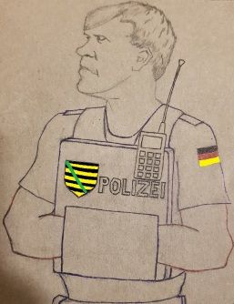
Mir bleibt nichts anders übrig, als die Initiative auf mich µ übernehmen. Ich gehe von der Idee aus, dass das Wichtigste ist, alle bekannten Koordinaten des Verbrechers weiterµgeben. Der Mechanismus des Verbrechens liegt sowieso auf der Hand: Nancy gab dem Verbrecher den Zugang zu ihrem Benutzerkonto preis. Die Umstände, die dazu geführt haben, spielen jetzt keine Rolle. Der Polizistin ist das nicht interessant, dass
Nancy
den Verbrecher als einen adäquaten Menschen eingeschätzt habe und ihm Glauben geschenkt habe. DassNancy
naiv ist, ist sowieso klar. Die aktuellsten Aufgaben sind jetzt:Nancy hat meine Bitte erfüllt: sie hat das "ursprüngliche" Handy heute mitgebracht. (vielleicht hat sie es ihrer Tochter weggenommen). Ich habe ihr die Anweisung erteilt, das Nutzerkonto auf dem "ursprünglichen" Handy wiederherµstellen, also jetzt bleibt es nur übrig, den Verbrecher von diesem Handy aus anµgreifen und ihm den Hals µ brechen. Ich habe ihr Handy mit meiner E-Mail verbunden, damit jede Handlung, die in Bezug auf dies Konto vor sich geht, mir akut weitergegeben wird.
Nachmittags, als ich mich mit einer Zigarette von den Lektionen erholte, bekam ich von Nancy eine lange SMS, die hörte sich an, als ob sie von einer verrückten Person ausging. Die SMS bestand aus der Bitte, auf keine Liebe gegenüber ihr µ hoffen. Laut ihren Worten, schätzt sie meine Aufmerksam, die ich ihr gegenüber erweise, aber sie möchte, dass diese Beziehungen nur in Form einer Freundschaft weiter existieren.
Ich bin beeindruckt worden, aber ich antworte nichts. Ja, ich habe eine Initiative auf meine eigene Faust ergriffen und jetzt ernte, was ich verdient habe. Aber mein Motiv ist transparent: ich bin ein 49-jähriger Mann, der eine Krise des Alters erlebt, die verfluchte Angst, dass er für immer unverheiratet bleibe. Das ist sein Kampf, der möglicherweise (höchstwahrscheinlich sogar) zum Scheitern schon verurteilt ist. Wenn diese Geschichte schon vorbei ist, hat der Himmel so beschlossen, amen.
Trotz der verrückten SMS erwies der heutige Abend sich sehr heiß. Bis in die späte Nacht kamen an meine E-Mail verschiedene Codes, und ich schickte Nancy sie per WhatsApp. Das bedeutete, dass Nancy alle Kunden ihres Nutzerkontos aktiv vernichtete. Aber das komische ist, dass sie dabei in die Schleife geriet: sie löschte sich selbst wiederholt! Jedes Mal sobald sie sich gelöscht hatte, begann sie sofort ihr eigenes Konto Telegram wiederherµstellen, und sie drehte diesen sinnlosen Zyklus dutzend Mal. Aber das amüsierte mich. Das war meine Rache für ihr Verbot von Liebe, worin die heutige SMS bestand. Näher zur Mittelnacht beruhigte sie sich.
Heute bin ich in der Werkstatt. Nancy ist im Hauptquartier. Ich schrieb ihr eine Textnachricht: "Wie geht's?" Sie antwortete etwas neutrales (vielleicht war die gestrige SMS noch im Chat µ sehen, und sie war im Kontrast zu meinem heutigen freundlichen Ton), aber mich überlief ein Schamgefühl, ich stellte mir vor, dass sie etwas verschweigt und sie an etwas leidet.
Der Chef ließ uns früher, als um 15:45, frei, und ich fuhr von der Werkstatt aus nach Hause nicht, sondern weiter. Ohne zu Hause eine Pause einzulegen, gab ich Gas und flog direkt Richtung das Hauptquartier. Das rote Fahrrad Nancys stand noch auf dem Parkplatz, was bedeutete, dass ich Glück hatte: mich # verspätet hatte. Ich betritt das Gebäude und traf auf eine dreiköpfige Gruppe, die aus Nancy, Herrn Hartmann und Herrn Sieger bestand. Als ich Nancy erblickte, begann mein Herz öfter µ klopfen.Sie ging zu einem Interview mit Herrn Sieger und ich blieb mit Herrn Hartmann auf der Etage auf sie warten. Herr Hartmann fragte mich, was ich in der Werkstatt gemacht hatte, und schlug vor, mir µ helfen, schicke und professionelle Fotos für den Lebenslauf µ machen. Wir vereinbarten den nächsten Mittwoch für seine Assistenz.
Nancy beendete das Interview, und wir gingen auf den Parkplatz. Aber sie sagte, dass sie jetzt ein Fahrrad-Service besuchen will, um die Pedale µ wechseln (sie erklärte, dass sie # gewusst hatte, dass ich ein Mechaniker bin, deswegen diese Reparatur beim Service bestellt hatte). Sie versprach dennoch, bei mir zu Hause vorbeizuschauen, sobald der Termin zu Ende ist.Sie ist gekommen, wie versprochen. Also ich soll jetzt sicherstellen, dass ihre gestrigen Tätigkeit Früchte gebracht hat. Meine Mission ist, auf dem Verbrecher ein Kreuz µ machen und dieses stressige Telegram-Abenteuer endgültig in den Mülleimer der Geschichte µ schmeißen. Aber es ist gegen 17:00 schon, und ich mache mich auf meine Arbeit. Jeden Donnerstag arbeite ich kurz als Nachhilfelehrer in einem Büro, das in hundert Metern von meinem Restaurant liegt. Ausgerechnet heute ist Donnerstag, aber ich soll heute nur für wenige Minuten dort erscheinen. Aus diesem Grund beschloss ich, Nancy mitµnehmen, um zwei Fliegen mit einer Klappe µ schlagen (sowohl ihr Gefallen µ tun als auch meinen eigenen Plänen # µ schaden).
Unterwegs zeigte sie mir ihre neuen Pedale so stolz, als ob es sich um neue Schuhe handele. Aber, sagte sie, das Problem mit den Gängen hängt immer noch wie ein Damoklesschwert über ihr. Ich fragte: "Warum repariert derjenige Mensch dies Fahrrad #, der es Ihnen geschenkt hat?" Sie antwortete: "Ach, der Ehemann Tante Erikas ist sehr alt und hat schlechtes Sehvermögen."Ich schloss unsere zwei Fahrräder mit meinem Fahrrad-Schloss zusammen an und führte sie in mein Büro. Dort besprach ich etwas mit meiner Chefin, einer schönen Frau. Während des Gesprächs befahl ich Nancy, ein bisschen im Vestibül auf dem Stuhl mich abµwarten. Nancy begann aber µ nerven. Ich unterbrach mein Gespräch abrupt und schrie sie ein bisschen ekelhaft an: "Können Sie 5 Minuten ruhig # bleiben? Sie kennen den Code des Fahrradschlosses, Sie können selbst Ihr Fahrrad vorzeitig befreien und mich in Ruhe lassen!" Sie setzte sich mit einer trüben Miene. Endlich wurde ich frei. Ich warf einen oberflächlichen Blick auf ihr Handy: der Verbrecher war weg, nur sie selbst war der einzige Benutzer des Kontos. Wir verließen das Gebäude.
Um mein Benehmen im Büro, ein wenig ausµgleichen, holte ich eines von den Spielzeugen, die ich in der Werkstatt gebaut hatte, aus der Tasche heraus. Sie wollte zuerst das Geschenk # annehmen. Anscheinend versuchte sie sich noch an ihrer gestrigen Position "Freundschaft über alles!" noch festµhalten. Aber da erkannte sie, dass dies ein ausgesägter ukrainischer Dreizack ist, und griff nach ihm kurzerhand, als wäre sie keine große Junkerin aus der Akademie, sondern ein Kind: "Wollen Sie, ich bemale ihn?"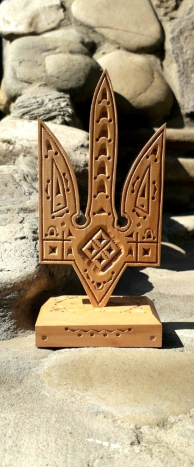
Wir begannen Abschied voneinander µ nehmen, und sie fragte: "Verfügen Sie trotzdem morgen über Zeit, mein Fahrrad µ untersuchen?" Ich nickte. Stolz befüllte mich. Sie hatte mich # weggeworfen. Diese Runde habe ich gewonnen.
| Nancy | "Wie alt sind Sie? 49?" |
| ich | "Woher wissen Sie das?" |
| Nancy | "Sie haben in Ihrer Vorstellung gesagt: 'Fast 50'!" |
| ich | "Ja, aber ich bin 51." |
Bis ihrem Haus bleibt noch eine Strecke zwei Kilometer lang, und nach einer kurzen Überlegung fragt sie mich kokettierend: "Können Sie mir Ihren 'Hubschrauber' ausleihen, um das µ vermeiden, dass ich zu Fuß nach meinem Haus schaffe?" Ich willige ein und reiche ihr mein Fahrrad.
Die "Krankheit" des Fahrrads ergab sich lächerlich. Sie ist auf eine Modernisierung zurückµführen, die jemand zugunsten dieses Mädchens durchµführen versucht hat. Die Ereigniskette kann man leicht nachvollziehen: Als er dem Fahrrad den Fahrradständer hinzugefügt hatte, hatte er unabsichtlich mit diesem Ständer das Kabel, das die Gänge bedient, ganz gewürgt (für die Fixierung des Ständers ist eine große Schraube zuständig, die sehr mächtig ist, sodass das Kabel unter diese Schraube wie in einen Schraubstock geriet). Ich befreite das Kabel, und die Schaltung begann µ funktionieren. Mir blieb es nur übrig, die Schaltung einµstellen.
Ich kann # begreifen: was für eine Ingenieurin bist du, wenn du so eine lächerliche Panne # beheben kannst?Ich machte mich mit ihrem Fahrrad auf eine Probefahrt und erreichte ein naheliegendes Dorf. Von dort aus schickte ich ihr ein Herz per WhatsApp. Das Herz habe ich auf einer Straße des Dorfes gefunden, ein Graffiti, und fotografierte es mitsamt dem Fahrrad (um µ zeigen, wie weit ich mit diesem Fahrrad gefahren bin). Zu meinem Erstaunen empörte sie sich über das Herz #, ihre Reaktion kann ich sogar als etwas kokettierend bezeichnen.
Ich bin zum Kaufland gekommen, um den Austausch der Fahrräder durchµführen, aber sie verspätet sich um eine gute halbe Stunde. Als sie endlich erscheint, strahlt ihr Parfum so ein Aroma, als ob sie zu einem Date geht. Aber das Rendezvous hat sich kürzer als ihre 30-minütige Verspätung ergeben, und mich verfolgt bis abends das unangenehme Gefühl, dass noch ein Date heute auf ihrer Tagesordnung stehe, ein wichtigeres, z. B. mit dem Türken.Plötzlich rief Nancy mich an, sagte, dass der Ehemann von Tante Erika krank sei und er die Fahrt abgeschafft habe. Sie lud mich ein, mich ihr und ihrer Tochter für eine vereinfachte Exkursion anµschließen, und zwar, den Tiergarten uns in unserer Stadt µ gönnen, so gesagt im Rahmen eines bescheidenen Teams, zu dritt. Sie versprach, dass wir in 2 Stunden starten, aber in Wirklichkeit ereignete der Start der Exkursion sich erst nachmittags, näher zum Abend.
Nancy und Freya erschienen mit ihren Fahrrädern, und Nancy befahl mir, ihnen anµschließen. Ich führ ihnen hinterher ab. Kein Interesse an mir zeigte Freya, aber Nancy benahm sich sehr freundlich bezüglich meiner. Sie sagte mir sogar, dass sie an den See eines Tages zusammen mit mir fahren möchte. Ich wurde rot.
In diesem Tierpark gibt es nicht nur Käfige mit Tieren, sondern zahlreiche Spielplätze. Freya mag solche Geräte leidenschaftlich, sie ist gern geklettert.Auf einem Sportgerät amüsierten wir uns mit Nancy, und ich bemerkte, dass sie sehr schüchtern ist, sie fürchtet schnelles Schwingen. Ein Gefühl Mitleids erweckte es in mir, es befestigte mein Streben danach, mich um sie womöglich öfter µ kümmern.
Wir verließen den Tiergarten, und bei seinem Tor trennten wir uns plötzlich: Nancy sagte mir "Auf Wiedersehen". Ich erhob meine Braunen, weil nur einziger Weg in die Stadt führte und wir jedenfalls denselben Weg benutzen mussten. Aber ich konnte nichts gegen diesen Befehl unternehmen und fuhr rasch von ihnen fort.Ich war nach Hause schnell angekommen, und da erblickte ich durch mein Fenster, wie Nancy und Freya neben meinem Restaurant fahren. Sie übergingen das Zebra und fuhren miteinander Richtung Kaufland weiter: die Tochter auf dem Fußgängerweg und die Mutter parallel auf der Fahrbahn. Einmal blieben sie stehen. Der Scheinwerfer Freyas erwies anscheinend immer noch technische Pannen: vielleicht fiel er aus, und die Mädchen versuchten ihn wieder µ beleben.
Ist das die Antwort, warum sie verweigerten, dass ich sie bis zum Zentrum begleitete? Ich wendete vom Fenster.Ich nahm etwas Erde bei meinem Freund, dem Gärtner. Ich will die Kaktusse in meiner Wohnung umpflanzen, weil sie ihren Blumentöpfen schon entwachsen sind. Er sagte mir, dass Blumen nicht übliche, sondern spezielle Erde brauchen, und schüttelte mir in eine Dose eine Portion des Grunds, den er für seine Obstbäume vorbereitet hatte. Nancy beobachtete, wie ich mit ihm "spreche". In diesem Moment stand sie aus irgendeinem Grund allein, ohne den Türken.
Heute erzählt uns Herr von Richthofen eine Lektion im Rahmen des Themas - "Vorstellungsgespräch". Herr von Richthofen hielt uns nicht lange, er hat nur eine lustige Pyramide gemalt, wo der erste Eindruck, Gestik, Mimik, Kleidung, Manieren usw. 93% einnehmen und die Kompetenz in dem Fach nur 7% einnimmt. So komischerweise verteilt sich die Wahrscheinlichkeit des Erfolgs bei dem Vorstellungsgespräch in diesem Land.
Herr Hartmann erfüllte sein Versprechen, mich für den Lebenslauf µ fotografieren. Ich kann # begreifen, warum die Deutschen stets propagieren, Lebensläufe µ vermehren? Wir sprechen deutsch #! Keine Firma braucht solche Mitarbeiter wie uns! Ich stand vor einer Wand, nahm die Körperpositionen an, wie der Fotograf bat, aber mein Gesicht verriet totale Abwesenheit jeglicher Fröhlichkeit. Herr Hartmann schrie mich deswegen ab und zu an.
Nancy ist heute nicht im Hauptquartier, sondern in der Werkstatt.
Mir gefällt nicht sehr, dass sie dem Türken dort ganze Zeit widmet
(er auch ist heute in der Werkstatt).
Trotz meiner Melancholie bekam ich nachmittags eine Kurzmitteilung von ihr, das waren
Fotos ihrer heutigen Handwerke.
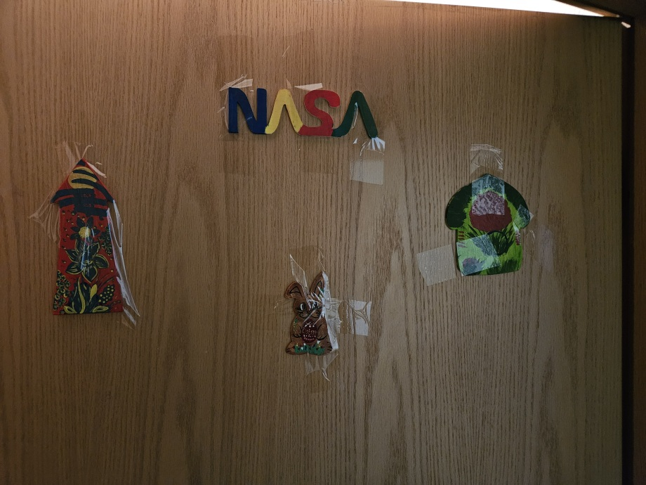
In einigen Minuten erschien der Türke und ich verlor Nancy allmählich. Nancy spazierte stets mit ihm, sie saß mit ihm im Zug, sie fuhr mit ihm im Fahrstuhl; während der Promenade durch die Metzgerei versuchte sie ihm sogar eine von den Würsten µ geben, die uns der Metzger schenkte, aber die Wurst war aus Schweinfleisch.
Sie beide sahen wie ein Paar aus. Ich schleppte in der Exkursion mit dem Rest zusammen und verstand ihr Verhalten #. Einmal entfernte ich mich kurz und kaufte in einem der Kioske des "Globus" einen Zauberwürfel.Nur in einer Episode war der Türke neben ihr nicht. Einmal entfernte sich der Türke für paar Minuten irgendwohin, und ich geriet mit Nancy zusammen in eine dreiköpfige Gruppe, wo eine unsere Kollegin namens Iris uns Gesellschaft leistete. Das ist eine Frau mit guten Manieren, etwas älter als wir, ich werde sie im Weiteren "Schwester Iris" nennen. Nancy fragte Schwester Iris, was mein gestriges Wort "atemberaubend" bedeutet. Schwester Iris sagte scherzhaft, dass jede Frau solle, wenn sie so ein Kompliment bekommt, ins Bett mit ihrem Bräutigam gehen. Nancy lachte aus.
Als wir in unserer Stadt angekommen waren, wartete ich auf Nancy auf dem Parkplatz des Bahnhofs. Ich hoffte, dass sie sich jetzt endlich vom Türken trennt. Ist es ja nicht möglich, dass sie zusammen nach Hause gehen! Sowieso hatten wir einander "Tschüss!" noch nicht gesagt, und wir waren schon mindestens Freunde, nicht wahr? Sowohl mein als auch ihr Fahrrad waren auf dem Parkplatz angeschlossen, und meinem Kalkül nach, sollten wir wie üblich zusammen Richtung Zentrum vom Bahnhof aus abfahren. Aber sie tauchte erstaunlicherweise auf den Parkplatz # auf. Ich verstand, dass sie sich mit dem Türken am Aussteigen aus dem Zug verzögerte, da überfüllte mich das schlechte Gefühl, dass sie mit ihm irgendwohin mit dem Zug weiter gefahren war! Nach einigen Minuten gab ich auf. Als ich nach Hause kam, guckte ich paarmal durch mein Fenster sogar, ob sie endlich nach Hause fährt. Aber sie erschien freilich #...
Am Abend ruft Nancy mich plötzlich an. Der Anlass des Anrufs hört sich komisch an: laut ihren Worten, hat sie einen Termin mir Herrn von Richthofen heute gerade nach der Exkursion geplant, aber dieser Plan ist von ihn ganz vergessen worden. Ich frage kalt, was ich damit zu tun habe. Sie fragt mich ihrerseits mit ihrer süßen Stimme, ob ich weiß, wird Herr von Richthofen morgen an der Akademie anwesend sein oder #? Ich habe keine Ahnung, und genau das teile ich ihr mit etwas spöttischer Stimme mit. Nancy legt den Hörer # auf, sie versucht mir die Lage µ schildern, in welche sie geraten ist, um mein Mitleid hervorµrufen. Sie fängt mit solchen Worten an: "Ich bin gleich nach der Exkursion nach Hause gefahren..." Das klingt wie ein Hohn und anstatt Mitleids ruft nur Verachtung hervor. Ich sage etwas formelles und runde das Gespräch ab.Ich bin nicht dumm, ich kapierte schnell, dass dieser verlorene Termin mit Herrn von Richthofen nur als Anlass dient, in der Realität handelt es sich um ihren Wunsch, mit mir in ein Gespräch µ kommen. Kann sogar sein, dass sie einen Schutz in mir gesucht hat. Aber ich fühle mich verraten und habe mich geweigert, ein offenes Ohr für ihre Signale µ haben.
Danach folgte ein Unterricht in Mathe. Hier gelang es mir, mein Talent µ zeigen, da ich vor 10 Jahren eine Lehrkraft in dieser Fachrichtung war. Nancy saß neben mir. Einmal näherte unser Türke sich zu uns und fragte mich nach der Lösung eines von Problemen. Nancy hielt sich zurück, ich kontaktierte mit ihm, aber ich stellte fest, dass er gar nichts in den Aufgaben versteht.
Ich habe gedacht, dass das unglückliche Gespräch am Donnerstag der Beginn des Endes sei, aber Nancy rief mich nach der Akademie plötzlich wieder an und vermittelte, dass der Scheinwerfer Freyas sich wieder schlecht benimmt. In einigen Minuten erschienen sie mit Freya wieder vor meiner Haustür. Sobald sie angekommen waren, begann ich mein Leid laut ausµdrücken, dass ich so schlecht das Fahrrad repariert habe, dass ich ein schlechter Handwerker bin usw. Nancy versuchte mich µ beruhigen: "Das kann jedem passieren usw."
Ich brachte meinen Zauberwürfel aus der Tasche heraus und fragte:| ich | "Mag Freya so ein Spielzeug?" |
| Nancy | "Sie hatte einen Zauberwürfel in der Heimat." |
| ich | "Die Heimat ist weit entfernt. Ich frage: besitzt Freya einen Zauberwürfel hier?" |
| Nancy | "Nein. Aber wir können so teure Geschenke # annehmen." |
| ich | "Haben Sie nach der Meinung Ihrer Tochter überhaupt gefragt?" |
Ich traf die Entscheidung, diesen alten Scheinwerfer durch eine teure LED µ ersetzen. Das heißt, dass ich mir vornahm, die LED von meinem eigenen Gerät abµnehmen. Diese LED hatte ich vor einigen Monaten für 30€ gekauft, und war sehr stolz auf sie. Das Fahrrad Freyas blieb wieder bei mir übernachten, und die zwei Mädchen machten sich auf den Weg nach ihrem Hause zu Fuß.
Während der Pause spricht Nancy mit ihrer Mama, und ich bin zu meinem Freund, dem Gärtner, gekommen. Dabei bin ich buchstäblich unter der Erde versunken. Ich meine das Loch, das der Gärtner im Hof für etwas ausgegraben hat. Weil der Gärtner mit seinem Kopf in der Tiefe verschwunden ist, habe ich in dem Loch auch sinken müssen, um ihn anzureden. Ich frage ihn, ob ich ihm etwas für die Erde schuldig bin, Bier oder so etwas. Der Gärtner will nichts. Herr Hartmann hat sich uns angeschlossen und fragt mich nach dem Schicksal der Fotos, die er am 19. März gemacht hat. Er interessiert sich sehr, ob ich sie schon in den Lebenslauf eingesteckt habe. Ich antworte, dass diese Fotos mir # gefallen haben (Als Herr Hartmann mich fotografiert hat, hat er mich µ lächeln µ zwingen versucht, aber das niedrige Niveau meines Selbstvertrauens erlaubt mir das #, ein natürliches Lächeln zu gebären. Deswegen habe ich dort böse und unzufrieden gelächelt). Die beiden lachen aus.
Nach dem Unterricht besucht Nancy mich, um ihr Fahrrad abµholen. Freya fehlt, und Nancy betont, dass sie absichtlich ohne Freya angekommen sei. Sie erklärt, dass sie mit mir personell, von Auge zu Auge, sprechen möchte. Ich nicke. Sie fragt mich von neuem, warum ich so kalt ihr gegenüber bin. Ich habe schon geschrieben, dass ich # weiß, was ich auf solche verrückte Vorwürfe antworten soll, und antworte nichts. Sie setzt ihre Attacke fort und erzählt, dass ihr Stolz ihr schon fast verboten habe, mir Avancen µ geben, weil ich diese Signale # entgegennehme. Sie widerspiegelt mir ihre Gnade wie eine gute Schauspielerin, ausatmend: sie beschließe, heute mir die letzte Chance zu geben.Freilich verstehe ich, dass sie mir schon fast ausdrücklich Hof macht. "Ob ich ihr wirklich gefallen habe? Aber sie ist um gute 20 Jahre jünger als ich! Jedenfalls ist der 28. März der letzte Tag in der Akademie, und nach dem Abschluss werden wir uns niemals sehen!" - denke ich, während wir das reparierte Fahrrad schieben.
Eine von ihren Nachbarn, eine junge ukrainische Frau, begrüßte uns. Nancy zeigte keine Verlegenheit vor der Nachbarschaft hinsichtlich des Fakts, dass sie ein Mann begleitet.So erfuhr ich ihre exakte Adresse.
Heute befinden wir mit Nancy uns in den diametral gegenüberliegenden Enden der Stadt. Laut dem Lehrplan ist sie heute mit dem Handwerk in der Werkstatt beschäftigt und ich bekomme Lektionen im Hauptquartier.
Während einer der Lektion erfuhr ich, dass die deutsche Regierung sich daran interessiert, dass Singles aktiver Paare bilden, da es günstiger sich ergibt, eine Wohnung pro eine Familie zu liefern, als eine komplette Wohnung jedem Menschen zur Verfügung zu stellen. Mir kam die Idee, Nancy µ heiraten und auf diese Weise die ukrainische Bürgerschaft µ kriegen.
Die Lektionen im Hauptquartier sind nicht immer der Bundespolitik gewidmet. Manchmal zieht man für uns Unterrichtsstunden in Mathe voll, ab und zu gucken wir Filme oder spielen intellektuelle Spiele. Z. B. heute brachte Frau Hammer uns einige Nuancen der deutschen Grammatik bei. Sie druckte Aufgaben mit dem Drucker aus und verteilte sie unter Junkern. ich nahm eine von den Aufgaben mit, um Nancy sie gelegentlich weiterµgeben.Nach dem Unterricht lud ich Nancy zu einem Zusammentreffen im Park ein. Sie kam mit Freya. Das Fahrrad Freyas leuchte dank meinem Scheinwerfer wie ein Stern.
Ich wusste #, auf welche Weise ich das Gespräch anfangen soll, und begann meine Jacke ausµziehen. Nancy fragte: "Was haben Sie vor?" Ich sprang auf einen Stumpf und führte einen Salto aus. Die Landung war nicht sehr erfolgreich, mein Gesicht wurde im Flug von einem Stein oder einem Zweig getroffen, aus der Nase begann das Blut µ rennen, aber dieser Unfall ist eher zu meinen Gunsten passiert: so ein erhöhter Stress verstärkt nur den Eindruck auf die Mädchen.
Nach dem Salto begann ich mit meinem Geständnis. Die Wörter entfielen. Der Sinn der Rede bestand darin, dass die 6 Wochen schon fast vorbei sind, die
Akademie
sei zu Ende, wohingegen ich unsere Bekanntschaft # verlieren will.Nancy sah mich wie einen zweiten Jesu Christi an. Freya schwieg und mischte sich # ein. Ich fragte Nancy, ob sie einverstanden ist, dass wir weiter zusammentreffen und sie mir die ukrainische Sprache weiter beibringt. Sie sagte Ja.
Als wir den Park verließen, trafen wir uns auf meine Chefin. Sie übt dort nach der Arbeit eventuell einen Spaziergang µ unternehmen. Ich begrüßte sie: "Guten Abend!" Auch Nancy erkannte und begrüßte sie. Meine Chefin beantwortete die Begrüßung #. Man sah ihr an, dass sie meine Manöver zur Sicht bekam und den Schluss daraus gemacht hat, dass ich Nancy Hof mache. Das gefiel meiner Chefin anscheinend nicht so. Aber ich soll euch sagen, ich stehe auf deutsche Frauen #. Ich kann mir # vorstellen, wie zwei Menschen Liebe üben können, wenn einer von ihnen Deutsch spricht, während der andere nur wie eine behinderte Person µ sprechen versucht? Das Maximum davon, was so ein "Paar" könnte, ist die Wörter aus deutschen Pornofilmen auszutauschen: "Das ist fantastisch!" usw.!
Ich übergab Nancy das Blatt mit der Aufgabe aus der heutigen Lektion, drehte mich um und ging nach Hause, meine Mission war hiermit erfüllt worden.
Vom Haus aus schrieb ich Nancy eine SMS: "Ich liebe Sie und Freya trotz alledem." Ich erwartete eine Explosion ihres Ärgers, aber ihre Antwort wies mich # zurück. Im Gegenteil, sie warf mir vor, dass ich sie zu schnell verlassen habe, wohingegen ich sie nach Hause begleiten sollte.So eine Chance soll man # verpassen. Als es schon ganz dunkel war, kam ich zur Schwelle ihres Hauses. Ich sollte eine männliche Tat demonstrieren. Ich rief sie an, und sie kam runter. Sie fragte mich, ob ich mich gut nach dem Salto fühle.
Wir standen unter dem Firmament mit den Sternen, sie nahm ihr Taschentuch und wischte die Wunde auf meinem Gesicht. So berührte ich ihre Hand zum ersten Mal. Ich fragte sie, können wir selbst, ohne die Akademie, das Hindenburg-Monument besuchen? Sie antwortete: "Ja, und nicht nur das Hindenburg-Monument erwartet uns." Ich teilte ihr mit, dass ich ein Fernglas zu Hause habe. Ich wendete mich an sie mit dem Vorschlag, dadurch auf den Mond unsere Blicke eines Abends zu werfen. Sie antwortete: "Ja, das würde schön sein."Alles lief gut, aber am Ende erklang eine sonderbare Frage: "Wie sehen Sie die Kinder an?" Ich antwortete: "Normal. Genauso, wie Bäume, Tiere usw." Es stellte sich heraus, dass ihre Tochter ihr sagte, als hätte ich sie stets angestarrt. Da kapierte ich, was Nancy mit solchen sonderbaren Fragen meint. Ich fragte: "Wo sie wohnten in der Heimat? Unter Wilden? Wie können so über mich phantasieren?" Sie erklärte, dass sie eine Familie kannte, wo ein Mann seine eigene Tochter sexuell missbrauchte. Ich fand keine Worte, solche Dinge passieren ja bei uns in Russland, aber ich wusste #, dass sie auch in der Ukraine möglich sind. Ich gab keinen Kommentar, wünschte Nancy gute Nacht und entfernte mich.
Frau Adler guckte in die Küche, um mich zu einem Interview einzuladen. Ich saß mit Nancy und antwortete Frau Adler, dass ich das Gespräch mit dem Mädchen beenden soll. Als ich zum Interview endlich kam, lobte mich Frau Adler, sowohl für den Anzug als auch für meine Höflichkeit bezüglich des Mädchens.
Nancy warf mir vor, dass ich sie ganzen gestrigen Tag # angerufen habe. Ich entschuldigte. Dennoch verstand ich ihre Worte als eine langfristige Erlaubnis, so gesagt eine Carte blanche, sie anzurufen, sooft eine Laune dafür bei mir erscheint. Das füttert mein Selbstvertrauen, dass ich nicht sonderlich schrecklich bin. Also ich soll mich energischer ihr gegenüber benehmen. Und ich sagte ihr in Ukrainisch:| ich | "Wenn ich schon in diesem Jahr eine Arbeit finde, darf ich Sie heiraten?" |
| Nancy | "Wieso so ein plötzlicher Übergang?" |
| ich | "Ich sehe, dass das Leben in Deutschland Ihnen härter als mir fällt." |
| Nancy | "Wollen Sie nur heiraten, egal wen, oder interessiere ich Sie ein bisschen?" |
| ich | "Keine Sorge, Sie gefallen mir nicht nur als ein Mensch, sondern auch als ein Mädchen." |
Mein Übergang wirkte wirklich etwas brav, aber angesichts des Gangs der Ereignisse sieht er logisch aus. Nancy schlug vor, zu Fuß den ganzen Weg nach ihrem Haus zurückzulegen.
Wir tranken Kaffee in der Tankstelle, die in 100 Meter von ihrem Haus steht. Sie erzählte mir von ihrem Mann, sagte, dass sie mit ihm schon seit 8 Jahren # lebt. Er ist ein großer IT-Spezialist, aber Nancy mag solche Leute #, die zu viel Zeit am Computer verbringen.Ich fragte sie, ob sie sich schämt, mit mir in der Nähe ihres Hauses zu erscheinen, Da ein verlegener Ausdruck auf ihrem Gesicht lag, sagte ich ihr die folgenden Worte: Ich liebe Sie, aber ich verlasse Sie jetzt. Später werden wir allmählich näher und näher zueinander." Also, ich sagte ihr diese Worte und fuhr Richtung meines Hauses ab.
Ich sagte: "Je nach den Regeln des Genres soll ich Ihnen die Hand küssen." Sie antwortete: "Ja, küssen Sie." Ich küsste, aber es schien #, ausreichend µ sein. Da ruf ich ihre Lutscher in mein Gedächtnis und bat um einen. Sie begann, das Päckchen herausµholen. Ich darf so einen Moment mir # entgehen lassen. Ich schlug ihr vor: "Wollen wir ein Spiel spielen. Versuchen Sie es mir von Ihrem Mund aus in meinen Mund µ übergeben! Ich habe es in Filmen gesehen, so geben Narkomanen und Punks Drogen von einem zu anderem weiter!" Sie tut sich erschrocken an. "Oh das ist viel zu viel, möglicherweise anderes Mal!" Aber diese Worte dienten nur einer kurzen Überlegung. Nach paar Sekunden fand sie einen Schatten hinter der Ecke des Gebäudes, stellte sich in dorthin und lud mich ein, wirklich mit diesem Spiel µ beginnen. Ich war ein bisschen verlegen, aber tritt in den Schatten, und wir führten diese Übergabe durch, das klappte, akkurat, genau so wie in den hoch erwähnten Filmen. Die Barriere war überwunden worden und sie bat mich fortµsetzen, das heißt, einen richtigen Kuss durchµführen, ohne jegliche Lutscher. Das war der erste Kuss in meinem Leben überhaupt.
Obwohl sie schon ziemlich offen war, verlor sie solche Worte, dass sie sich nicht sehr sicher sei, ob sie sich richtig benimmt. Ich verstand diese Worte als ein notwendiges Ritual, aber für alle Fälle beschloss ich ihr den Schwur zu geben, dass ich sie nie verlasse. Ich sagte das seriös, meine Idee war keineswegs, sie ausµnutzen und nachdem losµwerden. Obgleich das als ein Spiel gestaltet war, ist es mir fremd, Gemeinheiten µ begehen.Nancy bat mich für sie mit Freya eine Exkursion µ organisieren, sie spiegelte ihre Situation so wider, dass sie kontinuierlich in Melle sitzen und sogar in Osnabrück keine Ausflüge unternehmen, und das ist freilich nicht sehr gesund. Ich willigte ein, und machte mir das zur Aufgabe. Am Morgen kam ich zu ihnen, und wir fuhren zu dritt mit Fahrrädern Richtung Bahnhof ab. Ich kaufte Tickets für Freya und Nancy für ganzen Tag (Tageskarten). Was mich betrifft, beherrsche ich eine Monatskarte. Wir planten Hindenburg-Monument µ besuchen. Wir schließen die Fahrräder am Bahnhof an und stiegen in den Zug ein. An einer Station am südlichen Rand Osnabrücks ("Osnabrück Süden") stiegen wir aus. Nancy wollte eine Bibliothek besuchen, die irgendwo dort steht. Die Bibliothek lag in 10 Minuten zu Fuß. Während der Promenade nahm sie mich an die Hand sogar. Zum ersten Mal in meinem Leben ging ich so mit einem Mädchen, wie ein Bräutigam. Nancy schritt wie von zwei Kindern umkreist: ich war von einer Seite von ihr und Freya - von der Anderen.
Aber schon in der Bibliothek fing Freya an, sich nervös µ zeigen. Nach paar Sehenswürdigkeiten äußerte sie schon den Wunsch, nach Hause zurückµkehren. Also wir begannen uns die Richtung weg vom Hindenburg-Monument µ bewegen. Ich protestierte #, obwohl ich unsere Fahrkarten für ganzen Tag bezahlt hatte, Freya war ja ein Kind. Um ein bisschen Melle noch µ genießen, äußerte Nancy den Wunsch, dass ich ihr noch eine Bibliothek zeige, "die Stadtbibliothek". Ausgerechnet dorthin hatte ich mich vor einem Monat angemeldet. Wir steigen in die Straßenbahn ein und führen in das entsprechende Stadtviertel. Die Stadtbibliothek ist sehr groß. Wir besichtigten sie, bis Freya sich wieder µ langweilen begann. Nancy fand endlich ein Buch, das mit ihrer Spezialität etwas µ tun hat, und ich lieh dies Buch für sie aus. Auf mein Konto. Das Buch war ein Wörterbuch Deutsch - Russisch, ein spezielles, für die Begriffe, die mit Hubschraubern verknüpft sind.Also wir hatten unseren Ausflug in Osnabrück vorzeitig beendet. Je näher wir Melle wurden, desto besser wurde die Laune von Freya. Nach der Rückkehr lud Nancy mich nach ihrem Haus ein.
Aber zuerst machten wir Halt neben meinem Hause, Nancy befahl mir, meine Kleidung einµsammeln, sie gab ihren Wunsch bekannt, anhand ihrer Waschmaschine mir Gefallen µ tun. Dabei sagte sie pathetisch: "Wir sind Flüchtlinge und sollen einander helfen!"
Ihr Wohnung ergab sich sehr gut möbliert und wirkte so, als wäre das in Wirklichkeit ihre eigene Wohnung. Nancy berichtete mir, dass es Tante Erika geschafft habe, und ich könnte auch mit Hilfe von Tante Erika meine Wohnung gemütlich gestalten.
Ja, die Exkursion scheiterte, eine Unsumme Geld wurde verloren, aber ich war verliebt und wurde deshalb nicht allzu enttäuscht.Ich nahm das Geschehene sehr ernst, ich hatte die Angst, dass ich Freya traumatisiert habe. ich kniete vor Nancy sogar nieder, aber Nancy tröstete mich. Sie wiederholte, dass nichts Schreckliches passierte, "die Mütterchen" selbst daran schuld sei, sie sehnte 8 Jahre nach Küssen, wir sollten einfach die Tür zumachen usw. Also sah Nancy nicht besonders beeindruckt aus.
Als Krönung des Ganzen rief Nancys Mama an (Freya hat sie offensichtlich schon vom Ereignis informiert). Es schien, ein ungeheuer internationaler Skandal sei dabei, µ starten. Nancy machte hastig Kreuze, bevor sie den Anruf ihrer Mama annahm. Ich meinerseits begab mich fluchtartig zum Ausgang, nur einer von den Gedanken in meinem Kopf zu diesem Moment war positiv: "Ab jetzt wird niemand mich als Pädophiler bezeichnen!"
Nachdem ich die Wohnung verließ, ging Nancy auch aus, um mich auf der Etage vor der Wohnungstür µ trösten fortµsetzen. Sie versuchte dort sogar mir noch einen Kuss µ geben, aber Freya mischte sich da wieder ein: Freya steckte ihren Kopf von der Wohnungstür heraus, und ich wurde gezwungen, Abschied von Nancy zügiger µ nehmen.Nancy kehrte in die Wohnung zur Rede mit ihrer Familie zurück, ich fuhr mit schwarzem Herzen nach meinem Hause ab.
Ich saß zu meinem Hause und fühlte mich wie ein Verbrecher. Aber plötzlich gab diese Familie mir eine zweite Chance. Nancy rief mich an und lud mich zum zweiten Mal nach ihrem Hause ein.
Nancy stellte mich und Freya im Flur gegeneinander und schlug Freya vor, alles über mich µ sagen, was sie über mich denkt. Freya sagte etwas, was keine Kritik durchhält: "Als wir gestern in der Bibliothek waren, hatte er ein Telefonat mit jemandem." Nancy habe es laut Freyas Worten # bemerkt, aber Freya verfolgte mich aufmerksam und ihr sei es gelungen worden, mein Telefonat abµhören. Je nach Worten Freya erteilte der unbekannte Anrufende mir den Befehl, dass ich Nancy "ausnutzen" solle. Ich und Nancy lachten aus.
Ich hatte an diesem Abend so eine Ehre leider # bekommen, mit Mama Nancys einen Kontakt aufµnehmen, uns gegenseitig kennenµlernen. Als Nancy Kreuze vor dem Telefonat mit ihrer Mama machte, bot ich selbst Nancy an, sie könnte mich mit ihrer Mama verbinden, aber diese Idee wurde aus irgendeinem Grund # umgesetzt.Ich fragte, ob Nancys Mama Tante Erika kennt, vielleicht könnte Tante Erika erklären, dass ich ein normaler Bursche bin, kein erfahrener Jäger nach unglücklichen Frauen. Aller Wahrscheinlichkeit nach, wurde diese Idee auch # umgesetzt. Ich weiß #: entweder hindert die Sprachbarriere oder interessiert ihre Mama sich für Meinungen anderer Leute #.
Nancy zeigte mir ein Kabel von Freyas Handy, das technische Pannen aufwies. Ich nahm es mit und versprach es eigenhändig µ reparieren. Ich durfte den fragilen Frieden # verwelken lassen.
Früh am Morgen habe ich das Kabel von Freya repariert und ihnen in den Briefkasten geworfen.
Die Reparatur habe ich ich spät in der Nacht verwirklicht. Ausgerechnet am heutigen Tag habe ich einen Urlaub. Er ist vor einigen Tagen bestellt worden, wegen meines polnischen Kameraden namens Ludwig, dem ich meine Freilassung aus dem polnischen Gefängnis zu verdanken habe. Er hat versprochen, heute nach Berlin zu kommen, und er will, dass ich ihn begleite. Sein Wunsch ist, Haschisch ein bisschen µ kiffen, in Deutschland ist Haschisch legal, in Polen #. Die Regeln der Akademie erlauben das, ab und zu einen individuellen Urlaub µ organisieren. Aber diese Möglichkeit soll "verdient" werden: zwei Wochen voller Unterrichts ergeben laut dem Kodex der Akademie einen Tag Urlaub. Da ich stand heute schon 6 Wochen in der Akademie verbracht habe, stehen auf meinem "Konto" 3 Tagen schon, von denen ein Tag für heute abgegeben ist.
Aber der Kamerad kam aus irgendeinem Grund #.
Nach der Akademie fragte Nancy mich, wie es mir geht, und sobald sie erfuhr, dass ich nirgendwohin gefahren bin, lud sie mich zu ihnen ein.Am Abend spielten wir schon zu dritt ein deutsches Brettspiel, namens "Mensch, ärgere dich #!" Tante Erika hat ihnen es beigebracht. Dieses Spiel hat ein ganz anderes Konzept, als das Schachspiel und andere traditionelle Spiele. Es basiert auf purer Aufmerksamkeit, meiner Meinung nach, soll man dieses Spiel Juristen empfehlen. Aber diese zwei Mädchen kennen sich in den Regeln nicht so gut aus, ab und zu stritten sie sich, wo welche Regel anµwenden ist.
Interessant ist, dass Freya ausschließlich Russisch spricht, wohingegen ich mit Nancy versuchen, uns nur auf Ukrainisch µ unterhalten (so hatte ich beschlossen, um Nancy gefallen µ tun). Seither bin ich mir nicht sicher, dass Nancy mit Freya Ukrainisch spricht, wenn ich nicht anwesend bin. Trotzdem verzichte ich # darauf, unter mir und Nancy Russisch µ vermeiden (obwohl ich Ukrainisch schlecht beherrsche).Ich zeigte heute Nancy meine Wohnung.
Ich führte für sie auf meiner Gitarre ein Lied von einer russischen Punk-Gruppe aus. Nur die Melodie, ohne den Gesang. Dieses Lied hat in Nancy Erinnerungen hervorrufen. Sie sagte, dass dieses Lied ihr bekannt scheine. ich antwortete nichts. Nach dem Konzert brachen wir nach ihrem Haus auf.
Während der Fahrt fiel Nancy der Name des Lieds endlich ein: "Das alte Schloss, wo es spukt" von der Punk-Gruppe "King und Narr".Nachdem ich zurückgekehrt war, bekam ich eine lange SMS, wo Nancy mich bat, dies Lied # mehr zu spielen. Dabei nannte sie mich "mein Hase".
Im Lied geht es um einen alten bösen Mann, um einen Zauber, der es wusste, jungen Mädchen ihre Seelen µ erobern. Ehrlich gesagt, habe ich speziell dies Lied ausgewählt, um µ trollen, um Analogien zu der aktuellen Situation µ zeigen. Alles übereinstimmt: ein alter Mann, ein Schloss, eine junge Frau... Aber ich konnte mir # vorstellen, dass ich so ins Schwarze treffe.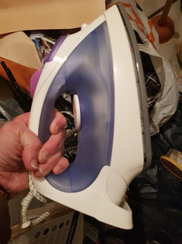
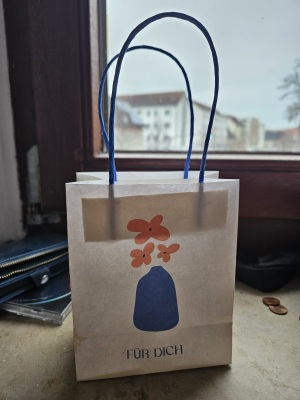
Es stellte sich heraus, dass Nancy sehr abergläubig ist. Ihren Worten nach, als sie ihren Gott gebeten hatte, ihr einen normalen Mann zu schicken, hatte sie auf der Lauer nach "Zeichen vom Gott" gesessen. Sie hatte für diese Zeichen die Farben der Autos bestimmt, die an ihr vorbeigefahren waren. Z. B., "Falls ich jetzt ein grünes Auto ersehe, passt Syd mir, falls das Auto sich hingegen als gelb ergibt, soll ich mich von Syd fernhalten." Dazu kommt, dass sie dies Spiel mehrfach gespielt hatte, wiederholt, das heißt, sie hatte die Regeln ihres Spiels selbst verändert, je nachdem, hat ihr das Ergebnis gefallen oder #: "Falls das nächste Auto weiß ist, soll ich das vorige Ergebnis wegwerfen." usw. Dieses naive Geständnis bedeutete für mich eine eindeutige Diagnose. Das hörte sich wie eine richtige Schizophrenie an!
Ich auch war von Nancy zu den Pferden eingeladen worden. Die Exkursion war heute um 8:30 geplant worden. Das Zusammentreffen sollte neben dem Kaufland stattfinden. Als ich ankam, stand dort eine Frau mit einem elektrischen Fahrrad. Dann erschien Freya. Sie wirkte schlecht ausgeschlafen und begrüßte mich #.
Hinter Freya erschien Nancy. Sie begrüßte mich, aber wendete sich sofort an die Frau mit dem E-Rad. Diese Frau ergab sich als dieselbe Organisatorin, die Schwester von Tante Erika.Wir fuhren in das Gestüt zu dritt ab. Zuerst zeigte uns man den Stahl. Dort zeigte man uns, wie man die Pferde behandelt.
Dann kam es zum Reiten. Eine Beamtin setzte Freya auf ein Pferd und führte sie eine halbe Stunde durch das Feld. Wir rauchten mit Nancy am Feldrand.
Nach dem Reiten sollte Freya an einem Training teilnehmen, in einer Halle, wo andere Mädchen aktiv diverse Übungen ausführten, aber da zeigte Freya sehr definitiv ihre schlechte Art, die Faulheit. Sie verzichtete auf jegliche Fortsetzung.Nancy wendete sich an mich mit der Frage:
| Nancy | "Was soll ich mit so einem faulen Kind machen?" |
| ich | "Überlassen Sie ihr Kind mir. Sekundenschnell nehme ich den Ledergürtel von dem Pferd ab und werde Freya erziehen!" |
| Nancy | "Ich erlaube!" |
Abends bat Nancy mich, erneut eine Fahrt nach Osnabrück µ organisieren, aber als keine Exkursion, sondern als ein Shopping, in den Laden "TK MAXX". Sie wollte sich neue Schuhe besorgen, ihre Zehen schmerzten letzte Zeit. Ich betätigte den Automaten, um Tickets µ kaufen. Freya stellte sich neben mir beim Automaten und nahm daran teil. Wir kauften für Freya und ihre Mutter Tickets für 2 Stunden (Ich benutze meine Monatskarte und brauche Tickets #). Wir nahmen unsere Fahrräder in den Zug mit, um unseren Angriff auf den Laden möglichst schneller zu gestalten.
Die neuen Schuhe wurden schnell gekauft, und wir schufen das, das Limit der Zeit # zu verletzen. Innerhalb 2 Stunden wurde die ganze Fahrt ganz erledigt. Ich begleitete sie nach ihrem Haus und half die Fahrräder in den Keller µ platzieren.Diesen Abend verbringe ich wieder in ihrem Haus. Sie kocht gut. Nancy kocht oder beschäftigt sich mit dem Haushalt, aber alle 5 Minuten lehnt sie sich ab und fragt laut: "Freya, machst du Hausaufgaben?" Und Freya von ihrem Zimmer aus antwortet: "Ja-a!"
Als ich verabschiedete, besprachen wir kurz, wie wir uns während der morgigen Mittagspause in der Akademie stärken werden. Letzte Zeit sieht es logisch aus, dass wir wie ein Bruder und Schwester aussehen. Wir verteilten unsere Rollen folgendermaßen:Während der ersten Unterrichtsstunde war Nancy sehr nett zu mir. Wir schmiedeten sogar Pläne, den Brocken µ besuchen. Nancy zeigte mir Fotos von ihrem jüngsten Geburtstag am 27.XII, als sie noch auf ihrer Arbeit in der Ukraine war. Das bedeutet, dass sie dieses Jahr ein rundes Jubileum hat, wie ich (wenn auch mit der Differenz 20 Jahre). Danach erfolgte die erste Pause (kurze), während deren Nancy normalerweise ein Telefonat mit ihrer Mutter durchführt.
Plötzlich nach der Pause entdecke ich, dass sie sich so benimmt, als ob sie mich # kennt. So eine Metamorphose habe ich noch niemals gesehen. Ich versuche euch kurz zu erklären, was sich ereignete. Solche Situationen sich zwar ereignen, dass ein Mensch mit seinem Bekannten # spricht, ihm aus dem Weg kommt, ihn ignoriert usw. Solche Vorfälle können zwar sogar in Familien entstehen. aber in diesem Fall bestand absolut kein Zank, im Gegenzug: es gab einen guten Zeitvertreib im Vorhinein. Der Mensch hat einfach seinen Modus umgeschaltet, wie ein Roboter. Ich fühlte mich wie in kaltes Wasser geschmissen, ganz frustriert. Aber zugrunde jedem sonderbaren Verhalten liegt irgendeine Ursache, so hat uns noch Herr Freud vor hundert Jahren gelehrt. Logischerweise verband ich diese Veränderung mit dem Gespräch mit ihrer Mama. Bestimmt hatte ihre Mama ihr was unangenehmes gesagt.
Während einer von den nächsten Pausen trafen wir uns aufeinander zufällig im Korridor, und niemand war daneben. Ich versuchte sie anzusprechen, indem ich ihr ein Bonbon anbot. Sie lehnte kategorisch ab.
Darüber, dass wir gestern das Essen für die heutige Mittagspause zubereiteten, erinnere ich sie #. Wie kann ich sie an jegliches gemeinsame Mittagessen erinnern, wenn irgendeine sonderbare schwarze Katze zwischen uns gelaufen ist? Deswegen esse ich heute #.
Wir sitzen auf unseren Schulbänken nebeneinander weiterhin aber tun uns so an, als ob wir miteinander unbekannt sind.Mir kam die Hypothese, möglicherweise liegt diese Wende an irgendeinem schrecklichen Trauma. Stellen wir uns rein hypothetisch vor, dass sie gerade erfahren hätte, dass jemand von ihrer Familie gestorben war. Im Rahmen solchen Szenarios ist so ein Verhalten auch komisch, aber mehr oder minderer nachvollziehbar.
Aber die letzte heutige Unterrichtsstunde war die Informatik. Herr Runge gab Aufgaben bezüglich des Programms "Excel". Ich wusste schon, dass Tabellen # zu Nancys Stärken gehören. Aber sie begann mit Herrn Runge Mimik, Gestik usw. anµwenden, dieselbe lächerliche Art ihrer Kommunikation mit Deutschen, womit sie so ein Bild µ erstellen versucht, als ob ein seriöses Gespräch vor sich geht (obwohl in Wirklichkeit kein "Gespräch" stattfindet, da der Stoff abwesend ist). Dabei versuchte sie mit Herrn Runge µ kokettieren: sie lächelte, ab und zu begann plötzlich unnatürlich µ lachen sogar! Der Gedanke überlief mich: "Oho, was für eine talentierte junge Schauspielerin!"
Auf solche Weise kam ich zum Schluss, dass niemand in ihrer Familie gestorben war. Vielmehr hatte ihre Mama ihr das Ultimatum gestellt, mit mir µ brechen. Nancy leistete der Anweisung ihrer Mama Folge einfach, da ist der Hund begraben!Zum ersten Mal begleite ich Nancy nach Hause nach dem Unterricht #.
Zu Hause sehe ich, dass sie mir irgendeine SMS geschickt hat und nach einer Überlegung es gelöscht hat. Ich fange an µ begreifen, warum Nancy sich jetzt µ sprechen weigert und SMS zu schreiben bevorzugt: die SMS kann man löschen, die Worte, die man aussagt, kann man # löschen.Heute nahm ich wahr, dass Nancy mich nicht nur ignoriert, sondern auch auf eine sonderbare Art befürchtet: während einer der Pausen guckte sie in die Küche, aber dort aß ich ausgerechnet irgendeinen Salat, den ich bei "Netto" gekauft hatte. Sobald sie mich erblickte, schloss sie die Tür sofort. Ich verfolgte zu diesem Moment die Idee, die Dose vom Salat später µ benutzen, ich wollte aus ihr einen Blumentopf bauen, d.h. sie mit der Erde des Gärtners befüllen und meine Kaktusse umpflanzen. Jetzt verderbte dieses neue Ereignis meine Laune. Bisher habe ich gedacht, dass sie mich einfach aus ihrem Kopf weggeworfen habe. Ab jetzt sehe ich, dass sie sich an mich erinnert und sogar leidet. Ich fange an, mir Sorgen für ihren psychischen Zustand µ machen, sie beginnt mir leid µ tun, sie hat meine Empathie erweckt.
Am Abend gehe ich zu Fuß vom Kaufland nach Hause. Bis zum Fahrrad-Weg bleiben noch 100 Meter, da erblicke ich Nancy, die das Fahrrad allein fährt. Ich bin so froh, dass ich den Konflikt ganz vergaß, sodass ich ihr µ schreien beginne: "Nancy!" Sie steigt ab und guckt in meine Richtung. Aber sie erkennt mich #. Da erinnere ich mich wieder an den Konflikt, deshalb passiert nichts, wir nähern uns #.
Während der ersten Pause traf ich auf Nancy in der Allee, wo sie mit ihrer Mama telefoniert. Wieder war niemand daneben. Nancy ging an mir vorbei und wendete ihren schönen Kopf weg.
Da ich im Gefängnis eine Zeitlang verbracht hatte, wurde ich auf die psychologische Hilfe angewiesen. Frau Adler verzichtete plötzlich darauf, als meine Psychologin fortµsetzen, und anstatt Frau Adlers wurde Frau Hammer zu meiner Psychologin. Parallel arbeitet Frau Hammer als eine Erzieherin Nancys. Mein Erzieher ist Herr Sieger.Nachmittags habe ich ein Interview mit Frau Hammer. An diesem Interview sitzend verfasste ich Nancy einen langen Brief auf Ukrainisch und schickte ihn per WhatsApp. In diesem Brief gebe ich mit Hand am Herzen zu, dass ich für Nancy kaum passe. Ich rufe sie auf, um die Liebe nicht µ kümmern, da ich sowieso ein schlechter Kandidat sei. Ich begründe dieses Verdikt mit dem Fakt, dass ich Freya # gefallen habe. Dagegen bitte ich, dass Nancy aufhörte, vor mich Angst µ fühlen. Ich schwöre in diesem Brief, dass ich sie respektiere usw.
Ich verließ die Akademie gleich nach dem Versand des Briefes und fuhr nach Hause ab, bevor Nancy mich anhalten könnte. Mein Brief führte trotzdessen dazu, dass sie mich anrief, dann kam sogar direkt von der Akademie aus zu mir. Wir besprachen die Lage auf meinem Hof. Meine deutschen Nachbarn lächelten, dass sie nach einer Pause wieder erschien. Wären wir keine Ausländer, hätten die Nachbarn gefragt, wo sie so lange verschwunden war. Natürlich, stellte ich ihr die Frage, was zum Teufel am Montag passiert hatte. Keine direkte Antwort bekam ich. Ich versuchte ihr die Antwort µ formulieren µ helfen: "Hatten Sie schlechte Neuigkeiten aus der Heimat bekommen, oder was?" Da sagte sie etwas, was nicht ganz edel ist. Sie erinnerte mich daran, dass damals ein großes Bombardement in der Ukraine passiert war, und viele Kinder getötet worden waren. Natürlich ist das nur eine faule Ausrede, aber ich kniff mein Auge auf diese Lüge zu.
Nancy sagte plötzlich, dass sie schon mit ihrer Mama die Frage hinsichtlich meiner Person erledigt habe. Laut ihren Worten, übergab ihre Mama Nancy die Vollmacht, µ entscheiden, ob Nancy mit mir angefreundet bleibt oder nicht. Nancy fügte auch, dass sie ihre Tochter auch überredet habe, dass ich ein guter Mensch bin. Angesichts dieser Fakten machte Nancy ihre artistische Miene und fragte mich kategorisch, was ich auswähle: sie µ lieben oder sie µ verlassen. Ich wählte freilich die interessantere Variante aus. Nach diesem "Friedensabkommen" fuhren wir zusammen nach ihrem Haus, als ob diese 3 Tage nie existiert hatten.Als ich ihr Fahrrad in den Keller brachte, bat sie mich aus eigener Initiative, ihr einen Kuss µ geben. Dabei verlor sie ihre Mütze. Nachdem führte sie mich in ihre Wohnung, wo ich drei Tage gefehlt hatte.
Zunächst war alles normal gewesen. Freya war nicht so zufrieden, aber sie war schnell in ihrem Zimmer verschwunden, und ich erinnerte nicht mehr an sie. Wir verbrachten die Zeit in der Küche, und die Küsse, die in dem Keller begonnen hatten, fanden ihre Fortsetzung hier. Plötzlich ging die Tür der Küche auf, und Freya lief hinein. Sie inszenierte einen Skandal und beschimpfte uns mit gemeinen Worten. Ich erhörte solche Wörter, welche ein Mensch des weiblichen Geschlechts nie aussprechen sollte.Das war bestimmt ein vorbereiteter Hinterhalt, Freya war hundertprozentig auf der Lauer auf mich. Aber warum hatte Nancy mir gelogen, dass sie mit ihrer Familie die Frage hinsichtlich meiner Person schon erledigt habe?
Das gestrige freche Benehmen von Freya besprachen wir nur knapp, oberflächlich, Nancy sagte, dass Freya diese Wörter aus der Schule habe, solcher Wortschatz normalerweise in ihrer Familie # vorkomme.
Am späten Abend führte Nancy ihr Kind mit Stolz zu meinem Haus. Das neue Gerät ist etwas größer (mit den Laufrädern 26" ausgestattet), aber so einen starken Scheinwerfer, mit dem ich ihr altes Fahrrad ausgestattet habe, hat das neue Fahrrad #. Schlaue Deutsche hatten offensichtlich sofort kapiert, dass der Scheinwerfer teurer, als das neue Fahrrad ist, und hatten zügig den Umtausch organisiert. Ich seufzte. Aber Geschenk ist Geschenk...
Nancy bat mich, den Apparat µ beabsichtigen, ob etwas µ korrigieren ist. Sobald Freya erfuhr, dass ich eingeladen wurde, ihr neues Fahrrad anµfassen, löste Freya ein schreckliches Geschrei aus. Der Sinn ihres Geschreis bestand darin, dass ich mir sicher sein solle, dass alles im Fahrrad ganz in Ordnung sei. Dieses Geschrei zeigte eindeutig, dass meine Einmischung unerwünscht ist, und ihre Familie voller talentierter Ingenieure ist, die selbst alles µ reparieren wissen.
Um als ein Narr # ausµsehen, fragte ich Nancy grob: "Wofür haben Sie mich von meiner Hausarbeit abgelenkt? Bin ich runtergegangen, nur um dieses Geschrei wahrµnehmen?" Ich meckerte, dass ich zu ihrem Opfer wurde, dass sie mich angerufen hat, um mich in eine Falle µ locken, dass sie mich umbringen wollen usw.Trotz dieses unangenehmen Ereignisses endete der Tag nicht so schlecht. Ausgerechnet Freya gab die Idee, wieder das deutsche nationale Spiel "Mensch, ärgere dich #!" µ genießen. Ich griff mein Fahrrad und fuhr mit ihnen nach ihrem Haus. Ab jetzt erinnerte Nancy mich gelegentlich scherzhaft an mein unzufriedenes Schimpfen und benannte mich "Opfer Syd".
Zu ihrem Hause bemerkte ich, dass Freya ab und zu die hässlichen Wörter aus Versehen sogar in ruhigem Zustand benutzt. Das ist wie eine ansteckende Krankheit, dieses Laster. In der russischen Sprache gibt es so eine Tradition: aus einem knappen Set der Wörter, die für Geschlechtsorgane und Geschlechtsverkehr zuständig sind, einen riesigen Wortschatz aufµbauen, der alltägliche Wörter ersetzt. So entsteht ein Jargon, der nur dafür dient, um nicht offiziell µ klingen. In der ukrainischen Sprache gewinnen die Geschlechtswörter keine besondere Rolle, weil man sie betätigt, nur wenn die entsprechende Notwendigkeit entsteht. Da so eine Notwendigkeit im Alltag selten entsteht, wird es auf sie selten zurückgegriffen, und die Kinder klingen wie Kinder, die Erwachsene klingen wie Erwachsene.Heute wird dieses Museum des Nazi-Regimes wieder zum Reiseziel der Exkursion. Aber für Nancy ist das die erste Exkursion in dieses Museum. Der Türke ist auch anwesend, aber letzte Zeit kontaktieren sie seltener und seltener miteinander.
Auf die Exkursion folgte ein Spaziergang für uns beide, da die Abfahrt nach unserer Stadt erst in anderthalb Stunden geplant worden war. Um diesen Spaziergang romantisch µ gestalten, führte ich Nancy in ein Osnabrücker Café. Das war überhaupt das erste Mal, dass ich ein Café in Deutschland besuchte.
Am Abend sollte ich nach Bielefeld fahren, wo es eine Übernachtungsmöglichkeit gab, um am morgigen Morgenrot in Münster anµkommen, mein alter Traum.Das war der erste Abend, den ich außerhalb der "Familie" verbrachte.
Ich fühlte, dass Nancy mich # freilassen wollte (vielleicht wollte sie mich wieder zu den Pferden einladen), aber der Plan ist der Plan.Spät am Abend kam ich zu ihr mit Blumen. Das war der erste Fall überhaupt, dass ich einem Mädchen Blumen schenkte. Sogar Freya wurde ein bisschen stolz auf ihre Mutter und attackierte mich #.
Obwohl die Uhrzeit schon fast 22:00 war, und Nancy sich an die deutschen Gesetze sehr festhält (da sie unter Obhut von Tante Erika lebt), lud sie mich zu solcher später Stunde in die Wohnung ein, um "eine Tasse Kaffee µ trinken".Wieder verbringe ich das Wochenende im Haus von Freya und Nancy. Als ich in ihre Wohnung eingegangen war, hatte Freya im Vestibül stehend mich # begrüßt.
Nancy äußerte die Idee, das kleine Museum µ besuchen, das hier, in unserer Stadt vorhanden ist. Für diesen Ausflug zog Nancy einen Anzug an und wir fuhren dorthin auf drei Fahrräder ab.Ich beschloss ein Ticket für uns alle µ kaufen. Dabei wendete ich mich an die Kasse mit der Anfrage nach einem Ticket für eine dreiköpfige Familie. Freya sträubte sich plötzlich gegen das Wort "Familie". Nancy versuchte sie µ beruhigen.
Das war nicht der einzige Präzedenzfall ihres Hasses gegen mich heute. Freya hat für sich ein neues Spiel ausgedacht: sie stößt mich von ihrer Mutter und sagt hässlich: "Auf Wiedersehen!" Das sieht genau so aus, wie eine Katze ihre Babys schützt.Als man mich beschuldigte, dass ich Freya angestarrt hatte, beschloss ich einfach, dass ich wirklich ihre Richtung jemals zufällig geguckt hatte, und Freya meine Blicke nachher einfach übertrieben hatte (Kinder neigen dazu, alles zu übertreiben). Aber jetzt bekomme ich einen Beweis, dass ich keinen Blick auf sie überhaupt geworfen habe!
Ehrlich gesagt, früher beachtete ich Freya gar #, ich nahm war, dass sie ein Teil von Nancy ist, aber als ein Mensch interessierte sie mich #. Jetzt beginnt eine neue Geschichte. Freya fängt an, die Geschichte µ schreiben.Nach dem Museum führte ich sie beide in ein Café. Ich wollte Freya ein bisschen verwöhnen. Die Tatsache, dass dieses Kätzchen so ein Hass gegenüber meiner Person empfindet, bedeutet, dass ich sie an irgendeinen bösen Kater erinnere. Nach dem Café fuhren wir zu ihrem Hause, wie gewöhnlich, um sie µ begleiten und um ihre Fahrräder µ platzieren µ helfen.
Als wir an dem Restaurant vorbeifuhren, schlug Nancy mir vor, das ich in meinem Haus eine kurze Pause einlege. Sie hat mir gesagt, dass sie irgendeine Hilfe seitens meiner Person brauchen, und mich am Abend zu ihrem Haus wieder gerne einladen. Ich verschwand in meinem Haus für einige Minuten, sie beide inzwischen erwarteten mich auf meinem Hof. Die Erklärung ist, dass ich niemals die Toilette in ihrer Wohnung besuche, aus Prinzip. Und da ich jeden Tag paar Stunden mit ihnen verbringe, steht meine Ausdauer jeden Tag auf dem Prüfstand. Deshalb zeigt Nancy eine elementare menschliche Sorge um mich, die darauf gerichtet worden ist, so eine Unannehmlichkeit zu vermeiden, dass ich mir unerwartet in die Hose mache, während ich bei ihnen zu Gast bin.Also war ich am Abend bei ihnen wieder gelandet. Ich dachte, dass ich den Hass Freyas mit dem Speiseeis gestillt hatte, aber dieser unerklärbare Hass tauchte am Abend wieder auf. In der Küche in ihrer Wohnung hängen Handtücher. Neben jedem Handtuch wurde ein Zettel gehängt, der den Zweck des entsprechenden Handtuches bestimmt ("für Hände", "für Gesicht", "für Füße" usw.). Ich befand mich neben einem von diesen Haken, plötzlich kam Freya zur Wand, deinstallierte den Zettel und ersetzte ihn durch ihren eigenen, selbstgefertigten Zettel, auf dem geschrieben stand: "Auf Wiedersehen!" Natürlich benahm ich mich so, als ob ich nichts bemerkt hatte, aber ihr könnt euch leicht vorstellen, welche Enttäuschung diese Familie heute in mir hervorrufen hatte.
Interessanterweise bemerkte Nancy meinen Zustand und sagte: "Wenn etwas Ihnen Unannehmlichkeiten bereitet, dürfen Sie frei nach Hause gehen, wir kommen ohne sie aus". Aber ich wollte ihr meine Treue µ zeigen und blieb.Ich half ihr den Kuchen zuµbereiten. In dieser Tätigkeit wurde ich engagiert bis zur Mitternacht. Das Ostern steht vor der Tür.
So erfuhr ich, was das Wort "Elterntag" bedeutet. Es ist kein religiöses Fest, sondern eine Veranstaltung an der Schule, wo die Lehrer etwas mit den Eltern der Schüler besprechen. Nancy wollte also, dass ich die Rolle des Vaters spielte. Was ein Geschenk mir aussehen sollte, wurde zu einer Enttäuschung.
Das gestrige Benehmen Freyas lässt die Alarmglocken schrillen stärker, als die Worte Nancys selbst: entweder fühlt Freya gegenüber meiner Fresse irgendeine Antipathie oder liebt sie ihren Vater insofern, dass ich als ein Virus betrachtet werde, als ein Invasor, der ihren leibigen Vater aus ihrem Leben µ verdrängen droht. Ich kam dem lustigen Gedanken: "Es wäre besser, hätte Nancy mir diese Veränderung # mitgeteilt. Sowieso legte ich auf dies Fest keinen Wert, da ich mich in religiösen Angelegenheiten # auskenne. Ich hatte schon vergessen, dass ich dorthin eingeladen wurde, nur die heutige Worte Nancys erinnerten mich daran."Nach der Akademie ruhte Nancy sich # aus und schlug vor, dies Spiel fortµsetzen. Wir knipsten einander im Park, dann bat Nancy mich, eine Flasche Wein µ kaufen, damit wir uns entspannter fühlen. Wir tranken und machten paar gemeinsame Selfies, auf denen ich sie umarme. Nachher begaben wir uns in den Wald, wo ich sie zum ersten Mal nach dem 29. März wieder an die Hand nahm. Wir spazierten durch den Wald, bis ein Anruf im Handy Nancys ertönte und Freya sich nach dem Verbleib Nancys erkundigte.
Ich stellte Nancys Fahrrad in den Keller, wie üblich. Nancy lud mich wie immer in ihre Wohnung ein. Freya steht im Vestibül, stemmt die Hände in die Hüfte, begrüßt mich #. Aber ich benehme mich stolz, das ist nicht sie, wer mich eingeladen hat. Je nach meinen ethischen Vorstellungen sollte der Initiator dafür verantwortlich sein, der mich eingeladen hat, und das soll sein Kummer sein, ob ich diesen Haushalt mit Spaß oder mit Abscheu betrete. Freya kann mir ihre Verachtung demonstrieren, solange sie will, das allerwichtigste ist, dass sie mich als Pädophiler # anklagt, ich will keine chemische Kastration doch!
Sobald Nancy mich in ihre Wohnung einführte, erblickte ich einen unbeendeten Teller auf dem Tisch, den Freya liegengelassen hatte. Nancy fing meinen Blick ab, aber befahl ihrer Tochter #, das µ beseitigen, sondern seufzte und fing an, selbst aufµräumen. Mich erfasste eine spanische Scham, aber ich kann mich # einmischen, ich bin hier nur ein Gast, eine unbefugte Person.Nach dem Unterricht ist Nancy wieder bei mir zu Gast, und ich mache ihr eine Massage der Zehen.
An einem Moment gesteht sie mir ein, dass sie vor einer Woche einen Plan geschmiedet hat. Dieser Plan bestand darin, zusammen mit mir µ wohnen. In Deutschland ist es erlaubt, ohne jegliche offizielle Hochzeit zusammenµleben. Sogar wenn jeder von den Partnern seinen eigenen offiziellen Ehepartner hat, stellt das keinerlei Hindernis vor. Aber sie seufzt und sagt, dass es ein "Aber" gibt. Sobald Freya sich dieser Idee bewusst geworden war, hatte sie sich sofort bereit erklärt, alles in Bewegung µ bringen, um mich in die Familie nicht µ lassen.Nancy fügt seufzend hinzu, dass ich selbst daran schuld sei. Laut Worten Nancys erhörte Freya einst, dass ich mich als wohnungslos bezeichnete, was bei ihr einen großen Eindruck hinterließ. Ich kapiere zunächst #. Ich frage: "Wie könnte sie dies erhören, wenn ich das nur Ihnen sagte?" Da begriff ich, dass es zwecklos ist: ich kenne Nancy schon sehr gut, und das ist leicht nachvollziehbar, dass Nancy nachdem sie diese meine Redewendung ihrer Tochter weitergegeben hatte, einfach vergaß, dass Freya das von mir mittelbar bekommen hatte. Ich seufzte und versuchte unzufrieden µ erklären: "Dieses Wort "wohnungslos" war nur eine Redewendung: wir alle sind bekanntlich nur Flüchtlinge hier, und diese Wohnungen gehören uns #. Sie sind nur eine Illusion. Das trifft nicht nur bei mir, sondern auch bei Ihnen und sogar bei Freya selbst!"
Verschiedene Gedanken überfüllten meinen Kopf während dieses Gesprächs:
Während der Pause spazieren wir mit Nancy auf dem Hof der Werkstatt, sie teilt mit mir ihr Essen und erzählt, dass ihre Freya an einem richtigen Gymnasium in der Ukraine gelernt hat, für Leute mit ausreichendem Einkommen. Aber hier ist Freya auf eine einfache Grundschule angewiesen.
Herr Hartmann listet uns die schönsten Orte Deutschlands auf, die µ besichtigen sind (den Brocken, Melle usw.). Anscheinend nimmt er seit langem schon wahr, dass ich und Nancy ein Paar bilden.Kinder in solchem Alter wie Freya spielen neben mir. Ich schicke Nancy die SMS, wo ich meine Ankunft ankündige und frage, ob nichts verändert worden ist. Ich lasse mich auf die Sitzbank runter und beginne die Antwort abµwarten. Da bemerke ich, dass die Reden der Kinder ausschließlich auf Russisch vorkommen und dabei äußerst voller schmutziger Wörter sind. Diese Kinder beschimpfen einander einfach mit Geschlechtsorganen, erwähnen solche Berufe, wie "Prostituierte", beschreiben diverse sexuellen Untaten usw. Das sieht so aus, als ob es ein Wettbewerb ist, wer gemeiner ist. Aber das ist kein Spiel, das ist ihre tägliche Praxis! Aufgrund dieses Milieus begann ich mir vorµstellen, dass ich wieder inmitten der Bewohner des Gefängnisses gelandet bin. Der schreckliche Gedanke überlief mich: in solchen Schulen hat so eine Atmosphäre hier schon seit langem Wurzeln geschlagen. Dort tragen sogar die Aborigines Merkmale von Degradierung, geschweige denn Migranten. Was den Migranten angeht, sind sie nicht nur aus der deutschen Sprache ausgefallen, sondern sogar aus der ukrainischen! Dieses Vieh ist die künftige Population dieses Land!
Mir kam die Frage ein: "Was ist in der Familie Nancys passiert, dass sie das schöne ukrainische Gymnasium durch so einen schmutzigen Stall ersetzt haben, wo 11-järige sich als Penis bezeichnen?"Endlich kam eine SMS von Nancy, die Einladung wurde bestätigt, ich unterbrach das Umhersitzen und begab mich zu ihrer Haustür.
Wir fuhren zu dritt in den Wald ab. Freya war mit ihrem neuen Fahrrad zufrieden. Nancy sagte: "Es wäre gut, solche Spazierfahrten jeden Tag µ wiederholen!"
Ich versuchte die Räder von Nancy anhand meiner neuen Pumpe mit Luft zu befüllen, aber die Pumpe ergab sich als defekt, sodass die Räder wegen meiner Einmischung nur noch schwächer wurden. Das war das letzte, was ich möchte, da so ein Gesichtsverlust nur zu sonstiger Kritik seitens Freyas führen kann.Unterwegs frage ich Nancy, wie es mit ihrem Diplom geht: "Haben Sie mit Herrn von Richthofen etwas erreicht?" Sie antwortet, dass Frau Hammer diese Estafette vom Herrn von Richthofen übernommen hat. Nancy klagt über den Durcheinander, dass sie zwei Familiennamen hat (eigenen und von ihrem Ehemann). Darüber hinaus tauchen Fehler in der Rechtschreibung ihrer beiden Nachnamen auf, kurz gesagt: es gibt keinen Progress, der Prozess bleibt stecken.
Als wir wieder in die Stadt einfuhren, fing Freya an, meinen Scheinwerfer zu kritisieren. Wie schon am 26. März geschrieben steht, verfüge ich jetzt über keinen Scheinwerfer an Bord. Stattdessen greife ich auf dies spezielle Gerät für die Fischer zurück. Dank dem Fakt, dass das Gerät nicht mit dem Fahrrad, sondern mit dem Kopf verbunden ist, parke ich mein Fahrrad ohne die Angst, dass jemand ihm Belichtung stiehlt, was von Bedeutung in Deutschland ist, wo Diebstahl seit Jahren katastrophal populär ist. Aber der befestigte am Kopf Strahl ist sehr beweglich, da er meinem Blick folgt, der seine Richtung ab und zu wechselt. Freya klagte ganzen Rest der Fahrt laut über ihn: "Dieser Scheinwerfer ist so stark, dass die Leute in ihren Wohnungen Angst bekommen, wenn sein Licht ihre Fenster berührt!" Diese kleine Schauspielerin machte sich solche Sorgen, als ob es ihr persönliches Problem ist. Komischerweise wendete Freya sich dabei nicht an mich, sondern an ihre Mutter (an mich wendet Freya sich überhaupt niemals, als ob ich kein Mensch bin). Nancy reagierte zunächst #, denn die Absurdität dieser Vorwürfe war zu offensichtlich, aber ich verstand, dass die Geduld Nancys früher oder später alle wird, und Nancy vor das Dilemma steht: entweder soll sie ihre Tochter stoppen, oder mich als einen Ballast betrachten. Und die Lösung dieses Dilemmas wird definitiv zugunsten der ersten Variante sein! Als wir endlich in ein Stadtviertel angekommen waren, das gut beleuchtet war, machte ich den Scheinwerfer aus und kündigte scherzhaft an: "Mama hat den Scheinwerfer schon ausgemacht!"
Nach der Spazierfahrt erklärte Freya sich müde und möchte sich nach Hause begeben. Als ich ihre Fahrräder in den Keller stellte, erzählte ich ihnen, wie ich heute auf dem Sportplatz war, und Kinder von ukrainischen Flüchtlingen zwischen einander großartig schimpften. Ich machte Freya vor ihrer Mutter scherzhaft klein: "Ich habe dort solche Wörter gehört, die Freya # kennt! Diese Kinder sind Profis, das Niveau Freyas ist noch mittel! Es gibt noch Luft nach oben!" Nancy sagte: "Oh nein, solche Errungenschaft brauchen wir #, Freya? Oder?"
Ich und Nancy entschlossen uns auf noch einen kurzen Spaziergang, ohne Freya.Wir spazierten, da bat Nancy: "Kaufen Sie mir eine Zigarette mit Haschisch!" In Deutschland ist Haschisch legal, in der Ukraine #. Eine Empörung erhob sich in mir. Sie, die sich stets wie ein kleines Mädchen antut, sehnt sich danach, ein bisschen gemein µ wirken, so "frei" µ sein, wie ihr Tochter!
Ich würgte sie ab: "Suchen Sie nach Abenteuern? Sie bekommen sie hier mit Leichtigkeit!"
Ein Monolog begann von mir aus, wie ein Fluss, µ rennen:"Einst besprachen wir die Möglichkeit, eine Familie aus uns aufµbauen. Jetzt sollen wir beide zugeben: das ist unrealistisch. Sie sehen, wie Freya sich benimmt, und ich vermute, deine Eltern auch sind gegen mich eingestellt. Unter solchen Umständen kann ich mich in eurer Familie kaum zurechtfinden! Ich sollte Ihnen das schon lange ankündigen. Vielleicht hatte ich, als ich Ihnen meine Liebe gestand, Pläne ausgesprochen. Aber die Realität ergab sich diesen Plänen nicht gewachsen! Ich schaffe diese Pläne ab!"
Ich warf einen Blick auf sie. Sie tat mir leid, und ich küsste sie zum Abschied.
Nancy gab mir die Aufgabe, eine Tischlampe µ reparieren, die wie der hebräische Lüster Chanukkia aussieht (aber elektrisch). Deutschen zünden solche Lampen während des Weihnachtens an.
Da Nancy öfter und öfter über ihre Zehen klagt, führte ich ihr eine Massage dieser Zehen aus. Das kam in ihrer Küche vor. Freya kam vorbei aber hatte glücklicherweise keine Anmerkung gemacht.
Das Problem Nancys fühlt sich an, als ob sie sich einen Wolf gelaufen hat. Sie spürt einen brennenden Schmerz.An einem Moment habe ich ihre Zehen während der Massage geküsst.
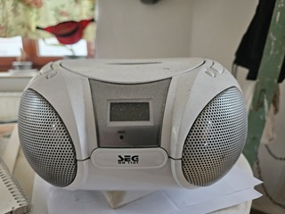
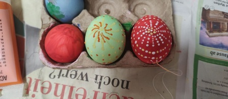
Ich beschloss, dass kein Zusammentreffen heute stattfindet, und brach zu meinem Freund Alexander auf, um mit dem Fahrrad paar dutzend Kilometer zurückµlegen. Nachmittags schickte Nancy mir Fotos. Auf den Fotos ist nicht nur Nancy dargestellt, sondern auch Freya. Nancy hielt Freya auf dem Schoß. Sie erinnerten mir Madonna mit Kind. Ich wurde so tief berührt, dass ich Alexander abrupt verließ und zu ihnen wie verrückt abfuhr.
Deswegen verbringe ich den Abend zu ihrem Hause wie an allen normalen Tagen.Der dritte Tag dieses sinnlosen Urlaubs. Ich konnte das nicht mehr leiden. Gestern hat mich eine meine Bekannte, Frau Ovsienko, auf den Brocken eingeladen. Diese Frau verbindet mit mir die Tatsache, dass ich ihr im Herbst bei einer Visite zum Orthopäden half (als Dolmetscher). Sie hat einen Mann und einen Sohn. Normalerweise reisten wir mit ihrem Auto, aber diesmal wollte sie mit der Monatskarte eine Reise probieren. Ihr Sohn mag Reisen absolut #, was ihren Mann betrifft, verzichtete er auf so lange Marschrichtung. Ich willigte ein, Frau Ovsienko Gesellschaft µ leisten.
Also begann ich plötzlich Nancy von dem Brocken aus Fotos µ schicken. Vielleicht, war es grausam, aber ich war sehr empört: ich und Nancy haben auf diesen Urlaub solche gemeinsamen Hoffnungen gesetzt, und jetzt ist er ohne jegliche Erklärung begraben worden.Nancy schickte mir eine Kurzmitteilung. Ich öffnete sie #. Nach einer Zeit bemerkte ich, dass Nancy das gelöscht hatte.
Während der Fahrt rief Herr Sieger mich an. Er dachte, ich schwänze die Akademie, weil die Leitung der Akademie meinen Urlaub schlecht eingetragen hatte, ich verblieb aus irgendeinem Grund in ihrem Lehrplan, und jetzt machten sie sich auf die Suche.
Während der Pause lud ich Nancy in die Tankstelle ein, die neben ihr steht. Sie ist gern von ihrem Haus aus geflogen, um mit mir eine Tasse ihres Lieblingsgetränks µ trinken.
Die Rache ließ auf sich trotzdem # warten. Als ich eines von den Fahrrädern aus dem Keller bergan schleppte, spürte ich, dass jemand dies Fahrrad zurückzieht. Ich zog meine Bürde kräftiger an und gewann endlich die Oberhand. Das war Freya, sie machte das absichtlich. Besiegte Freya lief zu ihrer Mutter und begann µ klagen, dass ich ihre Hand oder ihren Finger verletzt habe, dass ich ein Aggressor bin, ein Killer, ein Monster oder so etwas.
Nancys Gesicht veränderte sich total. Ich muss sagen, Nancy sieht normalerweise hübsch aus, wenn mir gelegentlich gelingt es, ihr Gefallen zu tun, wird ihr Gesicht noch schöner (ich sagte ihr einst scherzhaft, dass ich an solchen Momenten Orgasmus spüre). Im Gegenteil: wenn sie aus irgendeinem Grund schlechter Laune ist, wird ihr Gesicht unaussprechlich gruselig, sodass ich anfange, einen Horror µ spüren. Zu einem Zeugen genau solches Phänomens war ich geworden, als sie Angst vor mir am 7. - 10. April gehabt hatte. Also heute entstand wieder einer von solchen mystischen Momenten, wie ein Déjà-vu.
Glücklicherweise war das Trauma Freyas nicht tödlich. Einen Nagel hatte ich ihr gebrochen oder Haare ausgerissen, das Allerwichtigste ist, dass die Knochen unbeschädigt geblieben waren. Nach einer kurzen Massage begann Freya sich besser µ fühlen, und da sie ihr Kinderland besuchen sehr wollte, führte dieses Gefecht zu keinerlei weiteren Auswirkungen. Endlich brachen wir Richtung der Bahnhof auf.Nancy teilte mir mit, dass Freya eine Karte hat, mit der sie jeden Tag zur Schule durch die Stadt fährt und die Nancy 15€ pro Monat µ stehen kommt. Nancy drückt ihre Idee aus: "Kann sein, dass diese Karte für die Fahrt nach Osnabrück passt?" Auf der Karte waren verschiedene Verkehrsmittel gemalt, einschließlich Fahrzüge des Nahverkehrs, aber ob sie wirklich außerhalb unserer Stadt tüchtig bleibt oder die Malerei nur Dekoration ist - das war ein Fragezeichen. Ich hatte natürlich keine Ahnung, und die Kasse, wo man diese Frage lösen könnte, ist am Samstag geschlossen. Da wendete sie sich an irgendeine Gruppe Bauarbeiter, die den Bahnhof renovierten. Lächelnd beobachtete ich, wie sie mit ihnen Kontakt erstellen versuchte. Aus diesem ganz gebrochenem Dialog machte sie die Konklusion, dass die Karte passt. Ich mischte mich # ein, aber zog das in Betracht: "Wenn die Karte Freyas wirklich passt, ist nur einziges Ticket nötig, nur für Nancy. Das ist günstiger für mich..."
Aber es bleibt doch, ein Ticket µ kaufen. Nancy entschied sich, sich selbst µ bedienen, stellt sich zum Automaten und versucht es µ begriffen, wie man Tickets kauft. Ihre Bemühungen klappen #. Freya versucht ihrer Mutter µ helfen. Aber zwei Mädchen vermögen #, das deutsche System µ bewältigen. Ich sitze auf der Sitzbank, rauche und grinse, sie beobachtend. Paarmal warf Nancy Blicke auf mich, aber ich blieb sitzen. Da veränderte sich etwas in Freya: sie kam zu mir und wendete sich an mich: "Wenn wir Ihre Hilfe brauchen, dürfen Sie zu uns kommen!" So ein Moment der Menschheit soll belohnt werden! Ich kam zum Automaten an, sagte theatralisch, dass diese beiden Mädchen mich umbringen wollen, und kaufte im Handumdrehen ein Ticket für Nancy. Dabei habe ich mein Geld gesteckt.
Ich guckte in die App "DB-Navigator" und traf die Entscheidung, die Fahrräder am Bahnhof µ hinterlassen. Laut der Prognose der App, sind die Waggons heute ein bisschen voll.Solange wir unseren Zug erwarteten, kritisierte Freya mich energisch, dass wir ohne unsere Fahrräder fuhren. Einmal zeigte sie mir ihr Handy und wies mich auf dieselbe Prognose im "DB-Navigator" hin: "Sehen Sie, die Fahrradmitnahme ist möglich!" Aber dort stand geschrieben "ist begrenzt möglich", Freya ist in der Lage noch #, den Sinn des Kontexts zu kapieren, sie reagiert auf die Schlüsselwort "möglich", aber ignoriert das Wort "begrenzt". Durch mich ist der Gedanke gegangen: sie versteht die deutsche Sprache faktisch #! Wie lernen diese unglücklichen Kinder überhaupt an der Schule? Einfach sitzen sie dort bei Lektionen herum, genau wie wir mit Nancy in der Akademie herumsitzen? Die Absurdität des Lebens in Deutschland bringt mich allmählich um...
Also wir schließen unsere Fahrräder an. Unzufriedene Freya hantiert mit seinem Fahrrad auch. Neben meinem gibt es einen freien Platz, und sie nimmt ihn ein. Ich sage spöttisch: "Freya platziert sein Fahrrad näher zu seinem Freund!" Freya erwidert böse: "Sie sind kein mein Freund, Sie sind mein Feind!" Um diese pathetischen Worte zu unterstreichen, verschiebt sie ihr Fahrrad um paar Plätze weiter.
Ein Kontrolleur kam in den Waggon. Mein Herz krampfte sich zusammen, aber der Kontrolleur prüfte die Karte Freyas und sagte nichts Negatives. Also, innerhalb unseres Bezirks gilt sie einwandfrei.In Osnabrück fuhren mit der Straßenbahn weiter. Nancy war erstaunt, inwiefern ich mich gut geografisch auskenne. Dann erinnerte ich sie an die Exkursion am 7. März, wo wir ausgerechnet diese Richtung befuhren. Ja, der heutige Ausflug macht mich bekannt, wie naiv sie beide sind, sie sind fähig sogar #, Marschrichtungen in Google zu planen! Wie kleine Kinder!
Ich habe im Zug mein Käppi vergessen. Kein so teures Ding, aber ein deutliches Signal, dass etwas in meinem Organismus schon schief gegangen ist. Wann bin ich undiszipliniert geworden? In solche Gedanken vertieft stehe ich auf der Straßenbahnstation, plötzlich reicht Nancy mir mein verlorenes Ding mit Lächeln, sie hat das vergessene Käppi bemerkt und gegriffen. Wäre Freya nicht mit uns, hätte ich Nancy geküsst!Der Park ist wirklich interessant. Ich bin sogar selbst auf eine von den Attraktionen geklettert.
Wir verbrachten dort ca. einen Halbtag. An einem Moment kam Freya zu mir und fragte mich nach dem Verbleib ihrer Mutter (sie war zu diesem Moment irgendwo in einer anderen Abteilung des großen Territoriums). Ich beantwortete die Frage Freyas höflich. Dieser Moment zählt zu wenigen normalen kurzen Gesprächen zwischen uns.
Während Freya spielte, beendeten ich und Nancy den Film auf ihrem Handy. Wir saßen nebeneinander einen und denselben Kopfhörer benutzend, was sehr romantisch wirkte.
Aber nicht alles war so idyllisch. Einen hässlichen Moment merkte ich mir während der Exkursion. Freya kam zu ihrer Mutter und klagte ihr über ein Mädchen, das ihr auf irgendeiner Strecke der Attraktion im Wege zufällig mal stand. Freya bezeichnete dies Mädchen mit einem schlechten Wort, das sich auf die schwarze Haut des Mädchens berief. Mir gefällt #, dass Nancy keinen Vorwurf ihrer Tochter hinsichtlich dieses Wortes gemacht hat. Es steht in Sternen, ob Nancy diese Phrase überhört oder den Sinn # verstanden hat.
Am Abend kehrten wir in Melle zurück, holten die Fahrräder ab und hielten neben meinem Restaurant an. Ich fragte Freya und Nancy, ob sie in meine Wohnung gelangen wollen. Freya zeigte wirklich ein Interesse. Ich lud sie beide ein, gab ihnen die Möglichkeit sich umµschauen und spielte ein bisschen Gitarre für sie. Auf Freya hat die Gitarre keinen Eindruck gemacht, dafür applaudierte Nancy wie ein Kind.
Parallel zeigte ich ihnen mein schwarzes Radiogerät bzw. CD-Player und schenkte es ihnen mit großzügiger Geste. Als wir später ihr Haus erreichten, nahm ich ihre weiße Boombox mit, um µ reparieren.
Jeden Tag propagieren Dozenten an der Akademie, dass wir so energisch wie möglich unsere Lebensläufe an verschiedene Firmen absenden. Ist Deutschland wirklich so verrückt? Ob nur diejenigen das Schwein in Deutschland kriegen, die diese Lotterie spielen? Sind diejenigen, die die Kompetenz im Fach beherrschen, nicht nützlicher?
Ich ignoriere den Appell "30 Bewerbungen an verschiedene Firmen pro Tag", ich pfeife sogar auf diesen Appell, meine Devise ist: "µ sein ist wichtiger als µ scheinen!" Was Nancy betrifft, hört sie dieser Propaganda zu. Nancy schickt ihre Lebensläufe an diverse deutsche Unternehmen, die sich mit den Hubschraubern beschäftigen ("Messerschmitt", "Komet", "Schwalbe" usw.). Ich lache sie jedes Mal aus: "Glaubst du, dass du dort deine Hubschrauber bauen wirst? Dein Niveau in der deutschen Sprache ist faktisch null! Ich spreche schlecht und ich erkenne das, du sprichst noch schlechter als ich! Welche Hubschrauber?"Ich höre Nancy zu, aber vor meinen Augen stehen die drei unglücklichen Opfer auf:
Plötzlich unterbrach Nancy ihre Rede und fragte mich: "Warum immer, wenn ich Ihnen etwas erzähle, drehen Sie ihr Gesicht weg von mir?"
Wir sind aus dem Büro des Chirurgen sehr beeindruckt rausgegangen. Der Chirurg kündigte ein schreckliches Urteil an: Nancy braucht eine Operation. Die Krankheit bezeichnete er als "Arthrose". Nancy ist sehr traurig und wiederholt, dass sie Angst hat.
Wir saßen im Park und ich streichelte sie. Wir bestellten online einen Termin in Osnabrück für die OP. Das Frühjahr hatte den Park mit dichtem Grünen gesegnet. Ich nutzte die Einsamkeit dieser Bank inmitten des dichten Laubs und machte ihr die Massage gerade auf der Sitzbank. Paarmal gingen an uns zufällige Leute vorbei, jedes Mal erschraken die Passanten, ob da kein Sex in vollem Gange ist. Ich beruhigte die Betroffenen: "Alles in Ordnung, eine kleine Massage."
Nachdem sie etwas zu sich kam, bat sie mich um Hilfe mit Transportieren ihrer Sachen. Ihre Mama kommt in einigen Tagen aus der Ukraine und bringt einen großen Haufen von Nancys Heften von den Zeiten der Uni. Freilich versicherte ich sie, dass ich ihr gerne zur Verfügung stehe.Da fielen mir Erinnerungen an Frau Ovsienko ein. Ich sagte Nancy: "Sie brauchen keine OP. Dieses Problem liegt nur an Ihrer erhöhten Nervosität." Ich schlug Nancy vor, sich auf mich µ verlassen: "Wir bestreiten das Urteil des Chirurgen! Ich habe eine Idee!" Ich sagte ihr, dass dieselben Zehen kann nicht nur der Chirurg untersuchen, sondern auch der Orthopäde. Wir fuhren zu ihrem Familienarzt hinter dem Kaufland und machten dort noch einen Termin, beim Orthopäden. Der Termin ergab sich nicht so entfernt, ca. in einem Monat, am 27. Mai.
Heute ist ein großes Fest, und den ganzen Tag verbrach ich am See mit alten Bekannten aus dem Asyl: mit Frau Ovsienko und ihrer Familie. Ich fragte Frau Ovsienko, wie sie mit dieser Krankheit "Arthrose" zurechtkam. Frau Ovsienko antwortete mir, dass sie spezielle Schuhe trug, um ihre Zehen zu korrigieren.
Ich weiß schon, dass Freya soziale Netzwerke Nancys total kontrolliert. Einmal gestand Nancy mir ein, dass Freya in dem Handy Nancys eine SMS von mir gelesen hatte und hatte ihre Mutter nachgefragt, was die Wörter in dieser SMS bedeuten. Aber die SMS enthielt einen Text, der für die Kinder nicht ganz geeignet ist, dort wurden meine Fantasien enthüllt, was ich mit Mutter Freyas so gesagt im Bett üben will. Nancy geriet auf solche Weise in eine unbequeme Situation. Dieses Beispiel hört sich natürlich anekdotisch an, aber ich soll zugeben: zu oft verwechseln sie ihre Rollen: Freya tritt wie Mutter auf, und Nancy - wie Tochter...
Ich begann ihr hastig mitµteilen, dass diese Frau Ovsienko älter als ich sei, dass sie verheiratet sei, dass sie einen 18-jährigen Sohn habe usw. Die Rechtfertigung, die ich damals im Café mir sparen wollte, kam jetzt zwei mal so groß, da ich jetzt wie eine erwischte Person in Augen Nancys aussehe. Jetzt muss ich nicht nur das Alter Frau Ovsienko erwähnen, sondern auch erklären, warum ich das verschwiegen habe. Ich sage ihr verlegen, dass ich damals ihre Nerven schonen wollen habe. Das klingt nicht so überredend.Zu allem Übel wies Nancy mich darauf hin, dass sie mich niemals belogen habe. Im Gegenzug erinnerte ich sie an das einige ÜbungenEnde der Exkursion in "Globus" an 20. März, als sie mir gesagt hatte, dass sie sofort nach Hause gefahren sei. Ihr Gesicht verriet eine kurze Verlegenheit, dann warf sie mir solche Phrase: "Damals waren unsere Beziehungen noch # gestartet worden!"
Nachmittags schlug ich Nancy vor, zusammenµtreffen (normalerweise hatte sie mich immer eingeladen). Um meine Loyalität µ demonstrieren, lud ich sie in die Tankstelle ein, die neben ihrem Haus liegt. Sie ist angekommen, aber auf ihrem Gesicht liegt eine Müde und Unzufriedenheit. Meine Absicht ist, Nancy ein bisschen µ verwöhnen. Aber auf den Kaffee verzichtete sie stolz, was meine Vermutungen bestätigte, dass sie böse auf mich ist. Dann lud ich sie ein, spazieren µ gehen, ich beschloss, dass sie nach dem Spaziergang weicher wird. Den ganzen Weg betrachtete und roch sie die Blumen.
| Nancy | "Ich schlage Ihnen vor, dass wir miteinander gute Freunde sind, ohne jegliche Liebe." |
| ich | "Meiner Meinung nach ist es unrealistisch. Wie stellen Sie sich vor, dass man den anderen Menschen, den Menschen, den man einst geküsst hat, einfach als einen Kameraden ansieht?" |
| Nancy | "Ja, das ist nicht leicht." |
| ich | "Ich hoffe, dass wir solche Masken nie anziehen werden. Unsere Beziehungen sind schön und rein. Ich schlage Ihnen vor, dass wir weitermachen." |
| Nancy | Sie wandte ihr schönes Antlitz von der Blume und fragt etwas spöttisch mit Lächeln: "Was weiter? Der Sex?" |
Da ging ein Flüchtling aus der russischsprachigen Community an uns vorbei. Sein Gesicht war mir bekannt, aber sein Name #, einer von den zahlreichen Migranten. Er erblickte uns zusammen, und seinem Gesicht an war es zu sehen, dass er unser Thema abgehört hat (unabsichtlich). Er sagte nichts und verschwand schnell, aber seine Gedanken waren leicht abµlesen: "Was für zwei Idioten!"
Meine heutige Aufmerksamkeit zu ihr brachte Früchte, sie begann sich wieder locker µ benehmen, also brach sie ihre Beziehung zu mir #Ich stellte Nancy das erste von den zwei Diplomarbeiten fertig ("Die künstliche Intelligenz").
Heute führte Nancy mich in ein Büro an, wo der Netzbetreiber Nancys residiert ("Sauerstoff"). Dort fing Nancy an, der Frau etwas lange und emotionell µ erklären. Insofern ich diesen "Dialog" verstanden habe, war Nancy vor kurzem in eine Falle geraten. Diese Falle bestand darin, dass Nancy einen unnötigen Vertrag unterschrieben hat. Ein Vertreter irgendeines anderen Netzbetreibers schlug ihr sein Angebot vor, lockte naive Nancy, und sie führte aus, was von ihr gewollt wurde. Jetzt will sie diesen Fehler µ korrigieren versuchen.
Sie kennt niemanden, an wen sie sich mit dieser Angelegenheit wenden kann, deshalb richtet sie sich zu ihrem "traditionellen" Netzbetreiber. Zum Glück erklärt die Frau im Büro sich bereit, Nancy µ helfen, den Vertrag losµwerden.
Während dieser Audienz erfuhr ich, dass es in Deutschland 14 Tage für das "Nachdenken" gibt, das steht sogar im Grundgesetz geschrieben:
| "Jeder unterschriebene Vertrag darf unterbrochen werden, solange 14 Tage noch # vergangen sind." |
Die Entscheidung, die diese Frau getroffen hat, ist diese Frist µ nutzen, und das ist ihr ganz gelungen. Die Frau hat diverse Leute angerufen, jemanden angeschrien, jemandem gedroht, jemanden gebeten, und voilà: Nancy ist den Vertrag losgeworden.
Wir haben das Büro verlassen, alles OK, da fragt Nancy mich plötzlich, warum ich ihr beim Gespräch # geholfen habe. Ich antworte, dass ich keine Ahnung damals gehabt habe, was für ein Desaster passiert ist. Das ist ehrlich: Nancy hat mich wirklich ohne jegliche Warnung in das Büro hineingezogen.Wir machten uns auf den Fahrrad-Weg nach ihrem Haus: sie fuhr vorne, ich folgte ihr. Da brach Nancys eine sonderbare Aggressivität vom Zaun: wieder tauchte dasselbe Thema, das am 28. April zum Ausdruck kam, auf:
Diese meine Tat war nur als ein Scherz gedacht, meine Absicht war nur, sie ein bisschen µ necken. Ich rauchte auf meinem Hof ihren Anruf erwartend, da in 100 Meter eine Ampel steht, wo sie sowieso von ihrem Fahrrad absteigen und meine Abwesenheit bemerken wird. Der Anruf erklang tatsächlich. Das Mädchen beschuldigte mich, schrie an, fast weinte. Ich wartete geduldig darauf, dass sie mich einlädt, die Fahrt weiterzumachen, aber solche Worte haben # geklungen, sie drückte ihre Emotionen aus und unterbrach das Telefonat nervös.
Daraufhin war ich mir bewusst, dass ich sie anscheinend für immer und ewig verlor...Am Abend tauchten Nancy und Freya plötzlich vor meiner Haustür auf. Ich stieg runter und wurde überrascht: Sie hatten einen großen Karton mir geschleppt, dort lag eine Kaffeemaschine.
Das bedeutete mein Honorar für meine Teilnahme an der Diplomarbeit.Dabei zeigte Nancy, wie sie dressieren kann: Sie befahl ihrer Tochter "Danke" µ sagen, und Freya führte diesen Trick gehorsam aus. Ich vollziehe den Hintergrund gut nach, er ist durchsichtig: Nancy hat ein Abkommen mit ihrer Familie abgeschlossen: ich soll über den Bord geworfen werden. Jetzt sei diese Sache erledigt, und um aristokratisch ausµsehen, geben sie mir einen Ausgleich. Das sieht wie ein Austausch der Kriegsgefangenen unter zwei Kriegsparteien.
Aber da mein Fahrrad keinen Gepäckträger hat, sollte ich ohne Fahrrad, zu Fuß, dorthin laufen. Die Distanz ist ca. zwei Kilometer, in einer Halbstunde ging ich sie durch, gab die Kaffeemaschine im Kaufland erfolgreich ab und bekam 40€.
Auf dem Hof der Werkstatt standen noch paar Junker neben mir. Aber um 8:15 hat uns niemand die Tür geöffnet. Wir rauchten ca. eine halbe Stunde. Weil Nancy # erschien, kam ich allmählich der Vermutung, dass der Lehrplan verändert wurde (und Nancy sich dabei aus irgendeinem Grund mehr informiert, als wir, ergab). Der Unterricht wurde wahrscheinlich ins Hauptquartier verlagert, aber wir blieben aus irgendeinem Grund uninformiert. Ich hatte die Nummer der Akademie bei Hand und ich rief die Verwaltung an. Mir antwortete Herr Sieger. Er bestätigte meine Vermutung, tatsächlich, sollten wir uns Richtung das Hauptquartier bewegen. Wir begannen aufµbrechen. Matthias hatte ein Fahrrad, aber er begleite mich geduldig bis zum Restaurant zu Fuß, wo ich mein Fahrrad endlich abholte. Wir brachen in eine Lektion von Frau Gorbatschowa ein. Nancy saß und spielte eine fleißige Schülerin, als ob sie mit mir nichts µ tun hat. Wir erklärten Frau Gorbatschowa unsere Situation, und ich lobte Matthias theatralisch vor dem ganzen Publikum. Während der Lektion gratulierte Gorbatschowa ukrainischen Flüchtlingen zum russischen Fest (heute jährt sich der Sieg über Deutschland aus dem Jahr 1945), was ein bisschen komisch wirkte.Nancy hielt sich von mir weit, da die schwarze Katze zwischen uns wieder gelaufen ist, aber ich erfüllte mein Versprechen, ich arbeitete ganzen Tag an dem zweiten von den zwei Diplomarbeiten ("Die Massage"). Ich schickte das fertige Produkt ihr per E-Mail, und sie schickte mir eine SMS: "Danke."
Nancy besprach mit Frau Gorbatschowa etwas nach dem Ende der Lektion, ihr Gespräch zog sich in die Länge. Ich stellte auf den Tisch Nancys eine leere Dose, die Dose, womit sie mir vor einigen Tagen ein Stück ihres Kuchens gab, und verließ das Klassenzimmer. Heute begleite ich Nancy nach Hause #, das ereignet sich zum ersten Mal nach dem 9. April.
Heute ist der Tag der Mutter. Ich sollte meiner Nancy dazu gratulieren, aber ich weiß #, wie ich das so gestalten kann, dass sie keinen Hohn vermutet. Ihr psychischer Zustand ist ja unvorhersehbar.
Ich rief Nancy an und frage, ob sie die Dose bemerkt hat, die ich ihr zurückgegeben habe. Sie korrigiert unzufrieden, dass ich die Dose in die Hände # gegeben, sondern auf den Tisch gelegt habe. Da gebe ich ihr Recht. Zwar ist sie böse, aber sie lobt mich dafür, dass ich das Gewissen besitze, das mich endlich zwang, sie anµrufen: "Hätten Sie mich # angerufen, hätte ich meinen letzten Respekt gegenüber Ihnen verloren." Sie erteilte mir wieder den Befehl, ihr ein Bukett Blumen µ kaufen.
Ich besuchte den Laden und kaufte ein Bukett, aber da kam eine SMS, wo mir mitgeteilt wurde, dass sie keine Blumen mehr brauche. Das ist ihre Manier, das auffälligste Merkmal ihres Charakters: die erhöhte Nervosität und unerwartete Wenden.
Trotz ihres schweren Charakters fand noch ein Telefonat zwischen uns statt, und es gelang mir, Nancy µ überreden, die Blumen von mir anµnehmen. Also das war mein zweites Bukett.Sie zeigte mir ihr Zimmer, in diesem Zimmer arbeiten wir an den Diplomarbeiten. Auf ihrem Bett lag eine Menge von verschiedenen Kuscheltieren, und ich dachte: "Was für ein kleines Kind bleibt dieses 175 cm. hoch Mädchen immer noch!" Wir hörten während unserer Arbeit dem CD-Player zu, den ich am 26. April geschenkt hatte. Ich soll die Tatsache erwähnen, dass Nancy Tante Erika nicht nur das Möbel µ verdanken hat. Neben dem Möbel und dem Fahrrad kommt eine Menge von diversen CDs dazu, ich lieh diese CDs oft bei ihr aus, einige CDs stammen von interessanten Punk-Gruppen. Aber ich soll sagen, in ihrem Zimmer gab es kein einziges Buch!
Heute lud Nancy ihre eigene Friseurin ein. Nancy hat mir vor einigen Tagen erzählt, dass sie eine Bekannte haben, die Friseurin von Beruf ist. Diese Bekannte bedient sie oft gerade bei ihnen zu Hause. Nancy hat mir vorgeschlagen, diese Möglichkeit µ nutzen. Heute wiederholte sie die Einladung, erklärte sich bereit sogar, für mich µ zahlen. Ich verzichtete auf ihren Vorschlag anlässlich des schon vereinbarten Termins mit meiner traditionellen Friseurin. Mein Kredo ist mein Wort immer µ halten und mich als ein Mann der Ehre ausµzeichnen.
Die Frau verkürzte Freyas Haare, aber diese Veranstaltung ging etwas schief: das Ergebnis gefiel Freya #, und Freya begann wie ein kleines Kind µ weinen. Ich hatte bisher # gewusst, dass Freya imstande ist, µ weinen. Interessant.Aber das hat mir sogar mehr gefallen. Das ist die beste Variante, uns im Vorhinein keine Arbeit sondern eine Weiterbildung µ geben. Sowieso sind wir unfähig, an jeglicher normalen Arbeit engagiert µ werden. Zuerst sollen wir unsere Sprache zustande bringen. Das Niveau der Sprache von Nancy ist schrecklich, sie verlässt sich ganz auf die Gestik und Mimik, keine Spur von Grammatik weist sie auf (dabei glaubt sie, dass sie spricht).
| Nancy | "Ich bin beim Onkel Syd, wir trinken Tee." |
| Freya | "Geht schneller, zu Hause werdet ihr beide Tee trinken!" |
| Nancy | "Wir kommen sofort." |
| Freya | "Mama, darf ich morgen in die Schule in Shorts gehen?" |
| Nancy | "Erlauben das die Lehrer?" |
| Freya | "Ja." |
| Nancy | "Wir werden das später besprechen." |
Heute stellt Nancy eine sehr sonderbare Frage an mich: "Soll ich Ihnen ihren Dreizack zurückgeben?" Ich antwortete selbstverständlich: "Nein." Aber ich überlege jetzt mir: "Wieso fragt sie das?" Hat sie etwas vor?
Neben ihrem Haus schlug Nancy vor, mein Radio zurückµgeben. Ich verzichtete, dieses Radio war von mir doch als Geschenk konzipiert. Aber ich empfinde das Gefühl, dass sie sich wieder unter dem Druck befindet, mich losµwerden.
Nancy, Freya und ich fahren in das Büro "Sauerstoff", das wir am 8. Mai besucht haben, wieder. Dort finden nicht nur Konsultationen und Vertrage statt, sondern auch Verkauf Accessoires. Nancy entschied sich auf ein Geschenk für ihre Tochter: ein Panzerglas für das Handy von Freya. Nach dem Kauf des Glases fanden wir unseren Weg in das Restaurant, Nancy wollte die Abgabe der Diplomarbeiten tüchtig feiern.Ich beschloss, dass es die höchste Zeit ist, das Geld einµsetzen, das ich der Kaffeemaschine µ verdanken habe. Ich bezahlte für die ganze "Familie" mit großzügiger Geste. Nancy versuchte mich µ stoppen, aber ich war ihr voraus.
Freya benahm sich während ganzer Veranstaltung normal. Sie weigerte sich #, auf gemeinsamen Fotos teilzunehmen. Ich begann zu glauben sogar, dass der Krieg vorbei sei.
Nancy besteht wieder darauf, unsere zwei Boomboxen rückgängig auszutauschen.
Sie sagt, dass Freya das Interface von meiner Boombox # versteht und sich nach ihrer
alten Boombox sehnt.
Ich habe für ihre Besorgnis ein offenes Ohr,
aber ich möchte zuerst die weiße Boombox in Ordnung bringen.
Mir gelang es schon, die Funktion des CD-Players wiederherzustellen,
ich habe eine passende Antenne unter Ersatzteilen gefunden.
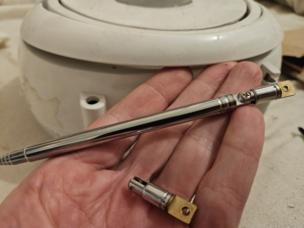
Weil Nancy sehr wünschte, den See sich µ schauen, fuhr ich die Familie nicht zu unserem Bahnhof, sondern hinter die Stadt. Wir schlugen den Weg ein, den wir am 3. April gefahren waren. Die Fortsetzung dieses Wegs führt an den See, in der Nähe vom See liegt die übernächste Bahnstation. Also erst an der übernächsten Bahnstation plante ich in den Zug einµsteigen, aufgrund dessen müssen wir ca. 10 km radeln.
Das ist die längste Strecke, die Freya mit dem Fahrrad zurücklegte. Am See bin ich ein bisschen geschwommen. Nancy sagte: "Ich will auch, aber ich habe keinen Bikini." Ich sagte ihr: "Gehen Sie hinter den Busch, dort können Sie nackt schwimmen, solange Sie wollen!" Sie erwiderte: "Ich will allein # schwimmen! Wollen Sie, dass ich ertrinke?" Vom See aus fuhren wir zum Bahnsteig. Ich bemerkte, dass Freya jemandem etwas von ihrem Handy aus schickt (per Telegram) und das Handy dabei auf mich richtet. Ihrer Großmutter zeigt sie vielleicht mich... Das ist nicht so moralisch, eine Kamera auf einen Menschen, ohne seine Erlaubnis µ richten, aber mir war egal, ich schickte ihrer Kamera einen Luftkuss. Danach fuhren wir nach Osnabrück.
An der Station "Osnabrück Markt" ereignete sich noch ein schlechtes Ereignis: Freya schuf das #, mit dem Fahrrad die Rolltreppe hochµsteigen. Das Fahrrad ist zwar schwer und neigt deswegen zurückµrollen, erhebt man dies Problem leicht damit, dass man die Handbremsen betätigt. Aber weder Freya noch Nancy kannte diesen Trick #. Ich war schon irgendwo vorne, und die Mädchen geraten in eine unangenehme Situation. Nancy versuchte ihr irgendwie µ helfen, endlich erreichten sie beide den Gipfel, und Nancy warf mir vor, dass ich sie im Stich gelassen habe. Möglicherweise, sollte ich damals diese Situation vorsehen, aber wir sind unfähig, die Vergangenheit µ verändern. Ich glaube #, dass Freya dies Desaster speziell inszeniert hat, deswegen soll ich zugeben, dass mein guter Ruf in dieser Episode etwas Schaden genommen hat. Dieser Präzedenzfalls ist darauf zurückµführen, dass ich mich immer fern von ihnen beiden halte, wenn Nancy von Freya begleitet wird.Wir spazieren lange durch den Laden "TK MAXX", aber ohne jegliches Ereignis. Ich langweilte mich, dazu kam die Tatsache, dass die zweistündige Frist der Tickets sich dem Ende näherte. Nancy bemerkte meine schlechte Laune und schlug mir vor, dass ich sie selbst nach Melle zurückkehre, und sie selbst, ohne mich, zurechtkommen. Dabei steckte sie mir 20€ in die Tasche. Ich steckte ihr diesen Geldschein in das Dekolletee zurück (was natürlich ein bisschen grob aussah) und blieb ihnen heute treu bis zum Ende des Einkaufs. Ich zeigte ihnen einen anderen Laden, "H&M". Dort wurden passende Hosen endlich gefunden. Ich fand einen guten Hoody "Nirvana" für 40€, der mir gutstehen würde. Nancy erklärte sich bereit, ihn für mich µ kaufen. Offensichtlich strebt Nancy immer noch danach, mir eine Portion Geld ausµgeben, damit Gewissensbisse sie nicht so quälen, wenn die Zeit eines Tages kommt, mich über den Bord ihres Boots µ werfen. Aber ich bin keine Prostituierte! Ich lehne ihr Angebot ab.
Nancy kaufte für mich und Freya Sushi. Zum ersten Mal in meinem Leben esse ich dieses Gericht.
Da die 2 Stunden schon längst vorbei sind, kaufte ich noch einmal zwei zweistündige Tickets im Automaten. Wir kehrten siegreich nach Melle zurück.
Nancy zeigt mir in der Küche ein kleines Gerät, eine Uhr, die auch als Radio funktionieren kann. Dieses Gerät hat keine steife Antenne, sondern einen "Schwanz", d.h. ein Draht, der als Antenne dient. (so wie der Kopfhörer bei Handys die Rolle der Antenne spielt). Nancy will mir auf solche Weise zeigen, dass sie ohne mein schwarzes Radio leicht auskommen können. Und ich begreife: sie liebt mich #. Offenbar hat sie eine Frist von jemandem bekommen, innerhalb deren sie mich wegwerden soll. Momentan sind die Erinnerungen von meiner Teilnahme an den Diplomarbeiten noch frisch, aber heimlich nimmt das Programm "Ihn aus dem Auge, aus dem Sinn" schon seinen Lauf. Ich soll, wenn auch allmählich, beseitigt werden. Die Zeitbombe ist schon geschärft...
Herr Sieger warf seinen Blick auf mein Problem mit dem Aufenthaltstitel und beriet das Haus µ besuchen, wo man Meldebescheinigungen bekommt. Nancy begleitete mich, aber die Beamtin sagte, dass sie nur mit den Bürgern der BRD interagieren, Migranten gehören zum Migrationsamt. Nancy teilte mir, meine Sorgen sehend, mit, dass sie Tante Erika mein Problem weitergeben kann. Nancy versicherte, dass Tante Erika im Rathaus arbeitet und Nancys Familie unzählige Male gerettet habe. Aber meine Prinzipien erlauben mir #, solche prostituierte Vorschläge anµnehmen...
An einem Moment habe ich ihn um seine Rufnummer geboten. Ich möchte mit ihm im Chatten während der Freizeit meine Sprache µ trainieren (in WhatsApp usw.). Aber er gab seine Nummer #. Da wurde mir die Natur dieser Person klar.
Heute fand der Test in "Messerschmitt" statt. Er wurde online organisiert, und ich benutzte einen Computer im Büro der Werkstatt. Herr Hartmann half mir hiermit massiv.
Obwohl "Messerschmitt" das Ergebnis am nächsten Tag versprach, wurde es mir schon heute mitgeteilt: den Test habe ich siegreich bestanden.Nach dem Unterricht bin ich wieder bei Nancy&Freya zu Gast. Wie üblich, gehe ich durch das Vestibül. Freya begrüßt mich schweigend mit den vor der Brust verschränkten Armen, wie üblich, Nancy begrüßt mich relativ menschlich.
Ich begleitete die Mädchen schweigsam weiter bis zum Haus, dort holte ich mein Fahrrad ab und verließ sie. Bis auf den letzten Moment wurde mir nichts erklärt.
Das ist bestimmt die letzte schwarze Katze zwischen uns, die Masken sind schon abgenommen, und Nancy wird ab jetzt zusammen mit Freya gegen mich arbeiten. Seit diesem Moment bin ich ein Fremder, ich bin nützlich schon # und bin hiermit aus ihrer Familie ausgelöscht.
Ich saß in einer Lektion, Nancy kam, wie gewöhnlich, mit einer Verspätung in die Akademie. Später bemerkte ich, dass sie im Gips ist, und begriff endlich den Hintergrund der gestrigen Szene: dieses kleine Mädchen hat den Ball unprofessionell gefangen, und ihr Händchen wurde beschädigt.
Also nach paar Stunden des Unterrichts nahm ich ihren Gips war. Aber sie kam dennoch mit dem Fahrrad. Das heißt, dass sie keinen Knochenbruch, sondern nur eine Prellung gekriegt hat. Dem Himmel sei Dank. Hätte sie einen Bruch, könnte sie kein Fahrrad fahren. Ca. vor einem Jahr, am 8. März, habe ich wegen eines Saltos meine linke Hand gebrochen. Das war ein wirklich tüchtiges Trauma. Seinetwegen konnte ich einen Monat lang kein Fahrrad fahren: die ständige Vibration schloss das aus, seit den ersten Metern der Fahrt entwickelte sich ein Schmerz, der unerträglich war, obwohl mein Fahrrad ein Bergfahrrad ist. Was ihr Fahrrad angeht, hat ihr Fahrrad keine Federung.Angesichts des Traumas konnte ich Nancy nach dem Unterricht # im Stich lassen. Wir fuhren aus der Akademie wie üblich zusammen aus. Ich fragte #, was gestern passierte, der Gips genügte. Sie ihrerseits lehnte meine Begleitung # ab. Als wir an meinem Restaurant vorbeifuhren, durfte ich schon abhauen, weil die schwierigste Strecke schon hinten war, aber wiederholte meine Tat, die ich am 8. Mai begangen hatte, #, ich setzte im Gegenteil meine Begleitung fort. An der Ampel entdeckte sie, dass ich # verschwand und immer noch ihr treu bleibe. Ich bemerkte, dass sie lächelt.
Nachdem ich das Fahrrad platziert hatte, lud sie mich nach Hause, es gab noch etwas, und zwar: meine Kleidung aus ihrer Waschmaschine abµholen.
Für Freya war mein Ankommen eine Überraschung: Nancy hatte ihrer Familie anscheinend schon versichert, dass ich schon über den Bord geworfen worden sei und niemals mehr erscheine. Freya brach vom Zaun etwas, was man als einen großen internationalen Zank klassifizieren kann. Sie zeigte sich bereit sogar, mich µ schlagen. Freya griff nach meinem Buch, das ich ihrer Mutter geschenkt hatte, damit sie Deutsch fleißiger lerne, wappnete sich mit diesem Gegenstand und ging auf mich los. Diese Szene sah aus, wie ein Theater. Endlich fing ich an, ein Mitleid seitens Nancys hervorµrufen, und Nancy sagte ihrer Tochter, dass falls sie mich hier, in der Wohnung, totschlagen, werden sie beide dann mit dem Problem auseinandergesetzt, wie sie meine Leiche loswerden und wie sie mit Polizei klarkommen. Auf naive Freya wirkt das Wort "Polizei" wie ein Symbol des Bösen. Anscheinend, hatte man sie oft mit diesem Wort erzogen. Freya gehorchte und unterbrach das, mich µ attackieren. Stattdessen begann sie, mir das Buch wider meinen Willen zurückµgeben. Ich kenne so ein Verhalten der Leute, wenn sie sich scheiden lassen. Das heißt: "Aus den Augen, aus dem Sinn!" Die Leute, die abergläubig sind, glauben stark daran, dass man absolut alle Geschenke, die man von ihrem geschiedenen Partner während der Ehe eingesammelt hat, beseitigen soll. Sonst wird der geschiedene Partner sie in Albträumen besuchen. Ich begann, mich dagegen µ wehren und meinen Rucksack vor ihrer Invasion µ beschützen. Das machte mir aber Spaß, dass der Kragen Freya platzt. Jedenfalls sieht das besser aus als ihre gewöhnliche Maske, wodurch sie früher ihre totale Verachtung gegenüber mir zeigte. Nancy wählte die Seite ihrer Tochter aus: stand mit Freya Schulter an Schulter und half mit ihrem einzigen gesunden Arm meinen Widerstand µ überwinden. Endlich wurde das Buch in meinen Rucksack hineingelegt. Ich erinnerte mich an die Worte von Frau Hammer am 15. Mai: "Nancy neigt # zum Lernen."
Sie schickten mich endlich nach Hause mitsamt meiner Kleidung und mitsamt meinem Buch und atmeten aus. Jetzt sehen sie wie zwei Sieger aus. Ich sehe im Gegenteil so aus, als ob ich ein Fremder bin, der eine Invasion auf ein Territorium geübt hatte, wo er unerwünscht ist.Aber ich bin froh, dass ich heute die Gelegenheit hatte, mit ihnen ein bisschen µ kommunizieren, wenn auch kämpfend. Diese zwei Mädchen sind schon fast zu meinen Verwandten geworden. Ich weiß #, wie ich ohne sie in der Zukunft leben werde, wenn eines Tages die Endlösung bezüglich meiner Person endlich in Kraft getreten sein wird.
Auf glücklicher Weise hat Syd den guten Rat bekommen, in die Akademie einµtreten. Syd folgte der Empfehlung gehorsam und wurde immatrikuliert. Jetzt bringen ihm die besseren Dozenten Niedersachsens bei, wie man den Lebenslauf verfasst, wie man sich beim Vorstellungsgespräch benimmt, wie man Arbeit suchen soll und wie man die europäische Toleranz in sich trainiert. Syd verbringt 7 Stunden pro Tag in der Akademie. Es ist sehr schwierig, aber Syd gibt nicht auf.
Und so weiter und so fort. Frau Gorbatschowa hörte meinem Essay und meinem sporadischen Gelächter zu, aber sie verlor kein Wort. Mir ist, sie hat meine Gefühle verstanden.„Du bist zeitlebens für das verantwortlich, was du dir vertraut gemacht hast.“ - so Antoine de Saint-Exupéry. Führe ich nach dem Unterricht allein, ohne Nancy, von der Akademie aus ab - sähe das so aus, als ob ich dieses kleine Mädchen so gesagt, "im Regen stehen lasse". Da mein Gewissen mir so eine Untat # erlaubt, begleite ich sie bis zu ihrem Haus, wie in den guten alten Zeiten.
"Etwas stimmt in diesen Beziehungen #." - sagt sie.
Ich nicke. Das ist so offensichtlich, dass man das µ sagen kaum braucht.
Ich selbst habe denselben Gedanken ja schon tausendmal in diesem Tagebuch ausgedrückt.
Aber
für jedes Ereignis gibt es eine Ursache. Und die Ursache hat einen Namen, zwei Arme, zwei Beine usw.
Und das ist für mich ein Rätsel: warum weigert Nancy sich immer noch, diese Ursache µ nennen?
"Haben Sie einen anderen Bräutigam gefunden?" - frage ich.
Nein."
Dann sagt sie etwas, was etwas ekelhaft klang:
"Ich brauchte Sie nur um mit Ihrer Hilfe mit diesen Diplomarbeiten Freyas zurecht µ kommen!"
Erlaubst du dir, dem Menschen, den du geküsst hast, solche Worte µ sagen!
Diese Worte sind so komisch, dass man sie auslachen soll.
Sie stellen nur einen einstudierten Text und nichts mehr dar.
Es ist offensichtlich, dass jemand ihr befahl, diesen Unsinn mir µ sagen, wohingegen das mit
ihrer Seele nichts µ tun hat.
"Ich habe meine Schuldigkeit noch # getan,
ich soll bekanntlich Sie zum Orthopäden noch begleiten." - sage ich fest und schlage
vor, dieses Gespräch abµrunden.
Bis zum Termin bleiben lediglich 4 Tage übrig.
Dann machten wir: Nancy, ich und Freya uns auf einen Spaziergang.
Wir gaben den Ball in den Laden zurück ab. Freya bat ihre Mutter, den Ball in der Familie µ lassen, aber Nancy lehnte diesen Protest ab. Für einen Bruchteil der Sekunde stellte ich mir vor, dass Nancy eines Tages mich genauso aus der Familie beseitigt.Plötzlich kam die Neuigkeit, dass eine Freundin von Freya mit ihr zusammentreffen will. Unser Plan veränderte sich. Wir beschlossen, Freya mit ihrer Freundin spielen µ lassen und ohne Freya den Ausflug zu zweit durchµführen. Dafür warten wir auf die Freundin neben dem Kaufland. Nancy ging kurz in das Kaufland die Toilette dort benutzen und verließ mich mit Freya auf dem Parkplatz. Ohne Verzögerung brach ein kurzer Konflikt mit Freya aus. Ich stand zunächst auf meinem Fleck, aber allmählich begann ich mich davon µ entfernen, um mir ein interessantes Auto näher anµschauen, das in paar Metern geparkt war. Knapp legte ich einen Meter zurück, da griff Freya mich plötzlich hart an, sie verlangte von mir die Antwort, wohin ich mich mit dem Rucksack Nancys bewege. Sie demonstrierte aggressiv ihr Vorhaben, mich µ blockieren. Das versetzte mich in Erstaunen. So ein unbegründeter Verdacht! Als ob ich dabei bin, mit Sachen von ihrer Familie µ verschwinden!
Die Freundin Freyas kam endlich an, und das teilte uns in zwei Teams auf: Freya mit der Freundin und ich mit Nancy. Nancy führte mich in den Wald hinter dem Kaufland, wir verbrachten dort ca. eine Stunde, und sie zeigte mir ein interessantes Denkmal in paar Hundert Metern. Dieses Denkmal ist nicht auffällig, vielleicht kennt nicht jeder Bewohner unserer Stadt es.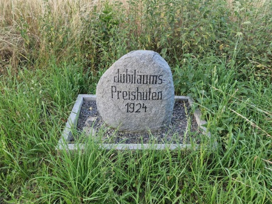
Wir gingen ganzen Wald durch. Seit langem wollte ich eine Statue beabsichtigen, die weit hinter dem Gestüt steht und ein Pferd darstellt. Die Statue fanden wir erfolgreich. Der Weg war paar Kilometer, und auf dem Weg betrachtete Nancy Blumen ab und zu, sie waren zahlreich in diesem ländlichen Gebiet. Ganzen Weg küsste ich sie #. Ich verstand, dass es nur ein Zufall ist, dass Freya abwesend ist. Dieser Spaziergang ist, so gesagt, eine "Gnade" von Freya. Würde ich Nancy küssen, könnte das so aussehen, dass ich die Situation nutze. Freya übergab ihre Mutter mir, und ich kann dieses Vertrauen # zugunsten meiner Person nutzen - so dachte ich.
Unterwegs fanden wir einen interessanten Spielplatz für Kinder.Während der Promenade sagte ich Nancy: "Ich kann deine Familie # verstehen." Sie antwortete: "Ich selbst kann sie # verstehen." Mir kam die Idee, dass sie Freya # erzogen hat, die Großmutter kümmerte sich um Freya höchstwahrscheinlich. Nancy ist selbst wie ein Kind...
Wir kehren in die Stadt zurück, und da steht ein Pfeiler uns im Wege. Wir gehen separat, ich halte ihre Hand #, und dieser Pfeiler droht zwischen uns durchµkommen. Nancy drehte akut uns um und befahl, dass wir unsere Richtung so korrigieren, dass wir an einer und derselben Seite an dem Pfeiler vorbeigehen. Ja, Nancy ist sehr abergläubig!
Am Rande der Stadt erlaubte ich mir Nancy einen Tipp µ geben, und zwar: Ich wies die junge Mutter darauf hin, dass es ein bisschen gefährlich ist, das Mädchen ohne Obhut µ lassen, besonders in diesem Deutschland voller Migranten. Sie nahm das ernst, griff nach ihrem Handy, und seit diesem Moment durch den ganzen Rest des Rückwegs rief sie Freya mehrfach mit Nervosität an.
Als wir Freya fanden, begann Nancy auf den Quadraten, die die Mädchen gezeichnet hatten, µ hüpfen, als ob sie in demselben Alter sei.
Jeder von meinen Bekannten, sobald ich mich an ihn wandte, begann sofort, eine Ausrede zu finden. Auch Nancy wies mich zurück. Ihre Ausrede besteht darin, dass das Gerät heute in aktiver Benutzung sei. Laut ihren Worten, erteilte sie Freya heute den Befehl, ihr die Referate endlich anµschauen, die wir anstelle Freyas 3 Tage im Schweiße unseres Angesichts schrieben. Das fühlt sich äußerst komisch an, weil ich mir sicher bin, dass diese Manuskripte Freya egal sind. Später ist Nancy ein bisschen gnädiger geworden und hat mir so einen Kompromiss angeboten: zu ihrem Haus ihr Notebook µ benutzen. Aber wegen der Gegenwart Freyas halte ich so ein Szenario für inakzeptabel. Zum Abend begann das Problem sich µ verschärfen: die Zeit ist knapp, aber nichts bewegt sich. Ich fange schon an, mir µ überlegen, vielleicht soll ich ein neues Notebook kaufen?
Wir beschlossen den Spielplatz, den wir gestern entdeckt hatten, zu dritt zu besuchen. Nancy klagt über Allergie gegen Bäume, Pappeln und andere Pflanzen.
Wir zeigten Freya den Spielplatz. Der Spielplatz hat ihr gefallen, sie kletterte dort, wie eine Katze.Auf dem Rückweg schlug Nancy vor, das Kaufland µ besuchen. Freya gibt sich sofort mit dieser Idee einverstanden, Nancy fragt mich nach meiner Meinung. Vielleicht will sie mir die Möglichkeit geben, dort auf die Toilette µ gehen. Ich beantworte Nancy's Frage in einem philosophischen Ton, mit Gleichgültigkeit: "Ich habe nichts dagegen, werden wir die Leute ein bisschen erschrecken!" Freya zögerte sich #, ein Wort gegen mich µ verlieren: "Ihre Person wird hundertprozentig die Leute erschrecken!" Als ich so jung wie Freya gewesen war, hatte ich mich gegenüber einem fremden Erwachsenen so frech # benehmen dürfen, aber diese Familie ist aus anderem Holz: hier gelten solche Manieren als normal. Als wir vom Kaufland nach ihrem Hause gingen, verlangsamte ich mich und, gehend hinter ihnen, hielt ich einen erheblichen Abstand.
Ich sehe, wie Nancy mein Verhalten nervt. Sie dreht ihren Kopf oft um, um mich µ beschleunigen µ bitten. Ich gehorche für paar Sekunden aber verlangsame mich erneut jedes Mal, also bleibe ich durchschnittlich 2 Meter hinter ihnen, wie eine Kuh an der Leine. Unsere "Familie" nähert sich dem Pfeiler. Wie bekannt, bin ich seit dem gestrigen Tag ihres Glaubens bewusst, ihrer Überzeugung, dass jeder Gegenstand, der zwischen zwei Partner geraten ist, einen Keil zwischen sie treibt. Für mich ist das nur eine dörfliche Abergläubigkeit, die jeder richtigen Ingenieur für ein Überbleibsel des 20. Jahrhunderts halten soll, wohingegen Nancy für solchen Quatsch fanatisch steht. Als wir an dem Pfeiler vorbei gingen, nutzte ich die erhebliche Distanz zwischen uns und schritt absichtlich an der anderen Seite vom Pfeiler als Nancy mit Freya. Ich bemerkte, dass Nancy beleidigt wurde, aber nichts gesagt hat.
Ich reagiere auf die Begrüßung Nancy kalt: "Haben Sie sich heute # verspätet?"
Um in die Fahrschule immatrikuliert µ werden, soll man einen Kurs für die erste Hilfe durchgehen. Ich wendete mich an Frau Hammer während des Unterrichts. Wir fanden einen Kurs, den der Ritterorden "Malteser" für 50€ bietet. Das Datum ist 30. Mai. Glücklicherweise ausgerechnet auf dieses Datum fällt ein Urlaub, den unsere Akademie uns vor kurzem geschenkt hat. Die Leitung der Akademie organisierte für alle Junker eine Sitzung, und bat sie, am Freitag einen Urlaub µ nehmen. Die Leitung will eine Renovierung in der Akademie am Freitag durchführen, und greift auf die Idee zurück, die Klienten an Freitag losµwerden. Ich weiß schon, dass die Unterrichte in der Akademie nur eine Show für den Staat darstellen. Ich beschloss diesen Umstand zu nutzen. Frau Hammer half mir, den Kurs online µ bezahlen und meine Teilnahme µ reservieren.
Ich schloss schon mein Fahrrad auf dem Hof der Akademie an und begab mich ins Auditorium, plötzlich rief Nancy mich an. Sie bat mich um Hilfe. Sie fiel vom Fahrrad während der morgendlichen Fahrt Richtung der Akademie. Ohne Verzögerung verließ ich den Hof der Akademie und flog zu ihr. Als ich zum Unfall kam, fand ich weinende Nancy. Sobald sie mich erblickte, fing sie an, sich weinend µ entschuldigen. Mit zitternder Stimme erklärte sie, warum sie sich ausgerechnet an meine Person wendete. Mit Mühe entzifferte ich ihre Worte, dass die Tochter an der Schule ist, die Mutter in der Ukraine ist usw. Ich verstand, dass sie wirklich leidet. Anscheinend ist der Schmerz tatsächlich peinlich, da sie sich sonst nie entschuldigt. Jetzt sieht alles aus, als ob sie von dieser Welt Abschied nimmt.
Ich bat sie sich µ beruhigen, ich versicherte ihr, dass ich ihren Anruf ganz normal ansehe, denn in richtiger Familie "einer für alle und alle für einer" sein soll und sie absolut keine Ursache sich µ entschuldigen hat.
Ich rief die Akademie an, schilderte die Lage, dass wir einen Unfall haben, und bat um irgendeinen Rat. Frau Küste beriet mir, uns an einen speziellen Doktor µ wenden, an den sogenannten "D-Arzt". Sie sagte mir, dass ich mir keine Sorgen um Folgen meiner Abwesenheit machen soll, da meine Abwesenheit sich aus einem guten Grund ereignet und hundertprozentig als Ausnahme von der Leitung klassifiziert wird.Ich und Nancy standen eine dauerhafte Zeit in der Warteschlange zum D-Arzt. Es stellte sich heraus, dass Nancy vor einigen Tagen schon genau bei ihm gewesen war, infolge der vorigen Katastrophe.
Wir saßen auf der Sitzbank in der Warteschlange, und ihr Kopf lag auf meiner Schulter. Von dem Zeitungstisch nahm ich ein Kinderbuch, das diversen Tieren gewidmet war. Einmal wendete ich ein Blatt des Buches, und Nancy bat mich, µ verzögern, weil sie auch mit mir das Buch las. Dieses lesende Kind hat mich sehr berührt. Wären wir inmitten keiner Warteschlange, hätte ich sie geküsst. Aber der Wartebereich war voll.
Der D-Arzt untersuchte sie endlich. Er untersuchte auch die vorige Wunde, stellte sicher, dass ihr Gips von der neuen Katastrophe verschont blieb. Zum Schluss schrieb er einige Heilmittel vor und entließ uns.Ausgerechnet auf denselben Tag fällt der Termin beim Orthopäden, der mit der Nancys Krankheit "Exostose" verbunden ist. Da die Warteschlange beim D-Arzt lang war, machten wir uns unvermittelt, ohne jegliche Pause, zum Orthopäden. Der Orthopäde fingerte ihre Zehen und bestätigte meine Vermutung: die Operation ist nicht nötig. Er beriet spezielle körperliche Übungen und korrigierende Schuheinlagen.
Nach dem Orthopäden begleitete ich sie nach Hause. Sie lud mich ein, die Wohnung µ betreten. Das war Mittag,Freya
war noch an der Schule. Ich war verlegen, aber akzeptierte ihre Einladung, daNancy
sich vom Stress noch # erholt hatte, und jemand auf sie aufpassen sollte. Wir machten keine Küsse, ich leistete ihr einfach meine Gesellschaft und benahm mich ganz bescheiden. Plötzlich kam Freya aus der Schule, erblickte mich und attackierte uns wie aus heiterem Himmel. Sie stand im Flur und schrie uns beide an. Wieder diese hässlichen Wörter: "Penis", "Scheiße" usw. Die Reaktion von Nancy kam keiner Reaktion einer richtigen Mutter gleich: Nancy schlug nicht zurück, sondern begann sich µ rechtfertigen, als ob wir erwischt wurden. Nancy drückte leise aus:Nachmittags bat Nancy mich, sie in die Schule Freyas µ begleiten. Ausgerechnet heute wurde noch etwas geplant und zwar: ein "Elterntag" an der Schule, ein neuer Elterntag. Möglicherweise, werden solche Tage nicht selten veranstaltet (jeden Monat oder so). Das heutige Datum ist hiermit voller Abenteuer: 3 Events aufeinander:
Nach dem Elterntag gehen wir an meinem Restaurant vorbei, da erlaubt Nancy mir, sie µ verlassen und weiter nicht µ begleiten. Ich protestiere #, da ihr Fahrrad schon im Keller ruht und meine körperliche Hilfe nötig # ist. Wir haben heute viel Zeit zusammen verbracht, mehr, denn je. Außerdem vermute ich, dass sie im Alleingang die zwei Kilometer bis zu ihrem Haus durchgehen will, um sich einige persönliche Probleme µ überlegen. Also ich ließ sie selbst entscheiden, ob ich ein guter oder schlechter Mensch bin. Würde ich darauf bestehen, sie µ begleiten, würde das so aussehen, als ob ich die Situation ausnutze, um mit ihr mehr Zeit µ verbringen. Sie soll sehen, dass ich immer bereit bin, ihr µ helfen, unabhängig davon, ob ich dafür bedankt werde. Vielleicht beabsichtigt sie heute abends ein ernstes Gespräch mit ihrer Tochter, da das Benehmen Freyas schon den kritischen Wert überschritten hat. Eigener Mutter mit Penis µ drohen, das ist schon viel zu viel!
Auf dem Rückweg bin ich im See geschwommen. Das habe ich auch aufgenommen. Ich schicke sie Nancy, und sie antwortet, dass sie mich beneidet und träumt davon, mitµmachen.
Ich verstehe, warum sie jeden Tag sich verspätet. Sie legt sich spät und am Morgen weckt sie Freya, um sie auf die Schule vorµbereiten. Das erklärt vieles, ich hätte so ein schwieriges Leben # durchgehalten.
Aber wir sollen wahrnehmen, dass die Deutschen alles sich merken und unser Leben in ihren Databanken akribisch abspeichern. Das ist, eigentlich, der Sinn der Akademie: uns unter die Lupe µ nehmen. Ich stelle mir vor, wie eine Schreibmaschinistin irgendwo im Bunker tippt: "Frau Bondarenko ist in der Lage #, ihr Leben so µ organisieren, dass sie rechtzeitig zum Arbeitsplatz kommt."Auf dem Rückweg dankte sie mir ununterbrochen. "Ich weiß #, wie ich früher lebte, Gott sei Dank, sind Sie jetzt verfügbar!"
Unterwegs schenkt Nancy mir eine Fake-Münze aus Plastik, womit man sich die Karre ausleihen kann, um
im Kaufland bequemer einµkaufen.
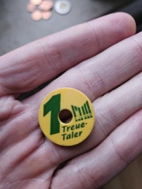
Nancy erklärte mir ihre Taktik: Sie teilt den Inhalt der Karre in mehrere kleineren Taschen und schleppt sie alle allmählich auf ihre Etage. Mir fiel eine Idee ein, meine körperliche Stärke µ demonstrieren, und zwar: ich nahm die ganze Karre auf, um auf Anhieb alles auf ihre Etage hinµbringen. Ich stieg bergauf, Nancy lief hinter mir und versuchte mich anµhalten: "Ich mache mir Sorgen um Ihren Rücken!"
In der Küche sagte Nancy mir: "Schließen Sie die Augen!" Ich bekam eine Dose Kondensmilch als Geschenk, worum Nancy ein Band in eine Schleife gebunden hat.
Ich hinterließ mein Fahrrad in ihrem Keller und nahm ihr Fahrrad mit, weil sie mich bat, es µ untersuchen, welchen Schaden ihm die Havarie am Dienstag angetan hat.| ich | "Mein Rücken hat kein Problem." |
| Nancy | "Ich komme und mache Ihnen eine Massage!" |
| ich | "Machen Sie sich keine Sorgen." |
Eine Beamtin aus Messerschmitt rief mich an und fragte, ob das Job-Center mir schon seinen Segen (Bildungsschein) fertiggestellt hat. Ich antwortete: "Momentan #."
| Nancy | "Warum benehmen Sie sich, wenn wir mit Freya spazieren, als ob Sie ein Unbekannter sind?" |
| ich | "Weil Freya mich ausstoßt, faucht wie ein Kätzchen und zwingt mich, den Abstand µ halten." |
| Nancy | "Sie beschützt mich auf solche Weise!" |
| ich | "Wovor?" |
| Nancy | "Freya sah, wie ich leide, wenn Sie sich weit befinden, aber mit mir # telefonieren." |
Ich bekam einen Anruf aus dem Job-Center, mir wurde mitgeteilt, dass der Bildungsschein am 11. Juni fertig sein wird. Ich gab diese Information Messerschmitt weiter. Sie antworteten, dass diese Frist zu spät # ist, also ich werde bald immatrikuliert, mein Schicksal ist schon definiert. Das bedeutet, dass mein laufender Zeitvertreib in der Akademie, mein 4-monatliche gewöhnliche Lebensart, bald in den Mülleimer der Geschichte geschmissen wird.
Heute soll ich an der Fahrschule immatrikuliert werden. Ich nahm Nancy mit. Sie erklärte, dass sie auch einmal an einer Fahrschule µ lernen versuchte, aber etwas schief gegangen war. Kurz gesagt, sie wollte einen Blick auf die deutsche Autoschulen werfen.
Wir sind das Büro der Fahrschule eingegangen. Der Dozent schaute sich meine Unterlagen an, Nancy setzte sich auf eine von den hinteren Schulbänken und fing an, die zahlreichen Bilder an den Wänden µ mustern. Er fragte mich: "Ist das Mädchen mit Ihnen?" Ich nickte und errötete. Während des "Verhörs" machte ich periodisch Schulterblicke Richtung sie, sie lächelte mir unterstützend. Ich wurde erfolgreich immatrikuliert.Auf dem Rückweg bat sie mich unerwartet, kurz anµhalten. Es stellte sich heraus, dass eines von ihren Katzenaugen noch als wir in die Fahrschule fuhren, ausgefallen war. Sie wollte unsere Fahrt in die Fahrschule # unterbrechen, deswegen weigerte sie sich damals µ bremsen. Mir fing an, mich schuldig µ fühlen, wie edel sie ist! Nach paar Minuten fanden wir das Katzenauge erfolgreich.
Heute wurde der Umstand mir mitgeteilt, dass ich morgen dringend in Bielefeld nötig bin. Ich bat Nancy, Herrn Sieger morgen während der Exkursion über die Ursache meiner Abwesenheit µ informieren.
Als ich in den Zug einging, fragte ich den Kontrolleur, was das billigste Ticket nach Bielefeld kostet (das ist eine andere Region, deshalb gilt die normale Tageskarte, womit wir Osnabrück oft besuchten, #, um dorthin µ reisen). Er verkaufte mir ein Ticket für ca. 30€. "Oho! Die Monatskarte kostet nur doppelt so groß, aber ist ganzen Monat lang gültig!" - dachte ich, aber ich hatte keine andere Auswahl. Abends, auf dem Rückweg, bekam ich eine massive Strafe, ca. 70€. Ich war mir bisher sicher, dass mein Ticket ganzen Tag gültig sei (ich glaubte, dass es wie eine Tageskarte funktioniere), aber es ergab sich anders.
Als ich zurück in Melle kam, war ich in schlechter Laune, und ich beschloss mich wiederµbeleben. Ich kaufte mir neue Sandalen neben dem Bahnhof.
Was Nancy angeht, hatte die Akademie heute, wie gesagt, eine Exkursion durch das Unternehmen "Amazon". Nancy erfüllte meine Bitte, weihte Herrn Sieger in den Grund meiner Abwesenheit ein. Sie schrieb mir Kurzmitteilungen innerhalb des Tages (Ihre Blockade hatte Nancy schon aufgehoben, ich bin in WhatsApp # blockiert). Sie schickte mir sogar ihr Foto vor dem Tor des Unternehmens.
Abends lud sie mich zu ihr ein.Ich erzählte Herrn Sieger, was für ein Desaster ich gestern erlebt hatte. Er öffnete mir meine Augen darauf, dass es keine Möglichkeit gibt, günstiger, als per Monatskarte eine Fahrt nach Bielefeld µ verwirklichen.
Nach dem Unterricht lud ich Nancy in meine Wohnung.
Dort küsste ich sie sehr aktiv, sodass sie mich fragte:
"Nehmen Sie jetzt wahr, dass ich Ihr Mädchen bin?"
Ich wusste #, was ich dem Menschen darauf antworten soll.
Was bedeutet der Ausdruck "dein Mädchen"?
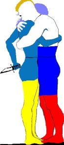
Sie fragte, ob ich ihr helfen kann, die Blumen umµpflanzen. Genau wie bei mir vor einigen Monaten, sind sie ihren Blumentöpfen entwachsen. Ich erklärte mich bereit, und versprach ihr, mein altes Zelt für diesen Zweck mitµbringen, damit der Balkon # beschmiert wird.
Nancy teilte mir ein Rezept: Sie nimmt ein Glas Wasser, wirft Schalen von Eiern hinein, und nach einigen Tagen wandelt dieses Wasser in eine stinkende Flüssigkeit um, womit Nancy ihre "Patienten" gießt. Die Patienten beginnen aktiv µ wachsen im Gegenzug. Sie schenkte mir ein Glas dieser Flüssigkeit für meine Kaktusse.Am heutigen Morgen schockierte Nancy mich, indem sie mir einen Brief in WhatsApp geschickt hat. Am Rand dieser Kurzmitteilung ist der Ursprung der Kurzmitteilung µ sehen, diese Adresse weist darauf hin, dass Nancy sie von Ihrer Mama weitergegeben hat. Dieser Brief verbietet, heute den Müll µ entsorgen, da irgendein Fest heute auf dem Kalender der Orthodoxen Kirche steht. Eine spanische Scham überwältigte mich. Dazu kommt, dass der Brief in Russisch verfasst worden war. Das bedeutet, dass wir von Spam getroffen sind: Mama Nancys hat diesen Brief nicht selbst verfasst, sondern hat ihn von jemandem irgendwo aus Russland bekommen und ihrer Tochter weitergegeben hat, genauso wie Nancy ihn mir weitergegeben hat. Ich griff nach dem Mülleimer und schleppte ihn mit verdoppelter Energie zur Mülltonne.
An der Akademie haben wir heute das Thema "Sparsamkeit", sehr wichtiges Thema in Deutschland. Als ich an der Reihe war, meinen Vortrag zum Thema vorµstellen, nahm ich plötzlich das Kaffeetrinken ins Fadenkreuz. Mit großzügigen Gesten kündigte ich an, dass es nicht angebracht sei, den Kaffee in der naheliegenden Tankstelle µ kaufen. Man kann den Kaffee aus dem Haus in der Thermosflasche bringen, man kann in der Küche der Akademie den Kaffee zubereiten usw. Dieses mein kleines Theaterstück kann Nancy verletzen, weshalb das keine edle Tat möglicherweise war.
Nach dem letzten Unterricht kündigte Nancy mir an, dass sie einen neuen Bikini gekauft hatte, und schlug vor, eine Spazierfahrt an den See µ unternehmen, um dort gemeinsam µ schwimmen. Es bleibt nur ein Problem: Freya µ überreden, sich uns anµschließen. Wir stellten ihr Fahrrad # ab, ich wartete auf das Ergebnis draußen mit zwei Fahrrädern, Nancy nahm diese Aufgabe auf sich und verschwand in ihrem Haus. Freya wehrte sich energisch. Nancy kehrte zu mir verlegen zurück, um µ gestehen, dass sie scheiterte. Ich versuchte Nancy trösten, erinnerte sie daran, dass es noch 3 freie Tage gibt, am Morgen z.B. können wir versuchen mit frischer Energie aufµbrechen, wenn das Wetter mitspielt. Ich verstehe ihre Besorgnis #. Wir haben fast ganzen Sommer vor uns! Dabei gab ich ihr einen Handkuss. Dieser Kuss geschah im Keller, wohin ich ihr Fahrrad endlich gestellt hat.Versteht Nancy #, dass Freya sich nicht wegen der Faulheit, sondern meinetwegen weigert? Bemerkt sie die Merkmale #, wodurch unser Verhältnis seit einigen Wochen markiert ist:
Am Morgen hat Nancy mir geschrieben, dass kein Versuch, Freya zur Fahrt an den See µ überreden, etwas brachte.
Das war für mich nicht besonders sensationell, und ich begann, mich auf einen selbständigen Weg an den See µ machen.Plötzlich rief sie mich an und sagte, dass Freya plötzlich ihre Entscheidung verändert habe. Auf dem Halbweg unterbrach ich meine selbständige Fahrt an den See, wendete mein Fahrrad und fuhr ihnen entgegen. Aber als ich sie getroffen hatte, ergab es sich, dass Freya nicht an den See, sondern in den Zoo in Osnabrück will. Das stimmte mit meinen Planen ganz nicht überein, aber ich beschloss, mich nicht µ wehren.
Ich kaufte ein Ticket im Zug für mich, Freya sagte mir, dass auch ihre Mutter ein Ticket braucht, aber ich traf die Entscheidung, keinen Millionär heute zu spielen, da ich vor kurzem viel Geld verlor (die Autoschule, die Strafe, die Sandalen usw.). Ehrlich gesagt, war ich nicht so pleite, ich vermochte noch für sie µ bezahlen, aber ich beschloss, heute so ein Experiment durchµführen, sie sich selbst bedienen µ lassen. In diese Exkursion wurde ich nicht aus meiner Initiative involviert, und ich gucke, wie sie endet.Sobald wir in Osnabrück ankamen, gerieten wir in die Mitte eines Punk-Festivals. Wir sahen viele Punks auf den Straßen. Nancy schrie wie ein Kind: "Ich will ein Foto mit ihnen!"
Ich habe im April meine Monatskarte pausiert, aber dieser Umstand brachte mir nur Unannehmlichkeiten: nur 4 Tage sind nach der Strafe am 4. Juni vergangen. Ich habe ein Lehren daraus gezogen und beschloss heute, meine Monatskarte µ beleben. Nancy sagte, dass sie morgen noch eine Fahrt will, morgen will sie nach Münster. Ich wurde erstaunt: es ist noch nicht bekannt, wie die laufende Fahrt sich enden wird, und sie plant schon die nächste Fahrt. Sieht das nicht zu nervös aus? Ich kann # begreifen, was sie nach Münster zieht. Aber es war schon zu spät: ohne ein Wort µ verlieren, besorgte sie sich genau solche Monatskarte, wie meine.
Ich beriet Nancy, bei den Kassierern µ fragen, ob die Fahrkarte von Freya dort, in Münster, gültig ist. Ich will #, dass Nancy auch in eine astronomische Strafe geriet, wie ich. Nancy leistete meinem Tipp Folge: sie wendete sich an den Beamten erneut. In ihrer üblichen Manier, mit Mimik, mit Gesten, die Fahrkarte Freyas demonstrierend, versuchte das Mädchen, den Beamten diese Frage weiterµgeben. Der Beamte antwortete ihr mit zwei kurzen Sätzen:
Während der Promenade besuchten wir einen Basar, der im orientalischen Stil gestaltet ist. Dort schlug ich ihr Nancy, 20€ mir µ nehmen. Sie lehnte ab, ich zuckte mit den Schultern und steckte den Geldschein in die Hosentasche.
Es begann µ regnen. Um ein Obdach µ finden, nahmen wir Platz in einem Café auf dem unendlichen Territorium des Zoos. Nancy fragt mich, wie ich sie in irgendeinem Restaurant arbeiten ansehen würde. Ich antwortete, dass ich keine Ahnung von diesem Beruf habe, obwohl ich selbst bei einem Restaurant wohne. Ich arbeitete in dieser Sphäre niemals. Sie seufzte und sagte: "Ich auch arbeitete dort nie." Mir merke mir, dass sie ihre Träume von irgendeiner Arbeit, die etwas mit ihrer Spezialität gemein hätte, schon aufgibt, aber ich verlor keinen Kommentar.Nancy erhebt wieder das Thema einer Fahrt nach Münster. Obwohl wir am Montag freihaben, will Nancy unbedingt morgen nach Münster fahren. Mich begeistert diese Eile nicht sehr. Ich habe ohnehin einen ganzen Tag für eine ungeplante Fahrt geopfert. Aber das ist nicht das Wichtigste. Ich kann für dieses Mädchen vieles durchhalten. Versteht sie etwa #, dass es unrealistisch ist, Freya so einer langen Fahrt unter den schrecklichen Verhältnissen der Deutschen Bahn auszusetzen? Unabhängig vom Datum, sowohl morgen als auch übermorgen ist es problematisch, 2 Stunden mit Freya µ reisen.
Der Regen hört auf, und wir setzen unsere Exkursion fort. In einem Moment während der Promenade blieben wir vor einer engen Brücke stehen. Ich war vorne und wollte schon, mein Bein auf die Brücke µ stellen, plötzlich kam Freya zu mir, stoß mich aus der Mündung von der Brücke und gab den Weg ihrer Mutter mit den Worten: "Junge und schöne sollen als erste durchgehen!" Nancy ging voran, auf ihrem Gesicht lag Vergnügen, aber ihr Gesicht war nicht schön, eher hässlich.
Nach dem Zoo fuhren wir in den Bahnhof. Ich führte sie zum Büro "Info", und ich schlug Nancy vor, uns noch einmal über die Gültigkeit der Fahrkarte Freyas µ erkundigen. Aber da ereignete sich etwas anormales: Freya weigerte sich mit Aggressivität, sie verzichtete darauf, ihre Fahrkarte uns µ geben (sie trägt ihre Fahrkarte selbst). Schon im Vorhinein dieses Moments wusste ich schon, dass kein Münster morgen möglich ist (ich und diese Familie sind zu inkompatibel miteinander), jetzt weiß ich, dass wenn ich in noch eine Exkursion gegen meines Willens involviert wäre, hätte ich mich mit Problemen auseinandergesetzt, die auf die Tickets dieser Familie zurückµführen sind. Habe ich meine eigenen Probleme nicht satt?
Da kam ein Zug, der ausgerechnet nach Melle fährt, ich machte ihnen ein Handzeichen: "Macht ihr, was ihr wollt!" und brach Richtung des Zugs auf. Sie folgten mir.Im Zug bot ich Nancy den Tee an. Nancy lehnte ab. Ich bestand scherzhaft: "Der Tee ist mit Zitrone versehen!" Plötzlich attackierte mich Freya: "Jetzt stecken wir diese Thermosflasche in Ihren Arsch!" Das hatte sie vor Augen aller Fahrgäste ausgesprochen.
Vor Verlegenheit wusste ich #, was ich tun soll, und warf einen Blick auf ihre Mutter. Nancy tat sich so an, als ob sie nichts damit µ tun hat.Nach einigen Minuten sagte plötzlich Nancy: "Ich bin bereit, Ihren Tee anµnehmen." Das war für mich wie ein Schlag ins Gesicht. Ich antwortete: "Ich verstehe so ein Benehmen #. Mein Angebot wurde von Ihnen ja vor kurzem ausdrücklich abgelehnt."
Nachdem wir aus dem Zug ausstanden, tut sich Nancy, als ob ich mich schlecht in der Exkursion gezeigt hatte: sie sprach mit mir #, zeigte ein unbegrenztes Verachten.Ich begleitete sie bis zu ihrem Haus, obwohl ihr Verhalten gegenüber mir definitiv das moralische Recht gab, sie µ verlassen, genau wie ich am 8. Mai getan hatte. Ich half, wie üblich, die Fahrräder in den Keller µ bringen, Freya ging nach oben, in die Wohnung, ich und Nancy verzögerten uns an der Haustür. Wir standen gegeneinander und schwiegen. Ich beeilte mich #, mir war interessant, welche Worte von ihr zum Abschied klingen werden. Besteht der Wunsch noch, morgen nach Münster µ fahren, oder? Nancy brach das Schweigen als die erste, aber nicht mit dem Wort "Tschüss!". Sie gebar plötzlich die Phrase: "Geben Sie mir 20€!". Und sie begann mich aufmerksam anµstarren, als ob ein Kampf gegen Geiz jetzt in mir erfolgen soll. Ich hob meine Augenbrauen, brachte aus der Hosentasche denselben Geldschein hervor, den ich ihr schon am Mittag bot, und streckte ihr ihn ohne jeglichen Ausdruck auf meinem Gesicht. Aber erstaunlicherweise griff sie nach ihm #. Stattdessen schaltete sie wie ein Roboter um: "Wollen Sie Kaffee?" Ich antwortete, wie ein höflicher Mensch antworten soll: "Nein." Da attackierte sie mich aggressiv: "Wieso? Ich habe Ihnen normal und höflich eine Tasse Kaffee angeboten!"
Warum ist sie so aufgeregt? Warum überreagiert sie so? Das Schicksal gab mir leider keine Gelegenheit, damals festµstellen, was für eine psychische Krankheit mir "mein Mädchen" weggenommen hatte: aus den oberen Etagen hörten sich schon Schritte von Freya an. Freya kehrte zurück, stellte sich neben ihre Mutter, stemmte die Hände in die Hüfte und begann mich anµstarren. Ich verstand, dass ich in eine Situation geraten war, wo jede meine Handlung unübersichtliche Folgen bringen kann. Die Szene sah so aus, als ob ich Nancy belästige, und Freya wie ein Schutzengel runterkam, um den Aggressor von ihrer Mutter abµwehren. Diese Runde hatte ich verloren. Deshalb sagte ich "Auf Wiedersehen!" und ging.
Schuf ich knapp 1 km von ihrem Haus, erklang plötzlich ein Anruf. Das war Nancy. Ich beschloss, den Anruf nicht entgegenµnehmen. Lehrt man uns an der Fahrschule etwa #, dass man sich auf das Lenkrad konzentrieren soll? Soll man Anrufe etwa # ignorieren, zumal der Anrufer eine unerklärbare Nervosität zeigt und deutlich psychisch krank wirkt?
Dann kam eine SMS, wo Nancy bat mich, ihren USB-Stick zurückµgeben. Das sah so lächerlich aus, in einem Moment, wo alles in eine Katastrophe rutscht, sich an solche Kleinigkeiten µ erinnern, aber ich kannte Nancy schon, und für sie war das typisch. In aufgeregtem Zustand ist sie fähig, diverse Dummheiten auf den Weg µ bringen, aber der normale menschliche Schritt fällt ihr # ein. Ihre enorme Nervosität formt sie. Habe ich je gesehen, dass sie sich für etwas entschuldigte? Mir ist, niemals... Nach einer Weile schrieb ich ihr zurück: "Morgen, das ist ja nicht so dringend. Oder?"Ich nehme an, dass es einfach um eine spontane Explosion der weiblichen Hysterie handelte. Hätte ich sie damals vor der Haustür umarmt und geküsst, wäre dieser Stress sofort verschwunden. Aber in der Gegenwart von "Tante Freya" war so ein Szenario unmöglich.
Ich verpasste einen Anruf Nancys, später rief sie wieder an.
| Nancy | "Warum nehmen Sie meine Anrufe # entgegen?" |
| ich | "Ich habe verpasst." |
| Nancy | "Warum haben Sie mich # zurückgerufen?" |
| ich | "Das ist selbstverständlich doch: ich halte euch einfach für böse Leute." |
| Nancy | "Wir sind keine böse Leute." |
| ich | "Ist das Ihr Ernst? Sehr böse seid ihr, sehr. Ihr seid so böse, wie Russen. Ihr seid schlecht erzogen. Ich soll mich mit eurer Erziehung akut beschäftigen." |
| Nancy | "Wie wollen Sie das machen?" |
| ich | "Mit dem Ledergürtel. Ich verprügele Sie so, dass die eigene Mutter # wiedererkennt! Wollen Sie das?" |
| Nancy | "Nein. Ich habe keinen Bock darauf, dass Sie mich schlagen. Ich sage mehr: ich will #, dass Sie mich überhaupt anfassen! Legen Sie bitte den USB-Stick in den Briefkasten." |
| ich | "Wofür? Ich kann ihn in der Akademie persönlich übergeben. Ist dieser USB-Stick so dringlich nötig?" |
| Nancy | "Nein, nicht dringend, ich möchte einfach überflüssigen Kontakt vermeiden. OK, bis Dienstag." |
| ich | "Wir bleiben in telefonischem Kontakt und wir sind keine Feinde." |
Heute haben wir laut dem Lehrplan die Werkstatt. Als ich den Hof der Werkstatt betritt, saß Nancy am Tisch unter den Leuten, die in der Werkstatt angestellt sind.
Ich weiß, dass ich und Nancy von nun an wieder zu dieser hässlichen Manier verurteilt sind, uns so anµtun, als ob wir miteinander unbekannt sind. Paar Mal solche haben wir solche Erfahrung schon gehabt. Aber ich soll zugeben, dass Nancy eher mich kontaktierte als ich sie kontaktierte: sie redete mich mit der Frage an, wo ihr USB-Stick ist, und als ich antwortete, dass er bei mir ist, befahl mir, ihn ausµgeben. Ich beeilte mich #, ihren Befahl ausµführen. Nach einigen Stunden kam sie selbst zu meinem Tisch und verlangte ihr Eigentum explizit. Ich wies sie auf ihr USB-Stick hin, den ich speziell an Rand meines Tisches längst gelegt hatte. Sie wendete ihren Kopf diese Richtung und bemerkte ihn. Also Nancy holte den USB-Stick ab, und die Rückgabe fand hiermit genauso statt, wie sie im Telefonat angekündigt hat: ich fasste Nancy gar #.Der Franzose ist heute auch in der Werkstatt. Sein Platz ist neben mir, und wie immer plaudert er mit mir. Da unser Gespräch laut ist, schließen einige andere Junker sich ihm an.
Dazu kommt, dass ich mich mit einem sehr ambitionierten Projekt beschäftige. Mir kam die Idee, ein Modell eines Wagens µ bauen und dorthin eine Figur µ setzen, die die Punk-Gruppe "King und Narr" symbolisiert. Dieses Projekt ist voller Bauteile, die sehr exakt einander passen sollen.Die Skizze lockt die Schulkameraden an, und unsere Gesellschaft ist zahlreich und laut. Nancy kam einmal zu uns, diesmal nicht so aggressiv. Sie versuchte µ fragen, was ich baue. Sie wollte fragen, "Wie heißt das?" aber benutzte ein falsches Verb. Ich korrigierte sie, wie ein Klugscheißer.
Nancy hat ihr eigenes Projekt gestartet, einen Hubschrauber. Aber sie sägt nichts aus, sie ist in der Ingenieurkunst nicht so begabt. Ihr Projekt ist nur ein Bild. Mit dem Handwerk ist es nur dadurch verbunden, dass Nancy es nicht auf Papier, sondern auf einem Brett malt.
Morgen soll eine Exkursion stattfinden. Da wir uns heute nicht in dem Hauptquartier befinden, fällt es schwer, exakt festµstellen, wo und wann wir uns versammeln. Ich fragte den Chef, er antwortete, dass wir wie üblich ins Hauptquartier kommen sollen.Am Schluss des Unterrichts kam der Franzose zu mir und sagte, dass die morgige Exkursion um 7:00 startet und nannte irgendeinen sonderbaren Versammlungsort: am Bahnhof. Ich unterbrach ihn: "Echt? Ist das dein Ernst?" Er wiederholte seine Worte und versicherte mich, dass es der aktuellste Bescheid sei.
Heute ist der Tag, an dem ich vom Job-Center den Bildungsschein bekomme, deshalb wurde beschlossen, dass die Bande ohne mich aufbricht, und ich mich ihr später anschließe.
Heute ist der letzte Tag von Matthias in der Akademie.
Nach der Audienz beim Job-Center stehe ich bei dem Museum, wo Freya mich am 13. April mobbte. Ich warte auf die Bande. Ab und zu telefoniere ich mit Herrn Sieger. Endlich ist die Gruppe zum Schloss angekommen. Herr Sieger schreitet vorne wie ein Pionierleiter. Das Schloss ist die letzte Etappe der Exkursion. Auf der ersten Etappe, die ohne mich abgelaufen ist, haben sie das Freibad besucht, das vor kurzem in unserer Stadt eröffnet wurde.Nach der Exkursion begleite ich Nancy #. Aber jedenfalls ist der Platz, wo unsere Exkursion endete, schon die Innenstadt, bis zu ihrem Haus bleiben höchstens zwei Kilometer.
Vielleicht hatte ich heute eine Chance, meine liebe Nancy zurückµbekommen. Heute lächelte sie mir oft, machte mir schöne Augen. Ich weiß #, was das war, kann sein, dass sie etwas von mir brauchte und nach einer Gelegenheit suchte, mich anµreden. Hat ihr Fahrrad technische Pannen wieder oder was? Ich ignorierte ihre Signale hartnäckig. Ich bin ein direkter Mensch, wenn ich etwas von anderen will, kündige ich es ihnen direkt an. Sie braucht nur sich an mich einfach µ wenden. Denkt sie wirklich, dass ich sie als einen Feind betrachte? Ich habe viele Feinde, die viel wichtiger sind, dieser dreckige Kerl Putin, zum Beispiel. Dazu kommt die Tatsache, dass ihre Macht über mich nirgendwohin verschwunden ist. Dieses kleine Kind, das schon 29 Jahre alt ist, begreift #, dass ich immer noch bereit bin, ihre Befehle µ erfüllen, sie braucht nur klar diese Befehle µ formulieren: Was soll ich für sie tun? Entweder 20€ ihr geben oder mit ihr ein gemeinsames Kaffeetrinken eingehen.
Während einer Pause teilen Junker unter sich Nüsse, ich auch habe eine Portion bekommen und frage, wovon sie erschienen waren. Nancy antwortet: "Ein Hase hat gebracht." Und ich verstehe sofort, dass sie diese Nüsse mitgebracht hat.
Kurz nach ihrer Ankunft verschwand Nancy plötzlich, vielleicht hatte sie irgendeinen Termin im Job-Center. Dann erschien sie trotzdem wieder.
Ich versuchte mich in Bezug auf Nancy gut zu verhalten. Sie malt auf dem Brett ihren Hubschrauber. Während Nancy in ihrem Termin war, druckte der Chef den Lehrplan für die nächste Woche aus. Er gab uns ein Exemplar pro ein Junker. Normalerweise gucken wir freitags den Plan im Hauptquartier auf dem großen Bildschirm, aber wenn wir uns in der Werkstatt befinden, ist das problematisch. Ich opfere Nancy mein Exemplar. Das ist meine Dankbarkeit im Gegenzug für die Nüsse.Zum dritten Mal an dieser Woche besuche ich die Werkstatt. Das ist ein Rekord.
Heute hat unsere Werkstatt Mitglieder der berühmten Organisation "Rolandbruderschaft" zu Besuch. Deswegen geht der heutige Unterricht eher als eine Präsentation vor. "Rolandbruderschaft" ist etwas wie eine Sekte, worin Handwerk-begabte Leute ein besonderes Leben führen und ihr Talent auf atemberaubende Höhen bringen. Eines von den Ritualen dieser Sekte ist, dass sie etwas wie eine Pilgerreise weltweit eingehen. Die Mitglieder erzählen uns von ihren Abenteuern.Aber Nancy ist heute nicht mit mir. Erinnert ihr euch an das Abkommen mir der Leitung, den ich am 16. April organisierte, dass wir mit Nancy immer in dieselbe Gruppe geraten? Noch niemals wurde dieses Abkommen verletzt. Heute landet Nancy allerdings in der Gruppe, die zu Lektionen im "Hauptquartier" verurteilt ist. Ich kam dem traurigen Gedanken, dass sie das Büro Frau Küste im Alleingang besucht und mein Abkommen abµschaffen gebeten hat. Unsere einstigen Beziehungen sind nämlich nichts als Geschichte schon, und dieses Abkommen macht logischerweise keinen Sinn mehr. Diese Hypothese sieht vernünftig aus. Warum nicht? Wer praktiziert das, Kurzmitteilungen ab und zu zu löschen? Wer hat mich einst ganz blockiert? Sie ist ja fähig, solche komische Schritte zustande µ bringen.
Heute sind wir wieder in der Werkstatt. Das sieht wie ein Marathon aus. Normalerweise ist jeder Junker ca. 1-Mal pro Woche dort, nicht öfter, aber meine letzten Wochen sind so oft der Werkstatt zugewiesen, als ob der Gott, an den Nancy glaubt, meinen Abschied von der Akademie mit der Werkstatt segnet, damit mein Projekt wie letzter Akkord klingt. Alles weist darauf hin, dass mein Projekt vollständig beendet wird.
Es bleibt nur, meinen Wagen µ streichen, mit den Farben. Nancy ist auch da, in der Werkstatt. Sie beschäftigt sich mit ihrem Hubschrauber, wie immer, und hantiert mit den Farben aktiv. Also, ich bin gezwungen, mich zeitweise ihrem Tisch µ nähern, um diverse Farben davon µ nehmen. Aber wir sprechen miteinander #.Heute gehen wir, Junker der Akademie, wieder in eine Exkursion. Das Ziel der Exkursion liegt wieder in den Grenzen Melle und ist das Depot. "Depot" bedeutet Unternehmen, wo man Züge repariert. Es stellte sich heraus, dass so eine Institution in unserer Stadt vorhanden ist. Sie liegt in der Nähe vom Bahnhof. Vor der Exkursion versuchte ich bei Frau Hammer einen Urlaub µ bestellen (ich wollte zu Hause die letzten Tage vor "Messerschmitt" verbringen, um allein meine Gedanken in Ordnung µ bringen). Frau Hammer bestätigt, dass ich einen erheblichen Haufen von freien Tagen schon verdient habe, aber sagt weder "ja" noch "nein".
Ich bin zu der Adresse, die uns angekündigt worden ist, gefahren. Vor den Pforten des Depots haben sich schon fast alle gesammelt. Nancy ist heute aus irgendeinem Grund ohne ihr Fahrrad. Im Vorhinein wird jedem von uns eine orange Uniform ausgegeben, wir ziehen diese Jacken an.Die Exkursion durch das Depot war spannend. Obwohl unser Stadt klein ist, spielt dieses Depot eine wichtige Rolle in deutscher Wirtschaft. Wir schauten uns Züge aus verschiedenen Bundesländern an, wurden zu Zeugen diverser Reparaturen, die im vollen Gang waren. Für mich, als einen Bastler, war das ein Vergnügen. Ich erfuhr, dass jedes Paar von Rädern nicht nahtlos ist, sondern noch weiter zerlegt werden kann. Bisher betrachtete ich diese Paare als monolithisch, wie Hanteln.
Ein interessanter Moment soll ich erwähnen. Einmal ging ich während der Exkursion an irgendeinem Pfahl vorbei, Nancy ging im Bestand unserer Kolonne ein bisschen hinten. Ich bemerkte, dass sie absichtlich ihre Richtung etwas korrigierte, sodass sie an meine Seite relativ zum Pfahl geriet und ließ ihn zwischen uns #.Bevor ich Abschied nahm, besprach ich das Thema des Urlaubs kurz mit Herrn Sieger. Ich fragte, warum dieser Urlaub mir nicht gern zulassen wird. Herr Sieger tat kund, dass jemand mit mir etwas besprechen will. Also, es steht noch etwas auf dem Programm noch. Ist hier so eine Tradition etabliert, dass jeder Absolvent das letzte Interview vor dem Gehen geben soll, oder was?
Nach der Exkursion ging Nancy Richtung Bahnhof zu Fuß mit ihren Freundinnen, mit Junkerinnen, die erwachsene Frauen sind (Schwester Iris und andere). Ich fuhr mein Fahrrad hinter ihnen eine kurze Zeit, bis ich nach rechts abbog, und während ich ihnen folgte, fühlte ich, wie Nancy mit jedem Schritt aus meinem Leben verschwindet...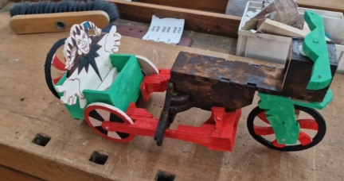
Je nach ihrem Gesicht ist sie heute in normaler Laune, und während der letzten Stunde näherte ich mich ihr und übergab ihr ihre CDs. Nach dem Unterricht verzögerte sie sich wieder, erheblich. Das irritierte mich ein bisschen. Man kann nachvollziehen, dass sie sich dort, im Hauptquartier, verzögert, sie kann dort mit Dozenten etwas besprechen. Aber was hält sie hier, in der Werkstatt? Um diese Zeit zu töten, versuchte ich die Friseurin anµsprechen, die neben der Werkstatt arbeitet. Sowieso suche ich augenblicklich ein neues Salon, ein Salon, das nachmittags arbeitet. Aber mir gelang es #, Empathie bei der Friseurin herausµrufen, sie spürt wahrscheinlich keinen Wunsch, Termine mit Ausländern µ vereinbaren (es gibt so eine Sorte von Deutschen). Durch die offene Tür des Salons bemerkte ich, wie Nancy endlich an dem Salon vorbeifährt, ich verabschiedete mich akut von der Friseurin, beendete dieses zweckloses Gespräch und beeilte mich, Nancy nachµholen. Nancy fuhr irgendein anderes Fahrrad, das nicht rot, sondern weiß war. Sie lehnte meine Eskorte # ab, gab mir ein kurzes Lächeln sogar. Sie erklärte, dass Tante Erika ihr dies Fahrrad vorläufig verlieht, weil das rote Fahrrad jetzt zu Reparatur ist. Ich half ihr das Fahrrad in den Keller µ platzieren, den ich seit dem verfluchten Tag 07.06.2025 nicht mehr besuchte. Mir kam der Gedanke, ihre Hand da, im Keller, µ küssen, aber ich erinnere mich an ihre Bitte, sie # anµfassen. Sie soll selbst dies Tabu aufheben. Falls sie es nicht aufhebt, bleibt es für immer und ewig hängen.
In ihre Wohnung wurde ich natürlich # eingeladen. Wir rauchen auf der Treppe für paar Minuten, und das war es.
| ich | "Bald wird dieser Spalt zwischen uns schon 2 Wochen lang sein. So eine Pause haben wir noch nie erlebt. Ich bin diese Pause leid und beschloss mich heute zu erkundigen, ob es die höchste Zeit # ist, ein Frieden endlich abµschließen." |
| Nancy | "Ich habe innerhalb dieser Pause alles mir tausendmal überlegt. Ich und meine Familie - wir haben einige Konsequenzen gezogen." |
| ich | "Wollen Sie, dass wir eines Tages in ein Café wieder gemeinsam einkehren?" |
| Nancy | "Was ist der Anlass für so eine großzügige Geste?" |
| ich | "Ich entschuldige mich für meinen Vortrag, den ich ausgeführt habe, als ich die Geldverschwendung kritisierte." (ich meinte meinen Vortrag am 6. Juni) |
| Nancy | "Ich weiß vorläufig #. Ich soll mir überlegen." |
| ich | "Ich bin sehr geldgierig! Ich habe sogar den Zoo auf Kosten ihrer Familie besucht! Ich nahm Ihnen 20€ mit Vergnügen weg!" |
| Nancy | "Macht nichts, das war meine eigene Initiative, ich habe Sie dorthin eingeladen." |
| ich | "Ist es möglich, dass ich wieder helfe, Ihr Fahrrad µ reparieren?" |
| Nancy | "Ich sehne mich wirklich nach meinem Fahrrad, ich frage heute abends nach, ob das # übertrieben ist, dass der Ehemann von Tante Erika diese Reparatur aus eigener Kraft hinkriegt." |
| ich | "Ihre Blumen auf dem Balkon zeigend klagten Sie mir, dass Sie diese umpflanzen wollen. Brauchen Sie meine Hilfe noch?" |
| Nancy | "Es wäre gut..." |
| ich | "Wissen Sie, ich bin zwar ein grausamer Mensch, ein frecher Kerl, und alles miteinander, habe ich Gewissen. Früher oder später hätte ich sowieso Sie angeredet. Denken Sie, dass es mir angenehm ist, dass wir miteinander nicht mehr kommunizieren?" |
| Nancy | "Danke Ihnen, dass Sie mich angeredet haben." |
Ja, sie dankte mir, aber ich erblickte keine Flammen in ihren Augen. Und noch etwas: ich weiß # wofür, aber sie erlaubte sich mir so eine Info mitµteilen, dass irgendein anderer Junker ihr schon half, ihr Fahrrad µ platzieren. Irgendeiner von meinen Kameraden hat schon die Situation genutzt und anstelle meiner Person diese Ehre erzielte. Sie verriet mir den Namen dieses Junkers #. Wann konnte das passieren? Vielleicht am Freitag, als sie ihren Unterricht aus irgendeinem Grund im Hauptquartier hatte? Begleitete dieser Held sie vom Hauptquartier bis zu diesem Haus? Das ist eine gute Strecke! Ein Ritter!
Ich hoffe, dass es nicht seriös ist. Z. B., es könnte Matthias sein, der irgendwo in der Nähe wohnt.Es gibt noch etwas. Nancy erinnerte mich plötzlich an meine Wörter "Ihre Mutter erkennt Sie # wieder" aus unserem letzten Telefonat. Sie klagte mir, dass sie diese Wörter sehr ernst nahm. Sie versuchte mir µ erklären, warum. Laut ihren Worten hat ihr Ehemann sie einmal ins Gesicht geschlagen. In Russland passieren solche Dinge ab und zu, ich weiß #, wie die Lage in der Ukraine ist, aber je nach ihren Worten, passieren solche Szenen in der Ukraine auch. Ich antwortete zu ihrem Trust, dass es an der Erziehung liegt, haben ihn seine Eltern schlecht erzogen, wird ihn das Leben erziehen. Sie setzte ihre Geschichte # fort, deswegen habe ich keine Ahnung, wie ihre Ehe sich weiter entwickelte: kann sein, dass Nancy's Mann schon seine Strafe bekommen hat, kann sein, dass er chemische Kastration schon erfahren hat. Aber so eine Überraschung, die plötzliche Erinnerung an das Telefonat 08.06.2025, das ich schon längst vergessen habe, gefällt mir nicht, sie zeigt, dass unerwartete Konsequenzen noch auf mich warten.
Heute ist mein letzter Tag in der Akademie. Ein neuer interessanter junger Dozent kam, um über das Thema "Die Lagerung der Waren" µ unterrichten. Ich weiß #, wie dieses Thema für Migranten und Leuten aus Unterschicht interessant sein soll, aber alle hören zu. Nancy erschien, wie gewöhnlich, nach einer Halbstunde in der Tür, blieb bei dem Dozenten stehen und sagte ihm einen kompletten Satz: "Entschuldigen Sie mich bitte für die Verspätung." So eine lange Phrase und ohne jeglichen Fehler! Sie macht Fortschritte.
Frau Hammer teilte mit uns Kirschen und Erdbeeren.
Am Mittag fand das letzte Interview mit Frau Hammer statt. Auch Herr Sieger war anwesend. Zunächst sollte ich zwei Lieblingsdozenten nennen. Ich fragte, ob sie beide selbst dafür passen, aber Hammer antwortete, dass sie keine Dozenten, sondern Erzieher sind. Dann nannte ich Herrn Hartmann und Frau Iljuschin.
Danach bat Frau Hammer mich ein bisschen µ verzögern. Herr Sieger verließ das Zimmer und anstelle Herrn Sieger kam eine Polizistin hinein. Das ist dieselbe Polizistin, die uns am 11. März verhörte und der wir den Diebstahl des Benutzerkontos anzeigten. Frau Hammer tat mir plötzlich kund, dass sie mit mir noch eine Angelegenheit besprechen wollen, die Nancy angeht.| Polizistin | "Herr Nabokov, was Schlechtes hast du Frau Bondarenko gesagt?" |
| ich | "Nichts." |
| Polizistin | "Warum hast du ihr gesagt, dass ihre Mutter sie # wiedererkennt?" |
| ich | "Hat ihre Mutter sie zu lange # gesehen?" |
| Frau Hammer | "Nein, Sie haben ihr versprochen, dass ihre Mutter sie # wiedererkennt!" |
| ich | "Wissen Sie, Frau Hammer und Frau Polizistin, Fräulein Bondarenko ist sehr abergläubig. Sie fühlt etwas, was wir, einfache sterbliche Menschen, µ fühlen unfähig sind. In Gegenwart so eines Menschen soll man einige Wörter vermeiden, um ihm keinen Anlass µ geben, das Thema µ übertreiben. Sagt man die Phrase z. B. 'Ich will die Zeit töten' - reagiert sie sofort: Aha, dieser Typ ist ein Mörder!' Sagt man 'zum Teufel!', denkt sie, dass dieser Typ ihr die Hölle wünsche. Usw." |
| Polizistin | "Du sollst wahrnehmen, dass es in Deutschland kriminell ist, einem Menschen mit Schlägerei µ drohen!" |
| ich | "Ich hatte kein Motiv, ihr µ drohen. Nie im Leben hatte ich einen Konflikt mit Fräulein Bondarenko. Alle möglichen Missverständnisse sind ausschließlich auf ihre Tochter zurückµführen." |
| Frau Hammer | "Herr Nabokov, das Kind wird sich immer nach ihrem leiblichen Vater sehnen." |
| ich | Mir wurde klar, dass Frau Hammer in die Beziehungen zwischen mir und Nancy eingeweiht ist. "Gut. Sie sind Profi, Sie wissen besser, wie man ihr helfen kann, ich überlasse Fräulein Bondarenko Ihnen." |
| Polizistin | "Ja, wir sind Profi. Aber damit wir sicher sind, dass du Frau Bondarenko in Ruhe gelassen hast, wirst du ein Armband auf dem Arm tragen, der uns signalisiert, ob du dich von ihr fernhaltest oder #." |
| Polizistin | "Trage dies Armband stets. Du kannst schwimmen, baden, aber falls du es abnimmst, wird es uns sofort signalisieren, dass es den Kontakt mit deiner Haut verloren hat!" |
| ich | Ich zuckte mit meinen Schultern und fragte: "Bin ich jetzt frei?" |
| Polizistin | "Ja, du bist relativ frei. Die Familie Bondarenko befindet sich unter unserem Schutz! Bedanken Sie sich bei Frau Hammer, sie bat uns, Sie zur chemischen Kastration # µ verurteilen." |
| ich | "Danke, Frau Hammer." |
| ich | "Ich habe eine Frage. Klagte Frau Bondarenko darüber #, dass ich ein Pädophiler bin?" |
| Frau Hammer | "Nein. Sie sagte nur, dass Sie ein guter Mensch sind." |
| ich | "Behauptete sie #, dass ich ihr die Hand gebrochen habe?" |
| Frau Hammer | "Nein." |
| Polizistin | "Hast du ihr das wirklich angetan?" |
| ich | "Nein. Ich habe nur ihrer Tochter einen Nagel einmal gebrochen." |
Ich kaufte in "Netto" den Mais, um ihn in der Mikrowelle zuµbereiten. Der neue Dozent brachte mir bei, wie man die Mikrowelle startet. In der Küche gibt es zwei Tische. An jedem von ihnen sitzt je eine Junkerin. Eine von denen ist unsere Nancy. Ich setze mich speziell neben Nancy hin, um µ zeigen, dass ich keine Aggressivität ihr gegenüber spüre.
Die LED am Bord des Armbands hat ihre Farbe # verändert. Das bedeutet, dass dieses Armband keine Ahnung hat, wer neben mir sitzt. Vielleicht kann dieses Armband nur meine geografischen Koordinaten verfolgen. Nancy kann sich bewegen, aber ihr Haus - #. Also hat die Polizei darin die Adresse des Hauses eingegeben und liegt jetzt auf der Lauer, dass ich mich dem Haus Nancy nähere. In Polen habe ich so ein Armband schon getragen, es hat das GPS inne. Vermutlich, beruht dieses Armband auf derselben Technologie.
Ich rede Nancy # an. Wofür? Der Nachgeschmack vom gestrigen Gespräch ist noch ziemlich frisch. Ich habe nichts ihm hinzuzufügen: gestern wurden ihr einige Vorschläge gemacht, sie soll diese Initiativen entweder annehmen oder ablehnen. Sie hat Entscheidungsfreiheit und basta!
Was ihre 20€ betrifft, erinnere ich mich gut daran, dass ich Nancy # berühren darf. Ich behalte mir dieses Geld vorläufig.Für eine Sekunde öffnete die Tür sich, und Frau Hammer guckte in die Küche. Sie bemerkte, dass ich einen Platz neben Nancy eingenommen habe, verzog sein Gesicht und zog die Tür zurück.
Frau Küste tritt den Speiseraum ein und sagt: "Mahlzeit!". Nancy versteht #. Frau Küste erklärt ihr den Sinn des Grußes. Ich bewundere, dass Nancy solche Wörter # kennt, die in allen Sprachkursen als allererstes beigebracht werden, aber meine Gedanken beschäftigen sich mit dem Fakt, dass ich dieses Kind wahrscheinlich zum letzten Mal sehe.
Als ich das Gebäude der Akademie verließ, sagte mir Herr Sieger "Alles Gute!" Ich versuchte Nancy abµwarten, aber sie hat sich wieder wegen ihrer endlosen Gespräche mit den Dozenten allzu sehr verzögert, vielleicht um gute 15 Minuten, sodass meine Geduld ausgeschöpft wurde, und ich haute ab.Heute besuchte ich das Freibad, dasselbe Freibad, dem die Exkursion am 11. Juni gewidmet wurde.
Ich sehe schon, dass unser Zusammentreffen am 19. Juni praktisch nichts gebracht hat. Ich rechnete damit, dass meine Visite sie begeistert hat, dass sie diese Visite als Friedensabkommen betrachtet, mich wieder anµrufen beginnt und alles wiederhergestellt wird. Aber ich irrte mich. Wahrscheinlich, ereignete sich etwas innerhalb der 10 Tage zwischen dem Zoo und meiner Visite, ein unbekannter Umstand, der einen Keil zwischen uns trieb. Ich bin ein Mann, dem es mehrere Male gelungen ist, Nancy unter viel schlechteren Umständen zurückµerobern. Und ausgerechnet ich, ein erfahrener Macho, scheiterte an einem anfachen Spaziergang in den Zoo. Ganz zu schweigen davon, dass kein Grund zum Konflikt an jenem verdammten Tag im Zoo nämlich vorhanden war.
Aus Büchern meines Lieblingsschriftstellers Doktor Freuds habe ich gelesen, dass Frauen das Universum anders als Männer ansehen. Seit dem 27. März, als ich ihr im Anzug gekleidet "Ich liebe dich" gesagt hatte, wiederholte ich diese Worte, wenn ich mich # irre, niemals. Ich dachte, dass es logisch ist: solange ich ihr # gesagt habe: "Ich liebe dich nicht mehr", soll die erste Einstellung in Macht bleiben, da sie # aufgehoben wurde. Aber die Frau braucht jeden Tag eine Wiederholung. Wenn keine Wiederholung kommt, fühlt sie sich frei von der Pflicht, sich an den Beziehungen festµhalten.Jedenfalls weiß ich dieses Mal #, was µ unternehmen ist, ich bin ganz ohnmächtig: dieses Desaster ist aus heiterem Himmel gefallen, zu der Zeit, wo alles laut dem Plan entwickelte:
Ich frage mich, wie Nancy Leuten erklärt, aus welchem Grund ich aus ihrem Leben über Nacht ausgelöscht wurde. Wir verbrachten viel Zeit zusammen, Wir waren wie ein Bruder und eine Schwester, so gesagt. Und das alles verlief innerhalb des Blickfelds der Nachbarn, ganz öffentlich.
Eine interessante Frage ist auch, was als der Auslöser des Zusammenbruchs auftritt: Der Besuch des Zoos selbst? Nein, am 8. Juni rief sie mich an, und ihr Ton klang, als ob wir gute Bekannten noch blieben. Das letzte Telefonat? Ja, nach diesem Telefonat verhielten wir uns schon, als ob wir uns # kennen, aber vielmehr wurde das Blatt ein bisschen später gewendet: Ich sollte am 12. Juni den Zeichen Nancys in der Werkstatt Folge leisten, vielleicht war das ihr letzter verzweifelter Versuch, mit mir Frieden abµschließen...Ich fühle, dass meine Arbeitsfähigkeit abnimmt. Ja, als Nancy "mein Mädchen" war, verschwendete ich für sie ca. 2 Stunden pro Tag, aber sie erhob mir die Laune, und ich war fähig, um 12:00 ins Bett µ gehen und um 5:00 aufµstehen. Jetzt lege ich mich um 10:00 und stehe um 6:00 auf. Die Arithmetik ist einfach: damals verlor ich jeden Tag 2 Stunden, aber gewann 3 Stunden.
Auf dem Rückweg besuchte ich den See, und während eines Schwums ereignete sich eine Unannehmlichkeit: jemand hat mein Handy gestohlen.
Der erste Gedanke war freilich, mein eigenes Handy anµrufen, aber ich wusste #, wit wessen Hilfe ich das machen kann. Da traf ich auf Matthias neben dem Kaufland. Ich erzählte ihm von meinem Desaster und gab ihm meine Nummer, um eine Verbindung von seinem Handy aus µ erstellen µ versuchen. Meine SIM-Karte war offline. Also, das Individuum, das mein Handy nahm, gibt mir keine Chance, es zurück µ kriegen, das ist ein Diebstahl. Ich glaube #, dass dem Verbrecher das gelang, hinein einµdringen, da der Zugang drin vom Passwort versperrt war. Ich vermute, dass der enttäuschte Verbrecher das Handy einfach zerstört hat. Seit heutigem Tag sind alle Fotos von Nancy verlorengegangen. Dem Universum sei Dank, habe ich einige Fotos auf dem USB-Sticker Nancys abgespeichert. Es ist sehr interessant, ob sie diese Fotos behält oder ausradiert.Ich bat Matthias um eine Zigarette mit Haschisch, er wies mich zurück, erklärte, dass er dies Laster schon wegließ
| Polizistin | "Was war das Modell des verlorenen Handys?" |
| ich | "Samsung Galaxy S23. Und darf ich ein Offtopic stellen?" |
| Polizistin | "Ja." |
| ich | "Wann befreien Sie mich von diesem Armband?" |
| Polizistin | "Hast du deinen Geburtstag im Herbst?" |
| ich | "Ja, am 18. Oktober." |
| Polizistin | "Und wirst du 50 Jahre alt sein?" |
| ich | "Genau." |
| Polizistin | "Gleich nach diesem Jubiläum machen wir dein Armband weg. Je nach der Statistik, beginnt mit dem Alter 50 Jahre die Phase, dass so ein Frauenheld, wie du, schon als impotent degradiert wird. Danach interessiert er die Sicherheitsbehörde #." |
| ich | "Prima! Auf Wiedersehen!" |
| Polizistin | "Auf Wiedersehen, Herr Nabokov." |
Leider bemerkte ich #, welches Fahrrad Nancy fuhr: "ihr" Rotes oder den Ersatz.
Ich besuchte wieder das Freibad. Mir kam die Idee, sie einµladen, eine E-Mail an sie µ senden, aber ich vertrieb diese Idee. Das macht keinen Sinn: immer, wenn wir mit Nancy etwas Gemeinsames planten, verderbte Freya diese Pläne methodisch. Dazu kommt, dass so eine Veranstaltung mit Bikini verbunden ist, was diverse überflüssigen Gedanken bei meinen Feinden hervorrufen kann.
Und sie steht für die Männer, die IT-Spezialisten sind, #!
Wo befindet sich Freya in diesen Träumen, ist offen.
Wäre ich mit meinem Fahrrad, könnte ich sie einholen, abfangen und etwas fragen, zum Beispiel: "Wie geht's?" Aber da ich ohne mein Fahrrad bin, stehe ich jetzt vor dem Dilemma: "Schreien oder # schreien?"
Ich weiß noch, dass der nachfolgende Termin bei dem Orthopäden irgendwo im September stattfinden soll, damit der Orthopäde untersucht, ob die empfohlenen Übungen Wirkung gezeigt haben oder #. Logischerweise sollte ich dabei anwesend sein, da ich der Initiator bin.Aber ich halte mich fest an dem Versprechen, das ich Frau Hammer am 20. Juni gegeben habe. Ich mische mich in ihr Leben #. Die Ampel gab das grüne Licht, und traurige Nancy machte sich weiter. Sie entfernte sich von mir mit jeder Sekunde. Ich schrie ihr nichts hinterher, und sie verschwand.
Heute besuchte ich das Kaufland. Ich kehre von diesem Viertel nach Hause zurück. Da sehe ich den Franzosen, der parallel dieselbe Richtung geht, wie ich. Ich winkte ihm sogar. Was konnte er dort machen? Er lebt nicht in unserer Stadt, auf die Werkstatt ist er nicht mehr angewiesen... Ich bin damit einverstanden, dass er unsere Stadt manchmal besuchen kann. Aber ausgerechnet dieses Viertel... Mir kam plötzlich die Hypothese, dass er von Nancy zurückkehrt.
Also, entstand ein Roman zwischen ihnen? Meine Fantasie begann mir ein schreckliches Bild µ malen: gestern hatte Nancy irgendeinen Zank mit dem Franzosen. Warum nicht? Wie oft verschlechterte sich ihre Laune meinetwegen! Das ist die Erklärung, warum ich Nancy gestern so trüb sah. Heute kam der Franzose, um mit ihr den Frieden wiederherµstellen. Er kam zu ihr, möglicherweise mit Blumen sogar, und jetzt kehrt nach der erfüllten Mission zurück. Klingt logisch oder? Ich projiziere schon unsere einstigen Beziehungen auf dies neue Pärchen.Diese Vermutung war mir unangenehm, aber sekundenschnell kam mir ein anderer Gedanke. Nehmen wir an, dass sie sich ihm tatsächlich näherte. Falls sie ihn Kaffee µ trinken in ihr Haus einladet, willkommen! Freya zeigt ihm sofort, was die Harke ist! Auch er ist kein leiblicher Vater. Auch ihn vermag sie als Pädophiler µ bezeichnen, und ihn nicht nur für Speiseeis, sondern für eine richtige europäische Geldsumme µ erpressen.
Der September ist vorbei, das bedeutet, dass der Termin Nancy beim Orthopäden ohne mich ausgekommen ist. Mein Herz zieht sich wieder zusammen.
Heute habe ich die Polizistin angeschrieben. Der Anlass ist ein kleiner Fehler in dem Protokoll, der sich auf ein technisches Detail bezieht. Ich korrigierte das Modell des gestohlenen Handys. Es stammte nicht vom Jahr 2023, sondern vom Jahr 2022.Aber das ist nur Anlass. Parallel dazu beschloss ich, der Polizistin die Nummer meines gelben Fahrrads mitµteilen, damit sie prüfen könnte, ob es in ihrer Datenbank nicht als gestohlen angemeldet ist. Da dieses Fahrrad vor einem Halbjahr in Berlin bei einem Verkäufer gekauft wurde, der kein Dokument dazu gewährleistete, quält seit einigen Monaten Gewissen mich: kann sein, dass dieses Fahrrad vom schwarzen Markt stammt, dass jemand es gestohlen hat und der Mensch, dem es weggenommen wurde, sich nach seinem gestohlenen Fahrrad sehnt!
Die Polizistin fragte mich kokettierend: "belästigst du Frau Bondarenko noch?" Ich antwortete: "Nein. Ich habe sie schon vergessen." Dabei wurde ich rot.Heute kam eine Antwort von der Polizistin. Sie teilt mit, dass sie sich Zeit genommen hat, um mit der Nummer meines Fahrrads die Datenbank µ füttern, und unter den gestohlenen Fahrrädern ist diese Nummer # µ beobachten, alles IO.
Ich gehe zum Bahnhof, um in Osnabrück den Hoody "Nirvana" µ kaufen. Da traf ich plötzlich auf den Franzosen. Er plauderte freundlich mit mir, sagte, dass er zu Soldaten (Bundeswehr) wird. Ich fragte ihn ein bisschen spöttisch: "Wo ist dein Gewehr?" (so, dass ein Reim entstand). Zwar sagte er, dass er nach Osnabrück fahre, blieb er dennoch um die Ecke des Bahnhofs stehen. Ich zuckte mit den Schultern und begab mich auf den Bahnsteig.In einer Woche findet mein Geburtstag statt, das Datum, das als der Endpunkt in meinem Plan gestellt worden ist. Laut dem Plan sollte ich zu diesem Datum Nancy entweder für immer mit mir verbunden machen oder aus meinem Leben ausstreichen. Aber ich verstehe, dass wenn ich sie jetzt zu ihr komme und sie anspreche, kann eine Reaktion erfolgen, die zeigt, dass ich höchst unerwünscht bin. Leider, gehört dieses Mädchen nicht zu Leuten, die direkt sagen können: "Ich liebe dich nicht mehr." Falls sie schon einen anderen Bräutigam gefunden hat, wird sie mich kleinmachen.
Ich gehe solchen Enttäuschungen aus dem Weg.Ich begann mich mit den Fragen µ beschäftigen: Was, falls Nancy wirklich Liebe gegenüber mir je empfand? Was, falls sie # log, als sie sagte, dass sie sich nach mir sehnte, an den Tagen, wenn ich sie ganzen Tag lang # angerufen hatte? Falls ihr damaliges Benehmen keine Spielerei war, verdient Nancy etwas Besseres, als einfach aus meinem Leben ausgestrichen µ werden.
In der Ukraine gibt so ein Sprichwort: "Wenn du wirklich etwas willst, hast du 1000 Möglichkeiten, um das ins Leben µ rufen. Wenn du etwas # willst, findest du 1000 Ausreden." Und meine Ausreden klingen so:Mir kam die Idee, Tante Erika nach der Nummer von Nancy µ fragen (als hätte ich sie verloren). Ich besuchte den See, machte einen kurzen Schwumm und kehrte in Melle zurück. Tante Erika gab die Antwort, sie schickte mir den Kontakt Nancys (ehrlich gesagt, dieselbe Nummer, die ich kannte). Interessant ist, dass die Uhrzeit der Antwort von Tante Erika mit der letzten Aktivität Nancys in WhatsApp mit minütlichen Genauigkeeiten übereinstimmt, was vermuten lässt, dass Tante Erika Nancy von meinem Interesse an ihrer Person informierte, und binnen einer Minute mir die Nummer von Nancy weitergab. Mit dem Fakt, dass Nancy von meinem Interesse an ihre Person informiert und sich hiermit auf meine Attacke schon vorbereitet ist, kann ich mich leicht abfinden, da meine neue Nummer unbekannt ist. Was von Bedeutung ist, ist die Tatsache, dass Nancy die Zusage gegeben hat, mir die Nummer preisµgeben. Das bedeutet, dass ich eine Chance habe.
Sobald der Abend kam, griff ich nach der weißen Boombox Freyas und kam unter dem Schutz der Dunkelheit zum Haus Nancys. Das Fenster ihrer Wohnung leuchtete. Ich vertrieb die Zögerung und wählte ihre Telefonnummer.
Sie nahm meinen Anruf entgegen, ich erkannte Nancys Stimme, die seit seit vier Monaten vermisst wurde. Mit zitternder Stimme begann ich sie in der deutschen Sprache anµsprechen. Die LED auf meinem Armband fing an, µ blinken. Das Armband im Blick haltend versuche deutschen Phrasen µ konstruieren:
| ich | "Frau Bondarenko?" |
| Nancy | "Ja." |
| ich | "Könnten Sie runterkommen?" |
| Nancy | "Für welchen Zweck?" |
| ich | "Ich habe ein Geschenk für Sie." |
| Nancy | "Wir brauchen nichts. Eher gesagt, wir brauchen möglicherweise etwas, aber nicht von Ihnen" |
| ich | "Haben Sie mich erkannt?" |
| Nancy | "Wie, bitte?" |
| ich | "Wissen Sie schon, wer Sie jetzt anruft?" |
| Nancy | "Ja." |
| ich | "Eine kleine Bitte an Sie. Könnten Sie darauf verzichten, meinen Namen während des Telefonats ausµsprechen?" |
| Nancy | "Sie sind Herr ..." (drohend) |
| ich | "Stopp! Stopp!" |
| Nancy | "Wo waren Sie 4 Monate?" |
| ich | "Ich kann erklären, Tante Erika kann bestätigen, ich habe mein Handy verloren." |
Plötzlich soll ich zugeben, benahm Freya sich nicht so ekelhaft mehr. Ja, anfangs hat sie Bedrohungen geäußert, aber es hat so geklungen, als ob sie nur das notwendige Ritual ausführen sollen hat, was ganz in ihrem Stil ist. Als die Bedrohungen ausgeschöpft worden waren, begann Freya ein bisschen vernünftiger µ reden:
| Freya | "Sie haben meine Mama genutzt!" |
| ich | "Wie habe ich Ihre Mutter genutzt?" |
| Freya | "Man schlug Ihnen Freundschaft vor, aber Sie verzichteten darauf!" |
Trotzdem gefiel mir die oben erwähnte Veränderung im Ton Freyas. Ihrem Ton nach scheint es, als ob sie schon eine Sehnsucht nach mir spürt, sie hat einen Menschen verloren doch, den sie einst, vor 4 Monaten, unbegrenzt mobben konnte und der ihr die Stirn # bot. Ich erwischte mich an dem Gedanken, dass ich selbst nach Freya Sehnsucht µ empfinden begann. Wie heißt dieses Phänomen, dass ein Opfer sich nach dem Quäler sehnt? Masochismus?
| ich | "Wann habt ihr mir Freundschaft vorgeschlagen?" |
| Freya | "Sie haben unsere ganze Familie zum Teufel geschickt!" |
| ich | "Niemanden habe ich zum Teufel geschickt!" |
| Freya | "Doch! Ich habe diese Worte aufgenommen!" |
| ich | "Kommen Sie runter und zeigen Sie mir die Aufnahme!" |
Plötzlich ereignete sich etwas, und Nancy blieb im Äther wieder allein. Hat Freya etwas überflüssig verraten oder was? Freya verschwand irgendwohin. Es gibt keine Notwendigkeit mehr, uns auf Deutsch µ unterhalten. Ich nahm mir fest vor, ausschließlich auf Russisch, auf keinem Ukrainisch µ sprechen:
| Nancy | "Ich habe keine Zeit für Sie." |
| ich | "Ich werde Sie # belästigen. Mein Wunsch ist nur, Ihnen eine kleine Aufmerksamkeit µ leisten und mich sofort µ entfernen." |
| Nancy | "Einatmen und aufatmen! Sind Sie normal?" |
| ich | "Nein." |
| Nancy | "Wofür sind Sie angekommen, Sie, Betrunkene, Sie?" |
| ich | "Um µ fragen, ob unsere Beziehungen noch bestehen oder #." |
| Nancy | "Sie haben recht. Wir sollen alle Pünktchen über 'i' stellen." |
| ich | "Aber solche Dinge soll man nicht telefonisch, sondern unter vier Augen kundtun. Wie stellen Sie sich das vor: man hat ein einfaches Telefonat durchgeführt und voilà: die Pünktchen sind gestellt worden, die Liebe ist alle, und man darf ruhig eine neue Braut suchen! Ist das normal?" |
| Nancy | "Warum haben Sie mich # begrüßt, als ich mit dem Trauma in die Akademie kam?" |
| ich | "Habe ich Sie begrüßt oder nicht, aber ich bin der einzige, der Ihnen half, als Sie abgestürzt waren. Und falls morgen etwas mit Ihnen passiert, komme ich sofort zur Hilfe, obwohl Sie schon alle Pünktchen über 'i' gestellt haben!" |
| Nancy | "Sie haben mir selbst oft gesagt, dass das Leben Schmerz sei." |
| ich | "Legen Sie den Finger in die Wunde #. Ich sagte vieles, ich sagte einmal, dass ich Sie verprügeln wolle, und dann habe ich das bereut, denn Sie haben gegen mich eine ganze Anzeige verfasst! Ich zerbrach mir meinen Kopf, ob Sie das speziell gemacht haben oder Sie wirklich glauben, dass ich zu solchen Taten fähig bin." |
| Nancy | "Ja, Sie sagten vieles neben diesen Worten. Sie sagten auch, zum Beispiel, dass ich keine Ahnung noch habe, mit welchem Menschen ich einen Kontakt aufgenommen habe!" |
| ich | "Und Sie bekamen einen unerträglichen Schock deswegen? Sehe ich wie ein verrückter Narkomane aus?" |
| Nancy | "Vielleicht, gelang es uns #, einen guten Kontakt zwischen uns aufµbauen, um uns adäquat µ verständigen. Aber das ist schon die Vergangenheit, die wir schon # verändern können." |
Ich nehme wahr, das ist offensichtlich, dass die Mädchen mir einen Hinterhalt ausgelegt haben. Hundertprozentig steht Freya jetzt neben ihrer Mutter, hält ihr Handy in der Luft und nimmt das Gespräch auf. Sonst wohin hat sie sich begeben? Aber ich habe nichts µ verlieren und setze das Gespräch fort:
| ich | "Hört Freya uns?" |
| Nancy | "Nein." |
| ich | "Wissen Sie noch, worin ich Ihnen eingestanden habe, was ich fühle, wenn es Ihnen gut ist?" |
| Nancy | "Als Sie das Handy verloren, warum benutzten Sie die Klingel der Türanlage #?" |
| ich | "Macht das Sinn? Hätte ich damals die Klingel betätigt, hätte ich dasselbe Resultat, wie jetzt, bekommen." |
| Nancy | "Vergessen Sie mich." |
| ich | "Haben Sie irgendeinen neuen Bräutigam schon gefunden?" |
| Nancy | "Das geht Sie nichts an." |
| ich | "Ich verstehe, ihre Mama empfahl Ihnen von solchen Wohnungslosen, wie ich, fernµhalten... Erlauben Sie mir, das Geschenk in den Briefkasten µ legen?" |
| Nancy | "Nein. Und noch eine Bitte: Betätigen Sie bitte die Klingel #." |
| ich | "Ich habe kein Interesse an Ihrer Klingel. Kennen Sie noch die Worte, die ich Ihnen sagte, nachdem ich Sie zum ersten Mal geküsst hatte?" |
| Nancy | "Welche Worte?" |
| ich | "Das ich dich nie verrate. Und jetzt zwingen Sie mich Sie µ verlassen, obwohl ich das # wünsche." |
| Nancy | "Sie sind ein guter Mensch. Sie verraten niemanden." |
| ich | "Doch. Ihr beide sind die letzten Menschen, die mir verblieben sind. Und jetzt fühle ich mich gestrandet. OK, ich gebe Ihnen eine Woche..." |
| ich | "Ich behandele Sie wie meine eigene Tochter. Ich habe niemanden außer euch beide. Geben Sie Freya weiter, dass ich sie um Entschuldigung bitte, ich habe sie oft ausgelacht. Gute Nacht!" |
| Nancy | "Gute Nacht!" |
| ich | "Antworten Sie nie Ihrem inneren Autopiloten zufolge! Kapieren Sie überhaupt, wofür ich Ihnen das soeben gewünscht habe? In dem heutigen Gespräch habe ich Ihnen vieles gesagt, kann sein, dass einige meine Worte grob waren. Ich will, dass Sie keinen Stress infolgedessen bekommen. Und begeht ihr bitte mit Freya keinen Zank mehr, OK?" |